Knobs inside the weights: single-block scaling in Krea-2 — results
Scope. Everything here is about one model, Krea-2 (28 single-stream transformer blocks), edited without any training by multiplying the weights of single blocks. It's an investigation into whether controllable "knobs" already exist inside the weights — not a tool to compete with post-production. The exploratory lab notebook that led here is in the exploratory notebook and stays the record of every test I ran; this folder holds only the results that were confirmed, or that I need here to be honest about what wasn't.
New here? Start from the story: what I found, told with pictures. If you just make images and want the practical lessons, read the FAQ. Every prompt used is listed in full on the prompts page. This page is the report: abstract, related work, and the table of every claim.
Abstract
Does a text-to-image diffusion transformer hold controllable "knobs" in its own weights — directions that do one thing, consistently across prompts, seeds and wordings, and can be reached without training? I study Krea-2, a diffusion transformer with 28 single-stream blocks, edited by multiplying the weight matrices of one block by 1 + d. An exploratory atlas of 1,412 renders (23 prompts, every block in both directions) produced claims that were then frozen and tested on new benches, each pre-registered with its decision rule and scoring code, opened by a pixel-identical reproduction check, and scored only after an eye pass had been deposited. Block 23 is a saturation knob: chroma moves monotonically with the dose in 15 of 16 prompt-seed cells, roughly in proportion to it (doubling the dose multiplies the gain by 1.76), and at the same colour gain it disturbs the rest of the picture less than adding "colorful" to the prompt (layout 6 of 7 cells, LPIPS 7 of 7, DINOv2 6 of 7) — although in 9 of 16 cells the words reach further. Presets built from late blocks are coherent inside a family of prompts written in one style: within-family coherence 0.53 against 0.26 between families and 0.76 across seeds, strongest on cartoon and weakest on photographs, at a visible cost in noise at the doses used. Middle blocks change content most (DINOv2 similarity 0.87–0.88) at no measured quality cost and look family-coherent to the eye, but no metric I tried records that coherence, and one of them can change a subject's identity. A preset written by eye from the block map carries over to new pictures: calibrated on four character portraits and frozen, it gave three characters it had never seen the look its author had described, about as coherently as on the four (0.51 against 0.61), and an observer blind to the condition chose it as the closer match in 56 of 56 comparisons; each character stays recognisable, though the face moves slightly more than under a change of seed (ArcFace 0.74 against 0.80) and a prompted expression can go flat. Inside a block, the two halves differ: labelled blind, the MLP is the noisier half in 13 of 19 cells and the attention only at the end of the stack; on new comic and cartoon prompts, edits to blocks 1-19 change the picture more than edits to blocks 20-27 and damage its surface in 19% of pairs against 79%, not in none. The fine-texture cost of a push measured earlier replicates on its own comic prompts and was not shown on photographs. Editing the text encoder instead (Qwen3-VL-4B, one layer half zeroed or doubled) changes the genre of a picture, and usually who is drawn, rather than its surface; how much the picture changes is predicted by how far the edit moves the conditioning (Spearman 0.71 and 0.80, pre-registered), though mostly by telling kinds of edit apart, but where it goes — anime in 39 of 50 genre switches — is explained neither by less attention on the style words nor by a push resembling the words "anime style"; removing the style words shows the fallback directly — the elf is then drawn as anime in 9 of 9 cases (pre-registered), while seven other characters fall back to painting or realistic renders, so there is no single default — and random pushes of the same size reach it only when they vary from token to token, while each real edit follows its own direction. A dose ladder shows that these edits do not break the picture up to full dose and that the style holds up to about two thirds of it; what goes first is the character. In blind yes/no labels on every trait the prompt names, two edits cost the character far more than random pushes of the same size, labelled by a second labeller who knew nothing of the study (traits kept at full dose 0.48 and 0.63 against 0.87-0.95), while a third costs less; and when those two edits change the skin, it becomes lighter (52 of 53 changes; 14 of 14 for the second labeller), which random pushes almost never do (pre-registered). Rewriting a prompt changes what a block does about as much as changing the seed, and far less than changing the subject; the pre-registered test of this is inconclusive by its own rule. I also report four claims that were made from statistics and withdrawn after the images were opened, and the limits of a study whose eye passes were made by a single observer who knew the conditions — all except the portrait test, which was judged blind.
Introduction
The usual ways to steer a diffusion model add something to it: a trained adapter, a learned direction, a hook on the activations at inference. I wanted to know whether some control is already there, hidden in the base weights, at the scale of a single block. So I used the simplest edit I could think of: the eight weight matrices of a block multiplied by one number. A preset is just a list of such numbers. Nothing is trained, nothing runs at inference beyond the patched weights, and any preset fits in one line.
What does that buy you in practice? The last test shows it best. I looked at what every block does to four drawn characters, wrote a preset of ten small numbers aiming at a more American-comic look, flat colours and clean lines, froze it, and applied it to seven characters at four new seeds. Three of them had never been rendered while I was tuning it. Here they are, base above and preset below:
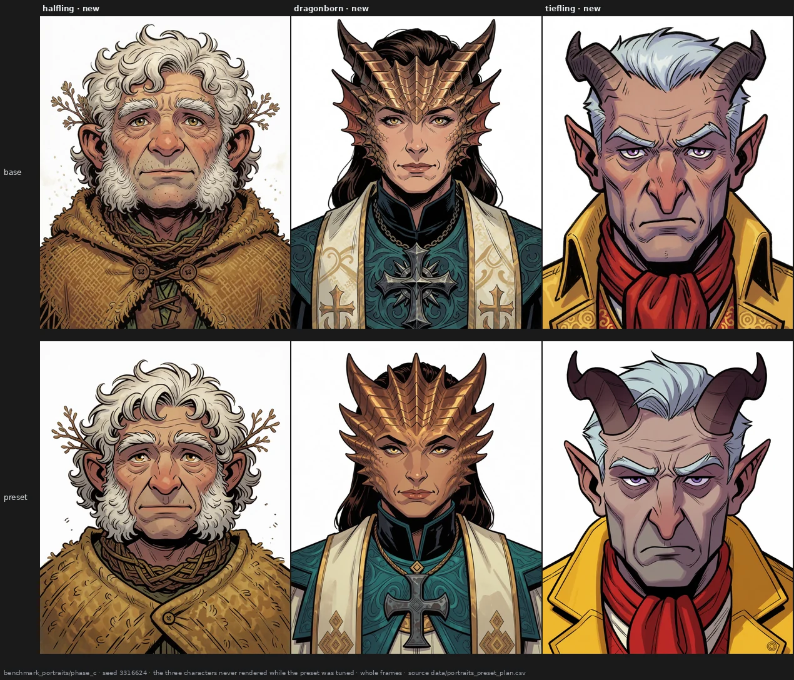
Someone who had never seen the project, shown each pair side by side without knowing which was which, picked the preset as the closer match to that description every single time: 56 out of 56. The characters stay themselves, but not untouched: the face moves a little more than a change of seed would move it, and a prompted expression can turn into a frown (page 28).
Then I turned to the other half of the model, the language model that reads the prompt. The same kind of edit there doesn't add noise: it changes the genre of the picture, and often who is drawn. Where the picture ends up depends on the edit and on the character — and when I took the style words away, each character fell back to a style of its own. And when I walked the dose up step by step, the first thing to go wasn't the style: it was the character. Tusks, braids, armour, the elf's androgynous look, all gone while the picture is still a comic, and dark skin turning lighter on the way. Random pushes of the same strength don't do it, and someone who knew nothing about the study saw the same thing I did: it's where the edit points, not how hard it pushes (page 30). And an edit has a look of its own: shown five pictures, two pairs made by two edits at the same seeds and one by a third, I found the groups in 20 of 28 trials and never grouped them by seed; across different subjects the look carries as a family resemblance rather than the same change (page 31).
I started with hand-calibrated presets over the whole stack (notebook page 01) and a notebook full of tests on permutations, rotations and block groups (notebook). Single blocks turned out to be the more useful unit: they're finer than the tuner's macro-blocks, and some of them behave the same way on every prompt I tried. The pages below report what survived confirmation:
- the edit and the instrument, including what the eye pass is and is not (20);
- a map of the 28 blocks, and a provisional guide to what each one does (21);
- one knob, saturation, confirmed (22);
- presets for a family of prompts (23);
- robustness to how the prompt is written (24);
- standard metrics on the same images (25);
- a preset made by eye from the map, tested blind on characters it never saw (28);
- inside a block: attention against MLP, where the noise sits, and what a middle-block edit costs (29);
- the text encoder: how hard an edit pushes the conditioning, where the picture goes, and what it costs the character (30);
- what a text-encoder edit leaves: the shape of its push, its signature across seeds and its family resemblance across subjects (31);
- what did not work, and the limits (26); other kinds of edit (27).
Related work
Layer and block specialisation. B-LoRA finds two blocks of SDXL that separate content from style [1]. Sparse autoencoders on SDXL Turbo find blocks specialised in composition, local detail, and colour, illumination and style [2]. Stable Flow finds that the layers that matter for editing in diffusion transformers are scattered through the stack, detecting them by bypassing layers and measuring the DINOv2 change [3]; FluxSpace edits attributes through the representations of transformer blocks in rectified-flow models [4]. Our map agrees that blocks specialise in a diffusion transformer and that the specialisation is not contiguous (page 21), but works on the weights rather than on activations.
Training-free re-weighting. FreeU rescales backbone and skip features of a U-Net at inference to change output quality [5]. It is the closest precedent for scaling part of a network without training; here the scaling is applied once to the weights of one block of a transformer.
Learned controls in weight space. Concept Sliders train low-rank adaptors that act as attribute sliders [6]; weights2weights finds interpretable directions in the space of customised LoRA weights [7]; LoRA Block Weight scales a LoRA's effect block by block in practice [8]. Here nothing is learned and the knob is a block of the base model, not a learned direction.
The same edit already exists as a tool. Scaling the base weights of single blocks, training-free,
is what two ComfyUI tools for Flux, published in September 2024 and developed independently of the
tuner used here, already do: the FluxBlocksBuster node [17] gives one multiplier
per block, and Block Patcher [18] sweeps a list of regular expressions over the block tensors,
rendering one image per value. Read from their source, both apply exactly the operation studied here
— W := W x v through ComfyUI's add_patches with strength_patch = 0 — and so does the tuner used
in this report; Block Patcher's regex is in fact finer than my per-block vector, reaching one tensor
at a time. Neither tool publishes a map, a dose, or a claim about what any block does: their author
calls them probing tools. The contribution here is therefore not the edit but its
characterisation — a measured per-block map with calibrated doses, pre-registered confirmations,
and the failures (docs/prior_work_block_scaling_tools.md).
Learned per-block scaling. Calibri calibrates a diffusion transformer with about a hundred scaling coefficients — one per block, or one per attention and MLP layer, or one per gate — found by an evolutionary search against a reward, and reports that the calibrated FLUX, SD-3.5 and Qwen-Image models are better than the originals [19]. It is the closest published work to this report: the same kind of edit, a multiplier on part of a block, but searched by a reward model rather than mapped by eye. Scaling the output projection of an attention or an MLP, as my edits do among others, is close to scaling that layer's output, which is what Calibri tunes. Calibri does not analyse attention against MLP or early against late blocks; page 29 does, and finds that they differ.
Inside the text side. In Stable Diffusion 1.x, causal tracing finds knowledge about styles, objects and facts spread through the U-Net but concentrated in one place of the CLIP text encoder, its first self-attention layer at the last subject token, where a closed-form edit removes a concept in under a second [31]; the same authors later report that causal tracing no longer pinpoints it in SD-XL and DeepFloyd, and localise knowledge in a few U-Net layers instead [20]. Editing one MLP matrix of the CLIP text encoder updates what a model draws with FID and CLIP score nearly unchanged, while editing the cross-attention of the U-Net for the same purpose sometimes makes the pictures incoherent [30]. Diffusion Lens reads the intermediate layers of the text encoder by generating images from them: simple and common concepts appear early, relations, colour bindings and rare concepts late, more gradually in a T5 encoder than in CLIP [21]; the per-token text embedding of a diffusion model can be probed and edited token by token [22]. Where the picture reads each word has been studied through cross-attention maps in U-Nets [23, 24] and, for dual-stream transformers, through the joint attention [25]. Page 30 edits the weights of a language-model text encoder and follows the edit into the conditioning and into the attention of a single-stream transformer, where the methods of [25] do not apply directly. Page 30 relates to these findings in three places: text-encoder edits change what is drawn at little cost to the surface, as [30] reports for targeted edits; switching off half of the first layer of Qwen3-VL makes the picture write the prompt, a first layer that [31] found decisive in CLIP; and the damage of an edit needs many of the encoder's intermediate readings at once, closer to the gradual build-up of [21] than to a single locus.
What the prompt asked for, and whom the model draws. Checking a picture against its prompt with a list of yes/no questions derived from the prompt is the scheme of TIFA [26] and Davidsonian Scene Graph [27], which answer them with a vision-language model; page 30 uses the same scheme with human labellers, blind to the edit and the dose. Audits of text-to-image models report that, when a prompt leaves identity open, the models default to lighter-skinned and stereotyped people [28, 29]. Page 30 finds the same direction appearing under edits of the text encoder, and not under random pushes of the same size.
Model and metrics. Krea-2 is described in its technical report [9]. Image quality and similarity are measured with CLIP-IQA [10], BRISQUE [11], CLIPScore [12], LPIPS [13], DISTS [14], SSIM [15] and DINOv2 [16] (page 25).
References
- Frenkel, Vinker, Shamir, Cohen-Or. Implicit Style-Content Separation using B-LoRA. ECCV 2024. arXiv:2403.14572
- Surkov, Wendler, Mari, Terekhov, Deschenaux, West, Gulcehre, Bau. One-Step is Enough: Sparse Autoencoders for Text-to-Image Diffusion Models (first version titled Unpacking SDXL Turbo: Interpreting Text-to-Image Models with Sparse Autoencoders). arXiv:2410.22366
- Avrahami, Patashnik, Fried, Nemchinov, Aberman, Lischinski, Cohen-Or. Stable Flow: Vital Layers for Training-Free Image Editing. CVPR 2025. arXiv:2411.14430
- Dalva, Venkatesh, Yanardag. FluxSpace: Disentangled Semantic Editing in Rectified Flow Transformers. arXiv:2412.09611
- Si, Huang, Jiang, Liu. FreeU: Free Lunch in Diffusion U-Net. CVPR 2024. arXiv:2309.11497
- Gandikota, Materzyńska, Zhou, Torralba, Bau. Concept Sliders: LoRA Adaptors for Precise Control in Diffusion Models. ECCV 2024. arXiv:2311.12092
- Dravid, Gandelsman, Wang, Abdal, Wetzstein, Efros, Aberman. Interpreting the Weight Space of Customized Diffusion Models. NeurIPS 2024. arXiv:2406.09413
- hako-mikan. sd-webui-lora-block-weight (software). github.com/hako-mikan/sd-webui-lora-block-weight
- Lee, Millon, Zhuo, Newton, Filatov, et al. (Krea). Krea 2 Technical Report, 23 June 2026. krea.ai/blog/krea-2-technical-report
- Wang, Chan, Loy. Exploring CLIP for Assessing the Look and Feel of Images. AAAI 2023. arXiv:2207.12396
- Mittal, Moorthy, Bovik. No-Reference Image Quality Assessment in the Spatial Domain. IEEE TIP 2012.
- Hessel, Holtzman, Forbes, Le Bras, Choi. CLIPScore: A Reference-free Evaluation Metric for Image Captioning. EMNLP 2021. arXiv:2104.08718
- Zhang, Isola, Efros, Shechtman, Wang. The Unreasonable Effectiveness of Deep Features as a Perceptual Metric. CVPR 2018. arXiv:1801.03924
- Ding, Ma, Wang, Simoncelli. Image Quality Assessment: Unifying Structure and Texture Similarity. IEEE TPAMI 2022. arXiv:2004.07728
- Wang, Bovik, Sheikh, Simoncelli. Image Quality Assessment: From Error Visibility to Structural Similarity. IEEE TIP 13(4), 2004.
- Oquab, Darcet, Moutakanni, Vo, Szafraniec, et al. DINOv2: Learning Robust Visual Features without Supervision. arXiv:2304.07193
- cubiq. FluxBlocksBuster+, node in ComfyUI_essentials (software),
conditioning.py. github.com/cubiq/ComfyUI_essentials - cubiq. Block_Patcher_ComfyUI — experimental sampler to iterate through blocks weight (software). github.com/cubiq/Block_Patcher_ComfyUI
- Tokhchukov, Mirzoeva, Kuznetsov, Sobolev. Calibri: Enhancing Diffusion Transformers via Parameter-Efficient Calibration. arXiv:2603.24800, 2026.
- Basu, Rezaei, Kattakinda, Rossi, Zhao, Morariu, Manjunatha, Feizi. On Mechanistic Knowledge Localization in Text-to-Image Generative Models. arXiv:2405.01008
- Toker, Orgad, Ventura, Arad, Belinkov. Diffusion Lens: Interpreting Text Encoders in Text-to-Image Pipelines. ACL 2024. arXiv:2403.05846
- Yu, Luo, Wang, Zhao. Uncovering the Text Embedding in Text-to-Image Diffusion Models. arXiv:2404.01154
- Hertz, Mokady, Tenenbaum, Aberman, Pritch, Cohen-Or. Prompt-to-Prompt Image Editing with Cross Attention Control. ICLR 2023. arXiv:2208.01626
- Tang, Liu, Pandey, Jiang, Yang, Kumar, Stenetorp, Lin, Ture. What the DAAM: Interpreting Stable Diffusion Using Cross Attention. ACL 2023. arXiv:2210.04885
- Helbling, Meral, Hoover, Yanardag, Chau. ConceptAttention: Diffusion Transformers Learn Highly Interpretable Features. arXiv:2502.04320
- Hu, Liu, Kasai, Wang, Ostendorf, Krishna, Smith. TIFA: Accurate and Interpretable Text-to-Image Faithfulness Evaluation with Question Answering. ICCV 2023. arXiv:2303.11897
- Cho, Hu, Garg, Anderson, Krishna, Baldridge, Bansal, Pont-Tuset, Wang. Davidsonian Scene Graph: Improving Reliability in Fine-grained Evaluation for Text-to-Image Generation. ICLR 2024. arXiv:2310.18235
- Luccioni, Akiki, Mitchell, Jernite. Stable Bias: Analyzing Societal Representations in Diffusion Models. NeurIPS 2023 Datasets and Benchmarks. arXiv:2303.11408
- Bianchi, Kalluri, Durmus, Ladhak, Cheng, Nozza, Hashimoto, Jurafsky, Zou, Caliskan. Easily Accessible Text-to-Image Generation Amplifies Demographic Stereotypes at Large Scale. FAccT 2023. arXiv:2211.03759
- Arad, Orgad, Belinkov. ReFACT: Updating Text-to-Image Models by Editing the Text Encoder. NAACL 2024. arXiv:2306.00738
- Basu, Zhao, Morariu, Feizi, Manjunatha. Localizing and Editing Knowledge in Text-to-Image Generative Models. ICLR 2024. arXiv:2310.13730
What holds, and what does not
| Claim | What it rests on | |
|---|---|---|
| Holds | The tuner adds nothing of its own at zero, and a render made again days later, in another session and another bench, is the same file pixel for pixel; differences between conditions are therefore the edit and not the pipeline. | Integrity checks with a pass/fail criterion fixed before the value. Tuner in the graph at zero against no tuner: maximum channel difference 0 on 15 cells (notebook page 00). Before each confirmatory bench of this report, the rows that already existed on older benches were rendered again: 1 of 1 on the wording bench, 26 of 26 on the saturation bench, 1 of 1 on the prompt-family bench, all at maximum difference 0. |
| Holds | With the tuner active, a patch that leaves every weight unchanged gives the same image pixel for pixel: the node and ComfyUI's patch path add nothing beyond the multiplication itself. | Pre-registered (C55), decisive rule fixed before the renders. Block 27's eight bf16 matrices multiplied by 1.0001 (no weight changes after rounding; the tuner reported 8 layers patched): maximum channel difference 0 against a baseline re-rendered in the same session, itself identical to the C47 baseline. Block 27 at +0.0001, which changes only its float32 scales, is also identical, as those parameters never reach the model (notebook page 13). One step of bf16 rounding (block 27 at ±0.004) changes 87-88% of the pixels. |
| Holds | Hashed filenames do not hide the condition from an observer who knows the edits, so every eye pass in this report is declared as made with the condition known. | Pre-registered in notebook page 03: four-way forced choice, 17 of 20 and 12 of 20 correct against a 25 percent chance level; 12 of 20 joint hits against a threshold of 5. |
| Holds | Inside the unedited image model, the norm of the image residual stream grows with depth, almost monotonically, from the first block to the last. | Pre-registered (C48 P3), 23 baseline renders with a read-only residual probe verified pixel-identical (max abs diff 0 on 23 of 23): Spearman correlation between stream norm and block index +0.99 (threshold +0.80), growing from 32.3 at block 0 and 1,364 at block 2 to 16,307 at block 27. |
| Holds | Scaling block 23 alone moves the saturation of a Krea-2 picture in one direction, monotonically with the dose and roughly in proportion to it. | Pre-registered. Chroma falls strictly from -0.45 to +0.30 in 15 of 16 prompt-seed cells (threshold 14); doubling the dose from -0.15 to -0.30 multiplies the gain by 1.76 (window 1.6-2.4). On every older render with a blk23 arm, 83 of 83 move chroma the expected way. |
| Holds | Where blk23 reaches the same saturation gain as adding "colorful, vivid highly saturated colors" to the prompt, it leaves the rest of the picture closer to the original than the words do. | Pre-registered on layout r: 6 of 7 scorable cells, median +0.08. Confirmed afterwards with standard metrics: LPIPS 7 of 7, DINOv2 6 of 7. The comparison is possible in 7 of 16 cells only: in the other 9 the words add more saturation than blk23 at its strongest tested dose. |
| Holds | A preset built from late blocks changes different subjects written in the same style in a common direction, clearly more than it does across styles. | Pre-registered (C49), all four rules supported. Within-family coherence above between-family coherence on 6 of 6 tested arms, median gap +0.19 (threshold 0.10); median within-family coherence 0.53 (threshold 0.40), about 70 percent of the coherence the same arm has across two seeds of one prompt (0.76). Middle-block arms 0.16 (H3, H4). |
| Holds | On text-encoder edits, three automatic measures reproduce the eye: VQAScore the loss of character traits, CSD-ViT-L how differently five word orders come out, and DINOv2-large how much an edit changed the picture. | Pre-registered (C66, docs/prereg_metric_validation.md, n = 657 renders): VQAScore (clip-flant5-xl) achieves pooled within-trait AUC = 0.885 against visual trait-loss annotations (threshold >= 0.80; per-trait AUC 1.000 elf, 0.995 fur, 0.985 antlers, 0.885 pauldron, 0.830 tan, 0.824 eyepatch, 0.686 gauntlet); word-order dispersion across 5 orders (T3, registered on CSD-ViT-L) rho = 0.844 (threshold >= 0.60), DINOv2-large reported at 0.898; change magnitude (T5, registered on DINOv2-large) rho = 0.661 (threshold >= 0.50), CSD-ViT-L reported at 0.654. One observer's labels. |
| Holds | Reordering whole blocks inside the checkpoint crosses the hatching strokes when pushed one way and runs them parallel when pushed the other, and the sign decides which. | Pre-registered in notebook page 06, on 16 prompts sharing nothing with the corpus of the observation: 16 of 16 prompts and 79 of 80 image pairs in the predicted direction, Holm p 9.2e-5 at the permutation floor. |
| Holds | A block-reordering edit makes the subject take more of the frame, more so at the higher dose, on styles that did not exist when the prediction was frozen. | Pre-registered in notebook page 03: geometric mean area ratio 1.234 across 10 new styles, 9 of 10 above 1, Holm-corrected p 0.018 to 0.035. Whether the structure or the size of the edit causes it is open: the control that separates them was not rendered. |
| Holds | A preset calibrated by eye on four character portraits changes three characters it never saw in a common direction, about as coherently as it changes the four it was tuned on. | Pre-registered (C52), preset frozen before any test render. Median coherence across the held-out characters 0.51 (threshold 0.40), against 0.61 on the calibration characters (allowed gap 0.15); the preset agrees with itself across seeds at 0.78 (H1, H2). |
| Holds | An observer who did not know which image carried the preset chose it as the one closer to the look its author described, on every sheet. | Pre-registered amendment 2 (H4): 56 of 56 sheets, held-out characters 12/12 on the original and 12/12 on the mirrored set (p = 0.0002 each); she named LEFT exactly 28 times and never the same side on both versions of a pair (position check 0/28). One observer. |
| Holds | On comic and cartoon prompts, edits to blocks 1-19 change the picture more than edits to blocks 20-27 at the same dose, and damage its surface far less often. | Pre-registered (C60), new prompts and seeds, blind pairs. Layout r per edit: median 0.72 against 0.84, one-sided Mann-Whitney p = 0.007. Change seen by eye: 1.59 against 0.47 on a 0-2 scale, p = 0.0002 (0.002 with unanswered pairs scored as the most change). Damage of medium or stronger on the edited side: 17 of 90 pairs against 71 of 90; baseline sides 0 of 180. |
| Holds | Even the middle-block edits chosen because they looked clean carry a visible surface cost on new prompts; the cost is concentrated in a few edits and depends on the prompt. | Pre-registered (C60) P4: edited-side damage of medium or stronger 0.19 against 0 on the baseline side, Newcombe 95% [0.11, 0.28], above the 0.10 bound for "no detectable cost". Four of the ten edits carry all of it (block 19 MLP + 8 of 9 pairs); six are at 0 of 9. Self-agreement on 15 repeats: 1.00. A follow-up on the six clean edits (C63, four new illustration prompts, 72 pairs) could not decide whether they are free: 4 of 72 damaged against 0, Newcombe [-0.005, 0.134], three of the four from block 9 attention +. |
| Holds | The size of the change a text-encoder edit makes to the conditioning predicts how much the picture changes, without looking at the picture. | Pre-registered twice. C67 E1: mean relative change over the words and readings an edit reaches against the eye's "how much it changed" on 140 elf edits, Spearman 0.71 (threshold 0.50); style changed against unchanged, AUC 0.80. C70 G3d: against the mean intensity of change by eye over five word orders, 20 edits, Spearman 0.80 (threshold 0.50); G3, rate of genre switches, 0.73. Exploratory check added after a review: the relation is carried mostly by differences between kinds of edit. Within the MLP-doubled edits, the ones that change genre, it nearly vanishes (C67 material 0.06, n 35, with 28 of 35 already labelled strong; C70 material 0.36, n 11, p 0.28); within the other kinds it stays 0.46-0.66. |
| Holds | Beyond a push shared by the whole prompt, an edit pushes small groups of two to four tokens in their own directions, and the boundaries of those groups follow the commas. | Pre-registered (C68), all 12 readings, 241 encodes. Half-life of the residual similarity 3 tokens (median over 20 edits, range 2-5). H1: clauses pushed less alike than whole prompts across orders in 20 of 20 edits (0.54 against 0.97-0.99). H2: at equal distance, tokens of one clause pushed more alike than across clauses in 18 of 20, sign test p = 0.0002. |
| Holds | At dose ±1, text-encoder edits change the genre and the content of a picture, usually including who is drawn, while costing less surface quality than a DiT preset. | Pre-registered prediction P2 (C65): BRISQUE change -1.52 against +8.09 for the DiT preset of page 28, CLIP-IQA -0.001 against -0.037. Identity (ArcFace, C65) kept for at most 2 eligible characters in 19 of 20 edits. Exploratory eye pass (C64, 140 edits): surface medium or strong in 8 of 140; strong changes 40 of 70 when a half is doubled against 4 of 70 when it is zeroed. |
| Holds | Inside the image model, the two strongest text-encoder edits move where the picture reads each phrase of the prompt about twice as much as two mild edits. | Pre-registered (C69 P4), 25 re-renders pixel-identical to the originals: change of the attention maps against the original 0.29 and 0.30 for L06 and L12 MLP doubled, 0.16 and 0.13 for L10 MLP and L19 attention zeroed. |
| Holds | With its style words removed, the elf character is drawn as anime: anime is the model's fallback for this description when nothing names a style, though not its default for an empty prompt. | Pre-registered (C72 A1): the prompt without "realistic western comics style, bold ink outlines, hatched shadows", five word orders at two seeds, labelled anime in 9 of 9 labelled pictures (one unlabelled; bar 7 of 10). The same prompts with the style words: Western comic in 9 of 9. The empty prompt at four seeds: anime, realistic, anime, painting. One labeller, not blind. C73 found that anime is this prompt's fallback only: seven portraits without "Western comics style" fall back to painting or realistic renders (anime in 1 of 28). |
| Holds | Without its style words, each character falls back to a genre of its own; there is no single default style. | Pre-registered (C73 H1): seven C52 portraits without "Western comics style", four seeds each. Painting for the elf rogue, dragonborn and tiefling, realistic for the half-orc, mixed painting / realistic / 3D for the dwarf, gnome and halfling; anime in 1 of 28. With the style clause all 28 are Western comic. One labeller, not blind. |
| Holds | Up to the full dose (one MLP of the text encoder doubled), the edits change style and content without breaking the picture: the style moves before coherence is lost, and coherence is not lost at all. | Pre-registered (C74 H3, amendment 2 fixing what counts as loss of coherence): L06 and L14 MLP on three portraits at two seeds, twelve doses from 0.10 to 1.00. The style changes before coherence is lost in 11 of 11 changing strips (bar 2/3); coherence is marked lost in none of the 18 strips, the L28 control included. One labeller, not blind. |
| Holds | Along a dose ladder the intermediate pictures move toward the picture at full dose: the destination is set by the edit, not reached by a detour. | Pre-registered (C74 H2): yes in 10 of 11 changing strips of L06 and L14 (0.91, bar 0.7). The one "no" is the elf rogue under L06, which passes through a painted look before ending in anime. |
| Holds | The style change along the dose is gradual rather than a sudden step (*: pooled over two edits that disagree). | Pre-registered (C74 H1), pooled over L06 and L14: gradual in 8 of 11 changing strips (0.73, bar 0.6), so the rule says gradual. *Split by edit, the two disagree: L14 is gradual in 6 of 6, L06 is a step in 4 of 5, from comic to photograph around d = 0.80. The split was not pre-registered. No strip changes style below d = 0.70. |
| Holds | The first and largest cost of the L06 and L14 text-encoder edits is the character the prompt asks for: its traits fall steadily with dose and go before the style changes. | Pre-registered (C75), blind yes/no labels, one question at a time. Part A (my labels, 222 pictures of the C74 ladder): retention falls with dose, median Spearman -0.89 over 18 strips (bar -0.50); traits go before the style in 11 of 11 L06/L14 strips (bar 2/3; 8 of 11 with a stricter criterion, exploratory); kappa 0.93 on repeats. Mean retention at d = 1.00: L06 0.52, L14 0.63, L28 0.93. Unchanged without the five traits the unedited model never draws (B0, eight seeds). C74 first noted it in free text. Status changed from open to holds by Alessandro on 2026-10-13. |
| Holds | How much a text-encoder edit costs the character depends on its direction, not its size: L06 and L14 cost far more traits than random pushes of the same size, L28 fewer. | Pre-registered (C75 B1), labelled blind by a second person who knew nothing of the study: retention under random pushes minus the real edit over 36 matched cells, +0.18 pooled (token +0.20, permuted +0.17; bar +0.15). At d = 1.00: L06 real 0.48 against random 0.89 / 0.87; L14 0.63 against 0.95 / 0.94; L28 0.97 against 0.92 / 0.83. Her repeats kappa 0.98; agreement with my labels kappa 0.85. |
| Holds | When the L06 or L14 edits change a character's skin, it becomes lighter; random pushes of the same size almost never change it. The prompts name no skin tone, so this is a drift toward the model's default, not a failure to follow the prompt. | Pre-registered (C75 T4, part A, my labels): lighter in 52 of 53 skin changes (bar 0.80), lighter majority for 2 of 3 characters (the dwarf's skin never changes). Part B2, second labeller: lighter in 14 of 14 changes under real edits; random pushes change the skin in 6 of 108 pictures. |
| Holds | On prompts complex enough to produce errors, the separators between the parts of the prompt make no measurable difference: commas, periods, semicolons, no punctuation at all, or no "Character N" labels. | Pre-registered (C78), blind labels, two four-character prompts at eight seeds, twelve questions per prompt: every version lands within 0.25 errors of the original (1.50 errors per picture). Repeats kappa 0.954. On the encoder side, the separator changes how alike the tokens of one part are by less than 0.001. |
| Holds | Splitting the prompt with BREAK, so that each part is encoded on its own, makes the picture much worse: the scene falls apart. | Pre-registered (C78): +5.50 errors per picture against the original, worse in 16 of 16 pairs. All four characters are present in none of the 16 BREAK pictures, and the catfolk is never humanoid. |
| Holds | The damage of the L06 and L14 edits does not travel through the readings taken right after the edited layer: restricted to them, the edit costs the character almost nothing. | Pre-registered (C79 rule 2), blind labels with C75's questions: trait loss with the push kept only on the next taps is 0.014 against 0.296 on all early and middle taps for L06 (ratio 0.05; rule at most 0.30), 0.000 against 0.128 for L14 (one tap). Repeats kappa 1.00. |
| Holds | Along the dose, the push of a text-encoder edit on the conditioning turns once and then runs straight. The bend belongs to the network, since random pushes have it too; its size belongs to the edit, and it is the same on very different prompts. | Pre-registered twice. C93 rule 1: one bend ("other", none of the four shapes asked) in 9 of 9 edits and 9 of 9 random controls. C100 rule 1, six prompts from a comic portrait to a macro leaf, doses up to 10: 18 of 18 edits and 18 of 18 controls. C100 rule 2: the total turn of each edit varies by 2-7 degrees over the six prompts, at most 15 in 10 of 10 (bar 10 of 10). Heavy positive doses (4 to 10) add nothing new. |
| Holds | The deeper the edited layer of the text encoder, the less its push turns along the dose. | Pre-registered (C101 rule 1), MLP doubled and beyond at all 35 layers, d 0.05 to 10: Spearman -0.655 between layer and total turn, permutation p 0.0002. From 82 degrees (layer 11) to 35 (layer 30). |
| Holds | The damage of L06 MLP doubled does not travel through the massive activations of the text encoder: restoring them leaves the damage in place, and changing only them leaves the picture almost as it was. | Pre-registered (TEP2, amendment 1: gate as a 5 % tolerance). With the 36 massive entries restored to their original value, the picture keeps at least 0.80 of the edit's DINOv2 distance in 5 of 6 character-seed cells (rule 2 bar 5 of 6); with only the massive change kept, median 0.04 of it. A random control of 36 entries restored keeps at least 0.80 in 5 of 6. Three characters, two seeds. |
| Holds | A fixed perturbation of the model, a text-encoder edit, a random push of the text encoder or an image-model preset, leaves a signature the eye recognises across seeds without being told which pictures belong together. | Pre-registered (C106): five pictures of one prompt, two pairs made by perturbations A and B at the same two seeds and one by C. Exact grouping 20 of 28 (0.71) against chance 1/15, binomial p 5.5e-18 (bar 0.50 and p < 0.001); text-encoder set 11 of 16, image-model presets 9 of 12 (bars 0.40 and p < 0.01); grouped by seed 0 of 28. Test-retest 4 of 4. C104, reported before it: one fixed random push changes the content the same way across three seeds in 1.00 (layer 9, n 5) and 0.92 (layer 26, n 12) of the units. |
| Holds | A fixed text-encoder perturbation gives a family resemblance across different subjects, and it does so across style domains as much as within one: something similar, not the same change. | Pre-registered (C105, amendment 1 on the match before the blind pass, amendment 2 during it adding the answer "something similar", scored 0.5). Content, share of "same" with "similar" as half: control of different perturbations 0.06 (n 8); real edits 0.38 within a domain, 0.50 across; random pushes 0.56 and 0.58: "transfers across domains" for both (bar: a gap of 0.30 over the control). 23 of 36 content answers are "similar", 3 "same". The domain specificity of image-model presets (2026-09-25) is not reproduced here. |
| Ambiguous | How much a block rewrites the picture can be read, in part, from the spectra of its own MLP weights, beyond what its depth explains. | Pre-registered (C46). Best Spearman rho 0.615 with depth removed, above the Bonferroni threshold 0.57, so the rule says supported; leaving one block out moves it between 0.50 and 0.70, so a single block can undo it. Correlational, 28 blocks, one checkpoint. |
| Ambiguous | Rewriting a prompt — reordering it, turning it into tags, using synonyms — changes the direction of a block's effect no more than changing the seed does, while changing the subject changes it a great deal. | Pre-registered (C45), verdict inconclusive by its own rule. Writing against seed, median -0.04 (threshold -0.10): met. Writing more alike than subject on 12 of 12 scored arms (threshold 75 percent): met. Writing more alike than a one-object content change on 0 of 12 (threshold 60 percent): not met. By eye, the same change under every writing on all 24 arms. |
| Ambiguous | A block permutation makes an attribute the prompt asks for, and the model usually drops, appear in almost every render, while a sign scramble moving the weights exactly as far does nothing. | Exploratory, scored by me with the condition visible: 19 of 20 seeds against 1 of 20 for the stock model and 1 of 20 for the scramble. One prompt family; the test of generality was designed and never run. |
| Ambiguous | The fine-texture cost per block measured in notebook page 05 replicates on new seeds for its own two comic prompts, but does not extend as measured to photographs. | Pre-registered attempt to overturn page 05 (C61): the gate failed (blocks 23-27, G = 0.989, p = 0.26) and the primary was undecided, so by its own rule nothing is decided. On P01 and P02, four new seeds: blocks 1-22 0.989 (page 05: 0.989), blocks 23-27 0.934 (0.932). On two photographs the tail turns into a gain (0.989 overall, block 27 at 1.27). |
| Ambiguous | The strong edits make the five word orders read the same phrases in more different places than the mild edits do, from the first steps of sampling. | Pre-registered (C69 P1, P2). P1 holds by its rule with a margin of 0.003, and only L12 MLP doubled raises the divergence (+0.060); L06 does not (-0.004) although its pictures scored as high. P2 holds at step 0 but the separation is not kept at steps 3-6. |
| Ambiguous | A random push of the conditioning as large as an edit's changes the genre of the picture as often as the edit does. | Pre-registered (C72 C1-C3, amendment 2: read together). Per-token random pushes switch the genre about as often as the real edits (permuted 11/27, token 10/27, against 14/27; R 0.79 and 0.71, bar 0.5), mostly to anime (15 of 21 switches); the same random vector added to every token switches none (0/27). By the rule fixed before the labels the joint reading is "depends on the form of the push". |
| Ambiguous | L28 MLP doubled, which never changes the style, still costs the character's traits. | Pre-registered (C75 T3): mean retention at d = 1.00 minus at 0.10 = -0.07 (bar -0.15: inconclusive). The half-orc loses her orc features from 0.60-0.70; other traits mostly stay; the elf's face turns green. Under random pushes of its size the character fares worse (B1). |
| Ambiguous | The traits lost under L06 and L14 travel mostly through the early and middle readings of the text encoder (layers 2-26) rather than the late ones (29-35). | Pre-registered (C79 rule 1): trait loss 0.212 with the push only on the early and middle taps, 0.066 only on the late ones; the difference, +0.146, misses the bar of +0.15, although the early taps cost more in 5 of 6 character-edit pairs (bar 5). Inconclusive. Neither half alone reproduces the full edit, and together they fall short of it: on the same two seeds 0.37 against 0.46 (L06) and 0.16 against 0.38 (L14). |
| Ambiguous | A deep text-encoder edit changes the pictures in a direction of its own, while an early edit only follows the direction the network imposes on any push. | Pre-registered (C102), not supported by its rules: computed rule mixed (L26 ahead of its random control in 4 of 8 cells, bar 6), blind rule -0.04 (bar +0.25). But the deep conditions moved the pictures too little for a direction to be judged (median DINOv2 distance 0.04-0.06), and the matching quantity was the wrong one (pitfall 93), so the question was not put fairly. Left ambiguous rather than overturned. |
| Ambiguous | Different random pushes at the same layer of the text encoder change the content of a picture in different ways: each has its own direction, rather than a direction imposed by the network. | Pre-registered twice (C103, C104), both ending in disagreement between the eye and the computed measure. Blind: three random pushes at one layer change the content the same way in 0.00 (layer 9, n 9) and 0.25 (layer 26, n 12) of the units. Computed (DINOv2 cosines): r 1.61 and 0.87, the "network" reading. The computed measure was later found not to track the eye (pitfall 94), and C106 found random pushes at layer 26 the hardest to tell apart (exploratory). |
| Overturned | The middle blocks rewrite the picture more than the late blocks because they write a larger fraction of the residual stream, and blocks 8 or 9 write the largest MLP fraction in the middle of the stack. | Pre-registered (C48 P1, P2), both refuted. P1: Spearman between relative write ratio and layout stability +0.49 (rule <= -0.50; with depth removed, -0.056) — late blocks 21-27 write the largest fraction of the stream (0.46 to 0.99) yet keep the layout (0.88). P2: among blocks 02-20 the largest MLP relative write sits at block 10 (0.612,jumping the stream from 1,775 to 2,844), not block 8 (0.156) or 9 (0.178). |
| Overturned | The family-coherent change the eye saw on the middle blocks is a change of content that a content embedding, DINOv2, would record. | Pre-registered (H5): supported if the median within-family coherence of the five middle arms on DINOv2 changes reached the style-feature value plus 0.10 (0.26). It is 0.007, below the style-feature value 0.159: refuted. In DINOv2 space no arm is family-coherent (all W at most 0.06). |
| Overturned | A dedicated style descriptor (CSD-ViT-L) and zero-shot CLIP genre classification reproduce cross-character style direction coherence, separate style from content changes better than DINOv2, and classify visual genre above 60% accuracy. | Pre-registered (C66, docs/prereg_metric_validation.md): 4 of 7 calibration rules failed. Cross-character CSD change-vector coherence correlates negatively with eye labels (T1 rho = -0.482, p = 0.0039, AUC = 0.056 vs threshold >= 0.75; T2 leave-one-out AUC = 0.383 vs >= 0.70); style-changed AUC on CSD (0.796) does not exceed DINOv2 (0.815, T4); zero-shot CLIP ViT-L/14 genre accuracy is 0.593 (86/145), 1 image below the 0.600 threshold (T6). |
| Overturned | Pushed to dose 0.500, the macro-block sliders Block_4 and Block_1 move the picture far from the baseline while keeping its line work, and are the best operating points found. | Published from two statistics, then retracted the next day when the renders were opened: Block_4 + at 0.500 leaves no subject, only a crumpled-stroke texture; Block_1 + at 0.500 is colour confetti. Block_4 + is already broken at 0.350. |
| Overturned | Structure coherence, a statistic of oriented line work, can rank edits by how much of the drawing they preserve. | Pre-registered eye veto: 7 agreements in 9 resolved pairs against a threshold of 8 in 12. Both disagreements are one condition, Block_6 + 0.080, which the statistic scores above its baseline and which I and six blind model observers call broken; Block_1 - 0.500 is the same case. The sign is wrong, not the size. |
| Overturned | The central macro-blocks give way under a push in a different way from the two at the ends of the stack. | Pre-registered primary of the centre-push bench: T = +0.053, p = 0.19 over 495 relabellings, with the range guard passed, so a null and not an inconclusive. Block_5 sits in the centre and gives way hardest of all. |
| Overturned | The difference between how consistent an edit's CLIP direction is on one prompt and on many prompts separates blocks that route meaning from blocks that filter structure. | Audit of an unpublished analysis: no script computes its p-values; doses are mixed under one key; the measure tracks how alike the images are; its second-ranked semantic router, blk26 +, lays the same mosaic of colour cells over any content. |
| Overturned | The preset changes a character's face no more than changing the seed does. | Pre-registered (H3), refuted: on both eligible held-out characters the face under the preset is less similar to the base (ArcFace 0.75 and 0.74) than the base is to itself at another seed (0.82 and 0.75). Described after the test: 0.74 on average against 0.80 for a seed change and 0.29 for two different characters. |
| Overturned | A single text-encoder edit moves different comic characters in the same direction, as the DiT preset of page 28 does. | Pre-registered (C65 H1), refuted: coherent in 4 of 20 edits against a bar of 14; median coherence 0.21 against 0.51 for the DiT preset. Identity (ArcFace) is kept for at most 2 eligible characters in 19 of 20 edits. |
| Overturned | Pictures that leave the Western-comic style are the ones whose image model pays less attention to the words that name the style. | Pre-registered three times, never supported. C69 P5 (between edits): L06 lowers the style share 0.095 to 0.054, L12 raises it to 0.121. C70 G1 (20 pictures, switched or not): AUC 0.46 (bar 0.70). C70 G1d (intensity 0-3): Spearman +0.05 (bar -0.40). |
| Overturned | The edits that end in anime push the conditioning in the direction that writing "anime style" instead of "western comics style" would. | Pre-registered (C71), 16 encodes, gate bit-identical. H1: cosine with the comics-to-anime direction against the number of anime pictures, Spearman -0.01 (bar 0.50). H2: with the anime-minus-painting direction, -0.00 (bar 0.40). Every cosine lies between -0.12 and +0.07. |
| Overturned | A strong text-encoder edit sends each character to the genre that character falls back to without style words. | Pre-registered (C73 H2), not supported: of 43 switched pictures of the four characters with a clear fallback, 0.28 land on that fallback, against 0.27 expected if destinations ignored the character (bar: +0.20). |
| Overturned | At every layer of the text encoder, an edit's push bends less than a random push of the same size injected at the same place. | Pre-registered (C101 rule 2): the edit bends less in 24 of 35 layers, not at layers 2, 3, 4, 8, 9, 10, 11, 14, 15, 17 and 34, so the verdict is "depends on the layer". Median edit minus control: +1 degree in layers 0-11, -5.5 in 12-23, -15.9 in 24-34. C93 had suggested it from three layers; C100 already found L14 bending more than its control (80.5 against 77.3). |
| Open | Blocks near the output keep the composition of the picture and change its surface; the middle of the stack, worst at blocks 8 to 10 pushed positive, rewrites the picture itself. | Exploratory, 23 prompts on three benches, doses calibrated by eye. Layout r with the baseline 0.88 for blocks 21-27, 0.65 for blocks 05-14; blk09 positive 0.46. Agrees with the pre-registered result of notebook page 05 that the cost of a push grows toward the output. |
| Open | Once the change shared by every edit is removed, blocks 08-10, 15-16 and 23-26 pushed positive change the picture in the same direction, and blocks 22-27 pushed negative do too. | Groups formed on the 12 styles prompts and found again on 11 prompts of two other benches, with other seeds and other doses (residual correlation +0.15 to +0.37); the group 02-05 did not come back (+0.01 to +0.14). Not pre-registered. |
| Open | The blocks at the two ends of the stack change properties of the picture — colour, grain, sharpness — in the same way on every picture; the middle blocks change what is depicted, and differently on each picture. | At one dose for all blocks, a block is recognisable as itself on another picture only at the ends (positive: blocks 0, 1, 25, 26, 27; criteria fixed before measuring, p = 0.0015). The ends keep the layout (0.88 for 21-27) and the middle rewrites it (0.65 for 05-14); middle blocks change the content most by DINOv2 (page 25). Counted in rendering statistics, however, the ends move more of them at once (effective number 9.6 for 21-27 against 7.5 for 05-14), so "fewer things" holds for kinds of property, not for statistics. |
| Open | At the same dose, the blocks near the output reach visible artefacts first, while most middle blocks show none; the middle has room before artefacts but drifts toward pictures that are clean and incoherent. | My artefact labels at dose 0.350, three prompts, one seed: blocks 4 to 11 OK in both directions; positive, strong artefacts on 19, 21, 22, 24 and 25, broken on 26 and 27. Agrees with the pre-registered result that the cost of a push grows toward the output (notebook page 05). The split into hard and soft limits is an observation, not measured. |
| Open | A provisional, by-eye description of what each of the 28 blocks does in each direction, offered as a starting point for anyone who wants to try the tuner, not as a measured result. | Written by me while looking at the v4 bench (five prompts, one seed) on a page that also showed the 18 prompts of the styles and v3 benches. Where a measurement touches an entry, it agrees on blocks 00, 22, 23 and 27, partly on 01, and the statistic is the suspect on 26. Most Style-band entries have no measurement at all. |
| Open | Against a saturation slider applied to the finished image, block 23 is not a cleaner way to change colour: it also regenerates the picture and changes its lightness contrast. Adding colour it may look more natural than the slider; removing colour the slider looks more natural. | C53, no new render; slider matched in chroma gain. Layout r 1.00 for the slider against 0.87 and 0.85 for blk23 (16 of 16 cells). Blind forced choice, one observer who knew the renders but not the side: adding colour blk23 chosen 12/16 and 11/16 (rule: 12 on both, not met); removing colour 1/16 and 4/16 (slider). The block also repairs shapes (a half-formed hood), so the choice mixes colour with content. The primary blind observer has not answered yet. |
| Open | Late-block presets are most coherent on cartoon prompts, less on oil paintings and least on photographs, where the eye found no common look for two of the arms. | Split by family after the test, descriptive: up to 0.80 on cartoon, 0.28-0.71 on oil, 0.12-0.53 on photographs; the eye said no common look for blk20 and blk23 on photographs, where the numbers are 0.29 and 0.12. |
| Open | Middle blocks also give a family a recognisable common change, but it is a change of what is depicted, and no measure used here sees it. | Eye, deposited before the numbers: a common look in 8 of 12 Style-band cells and 2 of 3 blk09 cells. Style features: within-family coherence 0.06-0.17. DINOv2: 0.007, refuted as a substitute (page 25). |
| Open | Block 9 pushed positive can change the identity of a subject, turning the female blacksmith into a man, and it does so at one seed and not at the other. | Eye notes on the oil and photo families at seed 1414213; at seed 5772156 she stays a woman in all three families. CLIPScore on the blacksmith prompts drops by 3.8, the largest drop of any arm. Two seeds, one subject. |
| Open | For an identical vocabulary, the order of the words changes the pose and framing of the picture but not what a block does to it. | Exploratory, one prompt in five orders, two seeds, 56 arms. Consistency across orders tracks consistency across seeds (r = 0.92) and is on average 0.06 higher; median 0.69 on the 43 arms larger than the reordering itself. Baselines of different orders differ by Delta E 16-31. |
| Open | Middle-block edits change the content of the picture more than late-block edits and cost nothing measurable in image quality, while late blocks change less and cost more. | Pre-specified descriptive measurement, no decision threshold. DINOv2 similarity to the baseline 0.87 and 0.88 for blk17 + and blk09 +, against 0.90-0.96 for the late arms; BRISQUE -0.5 and -0.3 for those two, +9.6 for blk27 -0.25 and for the combo. |
| Open | The portrait preset can flatten an expression the prompt asks for and remove small details the prompt names, while keeping the character recognisable. | Analyst's look after all numbers, not blind, on seven pairs selected because ArcFace marked them: the gnome's prompted wide-eyed curiosity becomes a frown at three seeds of three; the half-orc's snarl becomes a stern closed face; prompted dirt smudges and chalk dust vanish. No deformation in any of the seven. Untested; block 8 (+0.15) is the first suspect. |
| Open | Pushed at the same dose, the MLP half of a block is noisier than its attention half in most blocks; the attention adds noise only at the very end of the stack. | Blind eye pass on the split atlas (C59), one seed, three prompts, one observer: of 19 block-sign cells with noise in either half, the MLP is noisier in 13, the attention in 2, tied in 4 (at medium or stronger: 7, 1, 3). Protocol fixed before the labels, no decision rule. The pre-registered measure of C58 could not decide. |
| Open | In the first block the two halves compensate each other: either half lowered alone destroys the picture, while the whole block lowered by the same amount keeps its composition, though not its surface. | C59 at -0.35: attention alone and MLP alone break the image in 9 of 9 cells each by eye; the whole block keeps the layout in 3 of 3 cells (layout r 0.69-0.80 against 0.05-0.36) but is labelled strong blotches blind. The whole block exists at one seed only. |
| Open | When a text-encoder edit makes a Western-comic picture change genre, it lands on anime far more often than on anything else, and only edits that double a layer half do it. | Described, not tested (C70, one observer, seed 3141592, elf in five word orders). Of 100 edited pictures, 50 changed genre: 39 to anime, 11 to cartoon, none to realistic or painting. None of the four edits that zero a layer half changed genre; 13 of the 16 that double one did, in at least one order. |
| Open | Where a strong text-encoder edit sends the picture depends on the edit's own direction, not only on its size. | Reported, not tested (C72, 9 labelled cells per edit). L28 MLP doubled, the largest push, keeps the Western comic in 9 of 9 while random pushes of its size switch 16 of 18; L05 MLP doubled goes to anime in 9 of 9 while random pushes of its size switch 1 of 18. On seven portraits (C73, 14 pictures per edit): L06 MLP doubled gives realistic renders in 11 of 14, L14 cartoon in 9 of 14, L26 and L28 keep the Western comic in 14 of 14. |
| Open | Single phrases of the prompt carry strong priors of their own, and they match what surfaces under edits: a female dwarf with a beard, a uniform drawn as anime. | Described (C72 block B, four seeds, one labeller): "female dwarf" and the full dwarf prompt give a bearded woman in 4 of 4; "uniform" an anime girl in 4 of 4; "realistic western comics style" a bearded cowboy comic in 4 of 4; "female antlered elf brawler" anime in 3 of 4; phrases without a person are mostly realistic (78 of 165). |
| Open | With half of the first layer of the text encoder switched off, the image model writes fragments of the prompt as text instead of drawing it; with the whole layer off it draws coloured noise. | C77, rule fixed before the renders: text in 4 of 6 new pictures (holds at 5), so open. Counting the C64 elf, attention off writes text in 4 of 4 prompts, MLP off in 2 of 4, the whole layer off in 0 of 4 (exploratory). One seed, my readings, not blind. Encoder side: with half the layer off the conditioning keeps its scale (0.98x and 0.84x) and the identity of the tokens; with the whole layer off its norm is 21.7x on average (62x at L05) and no token is recognisable. |
| Open | Inside the text encoder, one layer writes almost all of the internal signal: the MLP of layer 6 takes its size from about 400 to about 13,100, and every later layer up to 33 adds only 1 to 8 % of it. | Described, no pre-registration: a read-only probe of all 36 layers on 16 prompts. Layer 6's MLP writes 33.8 times the size of the signal it receives; layers 7-33 write 0.012-0.080 times; the last two reshape it (the norm falls to 12,768 and 6,606). L06 doubled is also the edit that turned seven portraits into realistic renders in 11 of 14 pictures (C73). |
| Open | The same change of the conditioning moves the picture far less when it comes from a deep layer of the text encoder than from an early one. | Reported, no threshold (C102 rule 3): every edit and random push matched to the same relative change of the whole conditioning within 1 %. Deep (mean of L26, L30) moves the picture less than early (L04, L09) in 23 of 24 prompt-seed-level cells; at the push of L06 doubled, median DINOv2 distance L04 0.53, L09 0.34, random at L09 0.46, against L26 0.06, L30 0.04, random at L26 0.05. |
| Open | The cosine between DINOv2 or CSD change vectors does not tell whether two pictures changed the same way, as the eye sees it. | Exploratory, after C104's rules: per unit, the mean cosine against Alessandro's same / different answers, DINOv2 for content AUC 0.64 (n 28 and 19), CSD for style AUC 0.36, below chance. The computed halves of C102 and C103 rested on that measure and are withdrawn as evidence of a shared direction. |
Holds33 renders · 10 prompts · 4 seeds · 2026-10-05
The edit, the instrument, and what a result had to pass
The direction I'm chasing. Before asking whether a block of weights is a knob, I need to know that the edit does only what I say it does, that the same render comes out twice, and that my own eye — the main instrument of this project — is described honestly.
What would kill it. A tuner that changes the picture at zero, a re-render that differs by a single pixel value, or an eye pass presented as blind when it was not.
Where we are. The pipeline is deterministic and the tuner is inert at zero, checked again before every confirmatory bench. The eye is not blind and is declared as such; every image it judged is published.
In two minutes
Krea-2 is a diffusion transformer with 28 single-stream blocks. Each block holds 13 weight tensors; eight of them are 2-D matrices (attention projections and the MLP), and the tuner reaches those eight. An edit in this report is one number per block: the block's eight matrices are multiplied by 1 + d, where d is the signed dose. Nothing is trained, nothing is added at inference, and a preset is just a vector of such numbers.
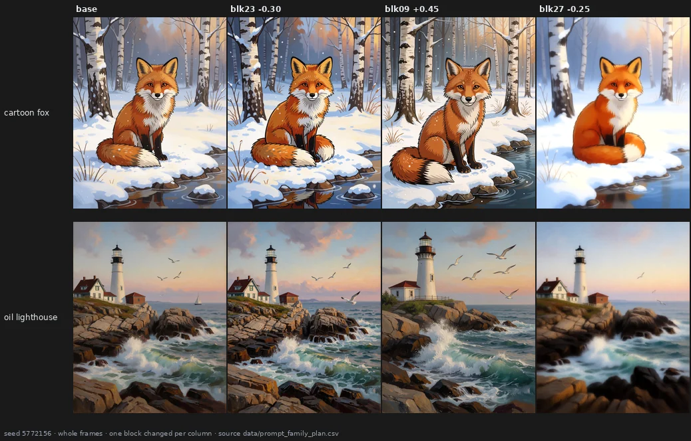
Three blocks, three different kinds of change: colour, what is depicted, softness. The rest of this report asks how far such a change can be trusted to be the same on another picture.
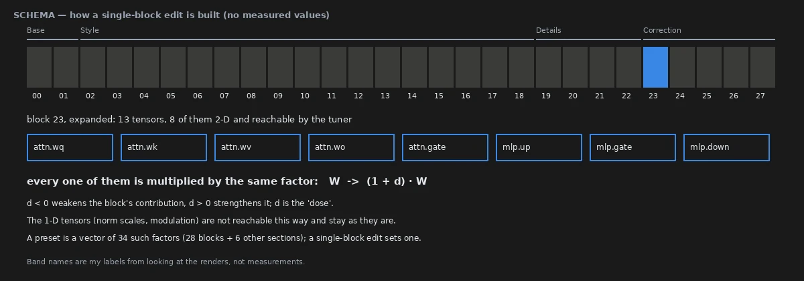
The same sampling is used throughout: euler_ancestral, simple scheduler, 9 steps, CFG 1.0, 1024×1280. Every result in this folder went through the same sequence: an observation by eye on an exploratory bench, a claim written down, a pre-registration with its decision rule and its scoring code committed, a reproduction check, the renders, my eye pass deposited in the repository, and only then the numbers.
The verdict
The instrument does what it says. With the tuner in the graph and every gain at zero the render is the render without the tuner, bit for bit; renders reproduce exactly across restarts and across benches, and that was checked again, on 28 images, before each of the three confirmatory benches in this report. The eye pass that every result here leans on is not blind, and is reported as made by one observer who knew the conditions.
Why I might be wrong
- Determinism is checked on one machine and one software stack. Another GPU, driver or ComfyUI version may not reproduce these files bit for bit; the effects should survive that, the exact pixels may not.
- The model file's hash is not recorded. It sits outside the repository.
- The tuner's version is not recorded in the reproducibility blocks; it is a separate repository.
- Doses were calibrated by eye, per block, on single images. They are not calibrated displacements, and page 23 shows that some of them are too strong for a preset.
The data
The edit
The tuner node (ArthemyKrea2ModelTuner, Real Value mode, preceded by ArthemyKrea2ResetPatcher)
takes a 34-slot vector; slot k is the dose of block k for k = 0 … 27. Only the 2-D tensors
are scaled: the 1-D norm scales are never reached, so they cannot carry an effect
(docs/normscales_never_applied.md). Doses are small — between 0.075 and 0.45 in this report —
and differ by block, because a block near the output breaks at a dose a middle block barely
feels (docs/RENDERS_2026-09-30_single_blocks_styles.md).
The same render twice
| check | where | result |
|---|---|---|
| tuner at zero against no tuner | notebook page 00, 15 cells, 3 prompts | max channel difference 0 |
| same render across a restart | notebook page 00 | max channel difference 0 |
| wording bench, first row against the prompt-order baseline | benchmark_prompt_writing |
1 / 1 identical |
| saturation bench, rows already on older benches | benchmark_blk23_colorful |
26 / 26 identical |
| prompt-family bench, first row against the styles baseline | benchmark_prompt_family |
1 / 1 identical |
| tuner active, no weight changed (block 27 matrices x1.0001) against no tuner | benchmark_null_patch |
max channel difference 0 |
| tuner active, block 27 at +0.0001 (float32 scales only) | benchmark_null_patch |
max channel difference 0 |
| tuner active, block 27 at +0.004 / −0.004 (every weight one bf16 step) | benchmark_null_patch |
87% / 88% of pixels differ (mean 2.3 / 2.1 of 255) |
Each reproduction row was queued alone first and compared before the rest of the bench was allowed to run. The outputs of the checks are in the render notes listed under Provenance.
The first row only shows that the tuner is clean when it is switched off: at zero it adds no patch
at all. Whether it stays clean when switched on was a question I raised on 2026-10-06,
and the C55 rows answer it (docs/prereg_null_patch.md). Read from the code, an active patch is
W × (1 + d) computed in float32 and rounded back to bfloat16, on the patched tensors only; a
multiplier of 1.0001 rounds every bf16 weight of block 27 back to itself. With the node active on
that patch the image is the same file pixel for pixel. The node is a clean multiplier. The last row
shows the other side: the smallest change the matrices can take, one rounding step on every weight
of one block, already redraws the picture slightly almost everywhere. Every edit in this report,
however small, therefore re-draws the image along a nearby path; page 22 shows what that does to an
unstable detail.
Why the eye pass is declared open
In notebook page 03, a pre-registered round asked me to tell which edit produced an image whose
filename was a hash. I was right 17 times in 20 on one condition and 12 in 20 on the other,
against 5 in 20 by chance. Hiding names does not hide an edit with a visible signature from
someone who has looked at hundreds of them. So every eye pass in this report is declared as
made with the condition known, it is deposited in data/ before the numbers are computed, and
all the images are published so that anyone can repeat it.
The measures
- Style features — 23 statistics of texture, edges and colour per image
(
experiments/style_features.py); an arm's effect is its vector of changes from the baseline. - Colour and layout — CIELAB at 64×80: mean chroma change, and layout r, the correlation of the lightness channel with the baseline.
- Standard metrics — BRISQUE, CLIP-IQA, CLIPScore, LPIPS, DISTS, SSIM and DINOv2 cosine (page 25).
When a statistic and the eye disagree, the statistic is suspected first: twice in this project a statistic ranked destroyed images as the best (page 26).
Reproducing this
model:
checkpoint: krea2_turbo_bf16.safetensors
weight_dtype: default
sha256: not recorded — the file is outside the repository
sampling:
sampler: euler_ancestral
steps: 9
cfg: 1.0
denoise: 1.0
scheduler: simple
resolution: 1024x1280
vae: qwen_image_vae.safetensors
text_encoder: qwen3vl_4b_bf16.safetensors (CLIPLoader type krea2)
tuner:
node: ArthemyKrea2ModelTuner, after ArthemyKrea2ResetPatcher
version: not recorded — the tuner is a separate repository
mode: Real Value, driven by a 34-slot vectors_override
prompts:
files: [data/prompt_writing_plan.csv, data/blk23_colorful_plan.csv, data/prompt_family_plan.csv]
ids: [V1_Original, E1_cartoon, E3_oil, E7_sepiaphoto, C2_rally, C3_fox, C4_stilllife, P3_archerforest, P4_selfie, REPRO_C3_fox]
seeds: [3141592, 2718281, 1618033, 4669201]
conditions:
- name: repro_baseline
dose: 0
measured_D: 0 (no edit)
- name: repro_b23
dose: "-0.300, +0.150, +0.300 on block 23"
measured_D: not measured; the dose is a per-block gain, not a calibrated displacement
outputs:
folders: [benchmark_prompt_writing, benchmark_blk23_colorful, benchmark_prompt_family]
manifest: data/prompt_writing_plan.csv, data/blk23_colorful_plan.csv, data/prompt_family_plan.csv
analysis:
scripts:
- experiments/check_prompt_writing_repro.py # 170a82a27b99ef708b314890096f01bf0d21c14e7c4c27b4ed866a83deca28c7
- experiments/blk23_colorful.py --repro # cbfc0f8354fdc869d400b7d45c698f6828e1dd04835def28f4ecd9da09154924
- experiments/prompt_family.py --repro # 67fc54ec7a5fdce93dd86ea0190378f230bfcfac00e731843a2d2e4d4c69b427
criterion: maximum absolute pixel difference 0
Provenance
- Renders. benchmark_prompt_writing (1), benchmark_blk23_colorful (26), benchmark_prompt_family (1), benchmark_null_patch (5).
- Check outputs:
docs/RENDERS_2026-10-04_prompt_writing.md,docs/RENDERS_2026-10-04_blk23_colorful.md,docs/RENDERS_2026-10-04_prompt_family.md. - Earlier integrity checks: notebook page 00 (tuner at zero, determinism, noise floor); notebook page 03 (the blinding round).
- Model structure:
docs/model_structures/,docs/normscales_never_applied.md.
Open1606 renders · 26 prompts · 4 seeds · 2026-10-17
A map of the 28 blocks
The direction I'm chasing. If knobs live in the weights, they should live in particular places. I pushed every block on its own, in both directions, on 23 prompts, and wrote down what each one does, so that the confirmatory tests on the other pages had somewhere to aim.
What would kill it. A stack where every block does a bit of everything, with no region that behaves differently from the others and nothing that comes back on a second set of prompts.
Where we are. The two ends behave like controls on the surface of the picture; the middle rewrites what is depicted. A few groups of neighbouring blocks push the same way on a second set of prompts. Only the weights and residual-stream tests were pre-registered: the weights claim passed by a thin margin, the residual stream grows 505-fold from input to output, and the prediction that late blocks keep the layout because they write a smaller fraction of the stream was refuted — they write the largest fraction — while block 10 produces the middle-stack MLP write spike.
In two minutes
The atlas behind this page is three benches — 12 prompts in eight styles, 6 prompts at two
seeds, 5 prompts with comic pages and crowns seen from above — with every block pushed on its own
in both directions at a dose I calibrated by eye. Looking at the sheets, the stack sorts itself
into four bands: Base (00–01, grain and detail), Style (02–18, light, form, abstraction), Details
(19–22) and Correction (23–27: saturation, sharpness, grain). My block-by-block definitions are
in data/single_blocks_v4_definitions_alessandro.md.
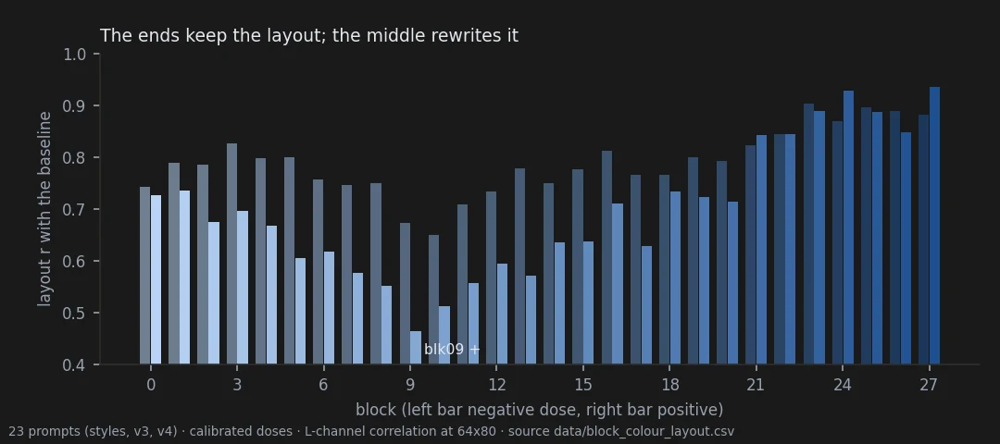
What the eye saw first was a split between blocks that redraw and blocks that re-shoot. Blocks 02–07 pushed positive keep frame, pose and props and redraw the subject (a younger face, a cleaner line, smoke over the forge). Blocks 08–09 pushed positive change the picture itself: a crown seen from above turns to a side view, the blacksmith becomes a photograph, the selfie changes identity.
The verdict
The ends of the stack are where a single block behaves like a surface control: the layout stays, and colour, grain or sharpness move. The middle is where single blocks change content — viewpoint, identity, medium — and are least predictable. A few groups of neighbouring blocks push in the same direction on a second set of prompts. The split between stable and unstable blocks is partly visible in the weights themselves, though that result is marginal. A read-only probe on the 23 baselines confirmed that the image residual stream grows with depth (Spearman +0.99), but refuted the idea that late blocks keep the layout because they write a smaller fraction of that stream: blocks 21–27 write 46% to 99% of the stream, while in the middle of the stack block 10 — the third member of the 08–10 group — produces a 0.61 MLP write spike that jumps the stream norm from 1,775 to 2,844.
Why I might be wrong
- This is a map, drawn after looking. The bands are my reading of the sheets; only the weights test (C46) and the residual-stream probe (C48) were frozen before the data.
- The doses differ by block and by bench. A block that looks stable may have been pushed less.
- 64×80 sees layout and colour, not grain. The groups say nothing about blocks 00, 01, 21, 26 and 27, whose effects are fine texture.
- The replication of the groups is weak. Second set of prompts, other seeds and doses, but the groups were chosen after seeing the first set and the measure was the same.
- The weights result rests on n = 28 and one checkpoint, and a single block can flip it.
- The guide to each block is one observer's shorthand. It was written from a few prompts, at one dose per direction, by me, knowing which block I was looking at. Several entries are simplifications, some will turn out to be wrong, and the effect of many Style-band blocks changes with the prompt.
The data
Where the layout holds
Layout r is the correlation of the lightness channel with the baseline at 64×80 (1 = the same
composition), averaged over 23 prompts and both signs (data/block_colour_layout.csv):
| blocks | 00–01 | 02–04 | 05–14 | 15–20 | 21–27 |
|---|---|---|---|---|---|
| layout r | 0.75 | 0.75 | 0.65 | 0.73 | 0.88 |
The bands hold at the two ends and blur in the middle; the sharpest break is at the Correction end, not between Style and Details. Positive pushes of blocks 08, 09 and 10 are the least stable of all (0.55, 0.46, 0.51). This agrees with two pre-registered results of the exploratory notebook: every push costs fine texture and the cost grows toward the output, and two places pushed the same distance move the picture in distinguishable directions — position, not only distance, decides what an edit does.
What the ends change, and what the middle changes
A separate bench pushed every block by the same amount, 0.350, on three prompts, so that blocks
can be compared at equal dose. The test asked, before measuring, whether a block's change on one
picture is recognisable as that block's change on another. On the positive side only five blocks
are: 0, 1, 25, 26 and 27 — the two ends of the stack (p = 0.0015; on the negative side 0, 8, 20 and
27). Everywhere else, a block does something reproducible on the same picture but something
different on another (docs/single_blocks_atlas_result.md, data/single_blocks_tests.csv).
Put together with the layout above and with DINOv2 on page 25, the picture is consistent: the ends act on properties of the image — colour, grain, sharpness, softness — and act the same way whatever is depicted; the middle acts on what is depicted — viewpoint, shape, identity, realism — and how it does so depends on the picture. The two sheets in the guide below show it directly: the crown stays the same crown under blocks 21 to 27 and becomes another object under many middle blocks.
One measure does not fit the simple wording "the ends change fewer things". Counting how many of 29
rendering statistics an edit moves at once (the participation ratio of the change, at dose 0.350),
the ends move more of them, not fewer: median 9.6 for blocks 21–27 and 10.1 for 00–01, against 7.5
for 05–14 (data/block_change_breadth.csv). Grain and sharpness move many texture statistics
together. The ends change fewer kinds of property, through many statistics; the middle changes
content, which rendering statistics only partly see.
Blocks that push together
For each pair of arms on the same prompt, the change each makes to the picture is correlated pixel by pixel after removing the prompt's common mode — the part of the change that every edit shares, simply because any edit moves the picture away from that particular baseline. Before removal the two signs of one block correlate positively on 27 of 28 blocks; after it, negatively on 25 of 28.
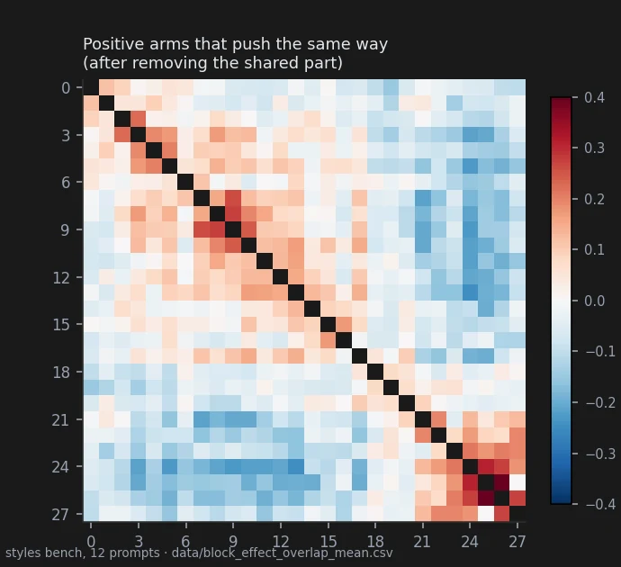
| group | styles, 12 prompts | other benches, 11 prompts |
|---|---|---|
| 08 · 09 · 10, positive | +0.24 to +0.27 | +0.15 to +0.23 |
| 23 · 24 · 25 · 26, positive | +0.21 to +0.51 | +0.23 to +0.37 |
| 15 · 16, positive | +0.17 | +0.21 |
| 02 · 03 · 04 · 05, positive | +0.19 to +0.23 | +0.01 to +0.14 — does not come back |
| block 05 against block 24, positive | −0.23 | −0.22 |
Negative arms 22–27 form one group as well (most pairs +0.19 to +0.54). Blocks 25 and 26 are
the exceptions where both signs push the same way even after removal — the two blocks I had
already marked as damaging in both directions. The tuner's six macro-block sliders (Block_1 …
Block_6, each a run of consecutive blocks) cut across two of these groups: 08–10 straddles
Block_2/Block_3 and 23–26 straddles Block_5/Block_6. A single block is the finer lever.
What the weights show
A pre-registered test (C46) asked whether any of 34 statistics of a block's weight matrices tracks how much the block rewrites the picture, beyond what depth alone explains. The analyst's registered prediction was that depth would explain everything; it failed.
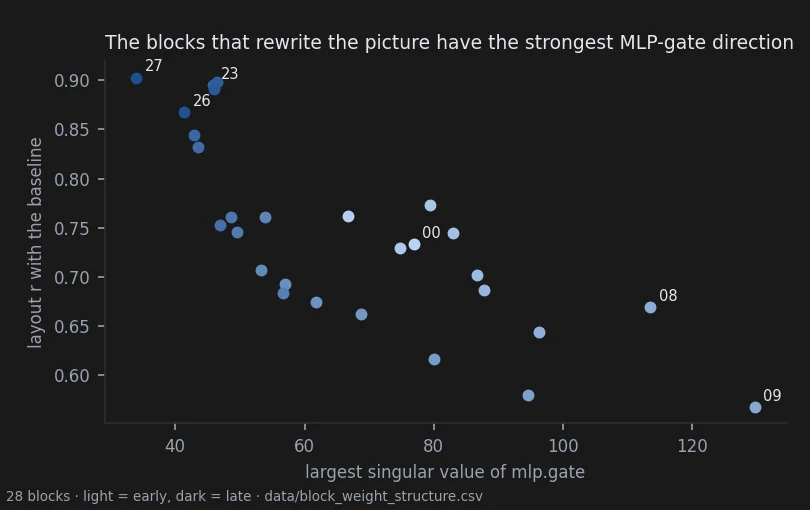
| statistic | ρ raw | ρ with depth removed |
|---|---|---|
mlp.down.sigma1 |
−0.41 | −0.615 |
mlp.gate.stable_rank |
+0.53 | +0.613 |
mlp.down.stable_rank |
−0.36 | +0.585 |
Three statistics pass the Bonferroni threshold of 0.57; leaving one block out keeps them between 0.50 and 0.70. Two readings are worth recording. Blocks 08–09 have the strongest single direction in their MLP gate in the stack (σ₁ 113 and 130 against 34–97 elsewhere). Blocks 26–27 write through almost one direction (stable rank of the attention output 26 and 13 against 100–260 elsewhere), which is one mechanical reading of a knob. Block 23, the saturation knob of page 22, does not stand out on any of the 40 values.
What each block writes into the stream
Weights alone do not show how much a block actually adds to the running image signal during
sampling. A pre-registered follow-up (C48, docs/prereg_residual_probe.md) re-rendered the 23
baselines of the styles (12), v3 (6) and v4 (5) benches with a read-only forward hook on each of
the 28 SingleStreamBlocks (tools/comfy_residual_probe), recording on the image tokens at each
of the 9 steps the norm of the incoming stream, the norm of the block's total write, the gated
attention and MLP writes separately, and the cosine between the write and the stream
(data/residual_probe_raw.csv, 5,796 rows; data/residual_probe_blocks.csv). All 23 renders came
out pixel-identical to the originals (max absolute difference 0).
test (pre-registered, data/residual_probe_test.csv) |
value | rule | verdict |
|---|---|---|---|
| P1 — Spearman(relative write ratio, layout stability), 28 blocks | +0.49 | ≤ −0.50 supported, > −0.30 refuted | refuted |
| P1b — Spearman(relative write ratio, layout stability), depth removed | −0.056 | reported | — |
| P2 — block with largest MLP relative write among blocks 02–20 | block 10 (0.612) | block 08 or 09 | refuted |
| P3 — Spearman(stream norm, block index) | +0.99 | ≥ +0.80 | supported |
blocks / landmark (data/residual_probe_blocks.csv) |
stream norm | write norm | relative write ratio |
attn_ratio |
mlp_ratio |
cos(write, stream) |
|---|---|---|---|---|---|---|
| block 00 (initialisation) | 32.3 | 1,420.6 | 44.32 | 4.274 | 42.860 | +0.264 |
| block 01 | 1,429.4 | 298.8 | 0.210 | 0.194 | 0.041 | −0.305 |
| blocks 02–07 (early Style) | 1,358.8–1,490.8 | 80.6–209.3 | 0.060–0.140 | 0.040–0.085 | 0.040–0.113 | −0.095 to +0.318 |
| block 08 | 1,576.2 | 266.6 | 0.167 | 0.102 | 0.156 | +0.319 |
| block 09 | 1,695.3 | 271.0 | 0.158 | 0.137 | 0.178 | +0.168 |
| block 10 (middle spike) | 1,774.7 | 1,372.7 | 0.772 | 0.219 | 0.612 | +0.623 |
| blocks 11–17 | 2,844.3–4,409.7 | 536.6–806.2 | 0.174–0.198 | 0.117–0.149 | 0.132–0.189 | +0.077 to +0.479 |
| blocks 18–20 | 4,532.2–4,857.7 | 1,221.6–1,760.1 | 0.269–0.382 | 0.200–0.318 | 0.214–0.357 | −0.302 to +0.204 |
| blocks 21–25 | 5,218.3–9,083.5 | 2,683.4–5,840.6 | 0.461–0.645 | 0.263–0.499 | 0.415–0.513 | −0.174 to +0.195 |
| block 26 | 10,738.7 | 9,374.5 | 0.880 | 0.496 | 0.608 | +0.315 |
| block 27 | 16,306.9 | 16,210.2 | 0.993 | 0.427 | 0.761 | +0.225 |
Three things emerge from the measurements:
- The stream norm grows 505× across the stack (P3 supported, ρ = +0.99). Block 00 enters at
32.3 and its MLP writes 1,383.8 (
mlp_ratio = 42.86), establishing the working scale of the stream (1,429.4 at block 01). From block 02 (1,364.0) to block 27 (16,306.9) the norm rises almost monotonically. - Late blocks keep the layout despite writing the largest fraction of the stream (P1 refuted,
ρ = +0.49; depth-removed −0.056). P1 assumed that blocks 21–27 keep the composition because
their writes are small relative to a large stream. Instead,
ratiois largest in blocks 21–27 (0.46 to 0.99) and smallest in blocks 02–09 (0.06 to 0.17). So write size does not explain why late blocks keep the layout. A reading consistent with this page, not tested: by block 21 the composition is already fixed and the large late writes act on the surface; blocks 26 (ratio = 0.88) and 27 (ratio = 0.99) are also the first to break the surface when pushed. - Block 10 is the middle-stack MLP write spike (
ratio = 0.772,mlp_ratio = 0.612). P2 predicted that among blocks 02–20 the largestmlp_ratiowould sit at block 08 or 09, where the MLP gate's top singular value peaks. Instead, blocks 08 and 09 write 0.156 and 0.178, and block 10 — the third member of the08–10positive group — writes 0.612 (cos = +0.623with the stream), jumping the stream norm from 1,774.7 to 2,844.3 in a single step before blocks 11–17 return to 0.17–0.20.
How far each block can be pushed
At the same dose, blocks do not break at the same point. I labelled every edit of the equal-dose
bench by the artefacts I could see, from OK to BROKEN
(data/single_blocks_eye_artifacts_alessandro.csv).
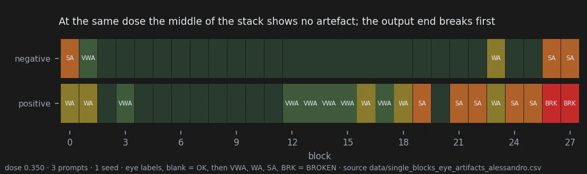
The output end is the most sensitive: pushed positive, blocks 19, 21, 22, 24 and 25 show strong artefacts at 0.350 and blocks 26 and 27 destroy the picture; their negative side is safer. This matches a pre-registered result of the exploratory notebook — the cost of a push grows toward the output, and the tail is rectified: positive pushes wreck it, negative ones barely move it. The middle, from block 4 to 11, shows no artefact at this dose in either direction. These labels became the starting doses of the later benches: up to 0.45–0.55 in the middle, 0.05–0.15 on the positive side of blocks 26 and 27.
Two kinds of limit show up, and the labels above see only the first:
- a hard limit — artefacts anyone recognises: grain, noise, a mosaic of colour cells, a broken frame. It arrives first at the output end;
- a soft limit — a picture that stays clean and well rendered but whose drawing has stopped making sense: faces flattened into masks, anatomy undone, objects fused or deformed. It is the limit of the middle blocks, and the harder one to see, because nothing in the picture looks like an error. Page 26 shows one example on a macro-block (faces turned into masks at 0.350).
The soft limit is my observation, not a measurement; no statistic in this project detects it, and page 26 shows how statistics can read such a picture as an improvement.
A starting guide: what each block seems to do
Read this as a map drawn by hand, not a measurement. I wrote it while looking at the v4 bench — four crowns and one comic page at seed 1234567 — on a page that also showed the 18 prompts of the styles and v3 benches. Each entry is the change I found most evident; Style-band blocks do many other things. It is provisional and meant to be expanded and corrected. Its use is practical: where to start, roughly where "style" begins, and what to expect from each block in each direction.
The same guide in pictures, on two of the v4 prompts: each pair is the block pushed negative and positive, at the doses below.
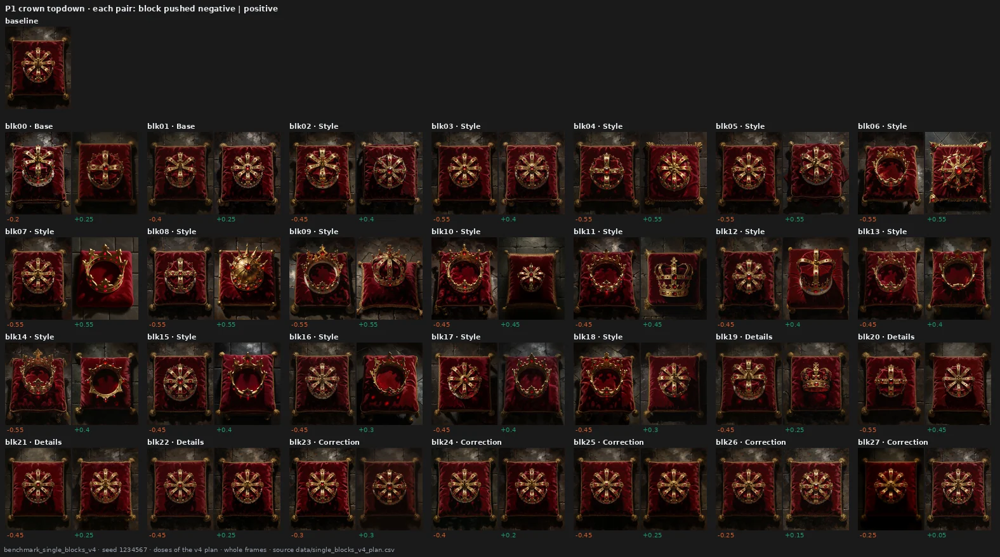
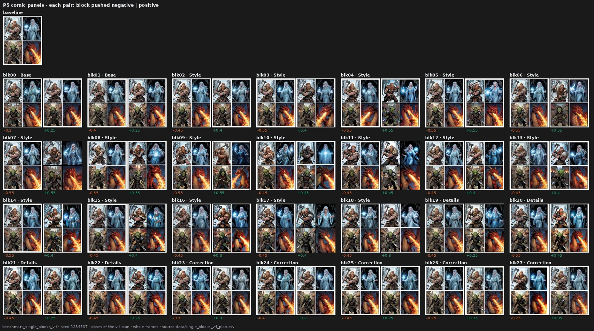
Doses are those of the v4 bench (data/block_colour_layout.csv, rows v4); they are where
these effects were seen, not safe defaults, and page 23 shows that doses chosen on single images
can be too strong for a preset.
| block | dose − / + | negative | positive |
|---|---|---|---|
| Base | |||
| 00 | −0.20 / +0.25 | more grain, detail, colour variety, colour confetti | soft and hazy: less grain, detail and colour variety |
| 01 | −0.40 / +0.25 | softer colours, subtle textures | patchy colour, flat tints, more grain and detail (the opposite of 00) |
| Style | |||
| 02 | −0.45 / +0.40 | fine textures and micro-detail; less camera control | flat fills, toward close-up, more camera control, colour blocks |
| 03 | −0.55 / +0.40 | less natural, less three-dimensional light | natural, three-dimensional light (changes a lot with the prompt) |
| 04 | −0.55 / +0.55 | fine-grained detail, less abstraction | coarse, merged detail; simplification and abstraction |
| 05 | −0.55 / +0.55 | darker, dirtier, messier | brighter, cleaner |
| 06 | −0.55 / +0.55 | more volume, more organic; fewer colours, less stylisation | more colour, more stylised and artificial; less volume |
| 07 | −0.55 / +0.55 | elements blend less (less concept bleeding), fewer deformations | elements blend more (more concept bleeding), more deformations |
| 08 | −0.55 / +0.55 | more expression and natural poses; less texture realism, less flattening | more texture realism, deformation and flattening; less expression |
| 09 | −0.55 / +0.55 | less realism of volumes and materials | more realism of volumes and materials |
| 10 | −0.45 / +0.45 | more expression (varies with the prompt) | less expression |
| 11 | −0.45 / +0.45 | more camera control, style emphasised; less deformation | more deformation and abstraction; camera control and style lost |
| 12 | −0.45 / +0.40 | more camera control, perspective, imperfections; less deformation | more deformation; less camera control, perspective, imperfections |
| 13 | −0.45 / +0.40 | organic | geometric |
| 14 | −0.55 / +0.40 | details more distinct; less colour contrast, less texture depth | more colour contrast and texture depth; details less distinct |
| 15 | −0.45 / +0.40 | more depth (light, shadow, reflections, translucency), more realistic detail | less depth (simplified, flattened subjects), less realistic detail |
| 16 | −0.45 / +0.30 | more complex textures, more detail, less abstraction | muffled textures, fewer details, more abstraction |
| 17 | −0.45 / +0.40 | less synthesis: less stylised, closer to the prompt | more synthesis: simpler, further from the prompt |
| 18 | −0.45 / +0.30 | more depth and volume | less depth and volume |
| Details | |||
| 19 | −0.45 / +0.25 | subjects shaped by form, more complex detail | subjects shaped by light, less complex detail |
| 20 | −0.55 / +0.45 | parts of the subject blend together | parts of the subject separate, more distinct in colour |
| 21 | −0.45 / +0.25 | finer grain of detail and imperfection | coarser, accentuated grain of detail and imperfection |
| 22 | −0.45 / +0.25 | sharpens and flattens textures | blurs and softens textures (borders on Correction) |
| Correction | |||
| 23 | −0.30 / +0.30 | more saturation | less saturation (page 22) |
| 24 | −0.40 / +0.20 | more colour contrast (flatter, more distinct colours), harsher textures | less colour contrast (softer, more complex colours), gentler textures |
| 25 | −0.45 / +0.25 | less colour blur | more colour blur (damaging in both directions on other benches) |
| 26 | −0.25 / +0.15 | fewer fine textures | more fine texture, adds grain |
| 27 | −0.25 / +0.05 | blurs and darkens | adds grain and lightens, like an aggressive sharpen filter |
Where a measurement touches an entry (docs/block_groups_and_prompt_order.md §4, on the
prompt-order images): the statistics agree on 00, 22, 23 and 27; on 01 "opposite of 00" holds for
grain and detail but not for the whole effect; on 26 the spectral statistic says the opposite, and
a 1:1 crop sides with the description — what reads as grain is a mosaic of colour cells. On page
23, blk09 + raised realism by eye on every family, as the guide says; blk17 + read on photographs
as "focus on the subject", which the guide does not anticipate. The other Style-band entries have
not been measured.
Reproducing this
model:
checkpoint: krea2_turbo_bf16.safetensors
weight_dtype: default
sha256: not recorded — the file is outside the repository
sampling:
sampler: euler_ancestral
steps: 9
cfg: 1.0
denoise: 1.0
scheduler: simple
resolution: 1024x1280
vae: qwen_image_vae.safetensors
text_encoder: qwen3vl_4b_bf16.safetensors (CLIPLoader type krea2)
tuner:
node: ArthemyKrea2ModelTuner, after ArthemyKrea2ResetPatcher (and ArthemyResidualProbe on the 23 baselines of C48)
version: not recorded — the tuner is a separate repository
mode: Real Value, driven by a 34-slot vectors_override (one block at a time)
prompts:
measured_on: data/block_colour_layout.csv (12 styles prompts, 6 v3 prompts, 5 v4 prompts)
files: [data/single_blocks_styles_plan.csv, data/single_blocks_v3_plan.csv, data/single_blocks_v4_plan.csv]
seeds: [2718281, 3141592, 1618033, 1234567]
conditions:
- name: single block, negative dose, each of 28 blocks
dose: calibrated by eye per block and per bench
measured_D: not measured; the dose is a per-block gain, not a calibrated displacement
- name: single block, positive dose, each of 28 blocks
dose: calibrated by eye per block and per bench
measured_D: not measured
- name: C48 residual-stream probe on the 23 unedited baselines
dose: 0.000
measured_D: 0.000
outputs:
folders: [benchmark_single_blocks_styles, benchmark_single_blocks_v3, benchmark_single_blocks_v4, benchmark_single_blocks_atlas, benchmark_residual_probe]
manifest: no single committed manifest for all three benches; data/block_colour_layout.csv lists every measured image
analysis:
scripts:
- experiments/block_colour_layout.py # 9b9aea19f1d6f43920cf0cc832d4be23063815d3290723cc4dd7e3bc27147de1
- experiments/block_effect_overlap.py # 29853a9f70e6f86987c119d0f74112517cf56e92a3754cb6cf212ca32c4ae188
- experiments/block_weight_structure.py # 1df6cc4b4cedf27e99efba52f19cf7318b7a5572f228e53abcd17e900e405645
- experiments/block_change_breadth.py # 564ed1578c1c6db997e489241d3cb1991f7ef5859de50c153e15b218bec575b1
- experiments/analyze_residual_probe.py
produces: data/block_colour_layout.csv, data/block_effect_overlap_mean.csv, data/block_weight_structure.csv, data/block_weight_structure_test.csv, data/block_change_breadth.csv, data/residual_probe_raw.csv, data/residual_probe_blocks.csv, data/residual_probe_test.csv
Provenance
- Renders. benchmark_single_blocks_styles (684), benchmark_single_blocks_v3 (396), benchmark_single_blocks_v4 (332), benchmark_single_blocks_atlas (171), benchmark_residual_probe (23).
- Pre-registrations:
docs/prereg_block_weight_structure.md(weights, C46) anddocs/prereg_residual_probe.md(residual-stream writes, C48), both committed before their measurements were read. - Result documents:
docs/block_groups_and_prompt_order.md,docs/single_blocks_exploration_synthesis.md,docs/block_weight_structure_result.md,docs/residual_probe_result.md. - Observations:
data/single_blocks_v4_definitions_alessandro.md(the original, in Italian, of the guide to each block). - Probes:
tools/comfy_residual_probe(ArthemyResidualProbe, read-only forward hooks on the 28SingleStreamBlocks, checked pixel-identical on all 23 renders).
Holds128 renders · 8 prompts · 4 seeds · pre-registered · 2026-10-04
One block that turns saturation up and down
The direction I'm chasing. If the weights hold knobs, one of them should do one thing everywhere. Block 23 looked like a saturation control on every bench where I pushed it, and I wanted to know whether it could replace the words people type to get colour.
What would kill it. Colour moving the wrong way, or not growing with the dose, on more than two of sixteen prompt-seed pairs — or the words "colorful" disturbing the picture less than the block at the same colour gain.
Where we are. The knob is real and gentle. It moves colour the right way almost everywhere and touches the rest of the picture less than the words do, but on half the prompts the words simply reach further.
In two minutes
Krea-2 has 28 transformer blocks. Multiplying the weights of block 23 by a little more than one lowers the saturation of the picture; by a little less than one, raises it. I rendered eight prompts — a cartoon elf, an oil-painted elf, a sepia photograph, a rally car, a fox, a still life, an archer, a selfie — at two seeds each, along a ladder of five doses, and next to the same prompts with "colorful, vivid highly saturated colors" or "muted colors, desaturated, low saturation" added to the text.
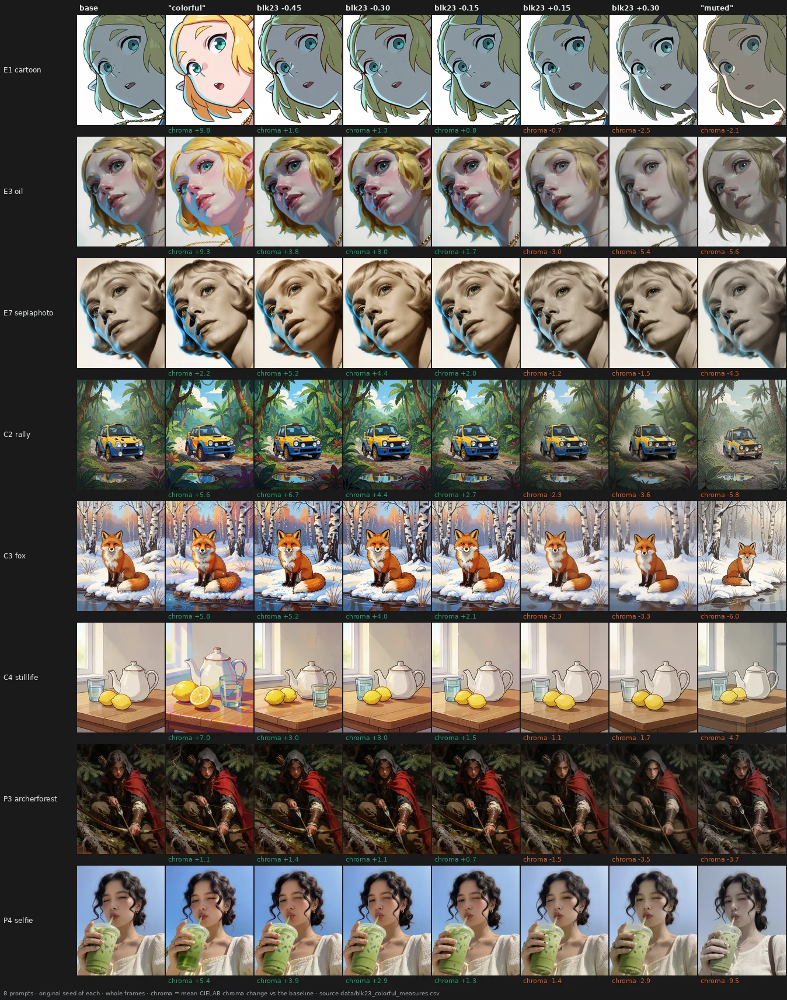
Read the sheet by columns. Along the ladder the picture stays the same picture and only its colour moves. The second column is what the words do: the cartoon elf turns blonde and is redrawn, the still life gains a cut lemon and a pink table. The words do more — more colour and more of everything else.
The verdict
Block 23 is a saturation knob: monotone on 15 of 16 cells and roughly proportional to the dose. At the same colour gain it disturbs the picture less than the words, on every standard metric tried. It is a gentle knob — on 9 of 16 cells the words reach more colour than the block at its strongest tested dose — and its desaturating side is weaker and less clean than its saturating one. Against a saturation slider applied afterwards it is not the cleaner tool: it also regenerates the picture.
Why I might be wrong
- One observer, not blind. The eye pass is mine, and I knew which column was which. All 128 images are published so anyone can look.
- The matched comparison rests on 7 cells. The pre-registration set no minimum number of scorable cells. Nine cells could not be compared because the words went beyond the ladder.
- Measures of "the rest of the picture" are imperfect. Layout r sees small shifts the eye does not call a change of content; LPIPS and DINOv2 agree with it here, but all three are coarse.
- One wording per direction. Other phrasings, or the words at the start of the prompt, may behave differently.
- A saturation slider is the cleaner tool for colour alone. Against a slider applied afterwards (C53) the block regenerates the picture and changes its contrast; its case rests on whether the result looks more natural, which one observer so far found only when adding colour.
- The desaturating side has side effects I marked by eye on 8 of 16 cells: softening, and on the selfie a skin that turns greenish.
The data
How it was measured
Each image is compared with the baseline of the same prompt and seed in CIELAB at 64×80: mean chroma change, and layout r, the correlation of the lightness channel with the baseline. The words are matched to the ladder by linear interpolation of chroma between rungs; layout r, LPIPS and DINOv2 cosine are interpolated at the same point.
Direction and proportion
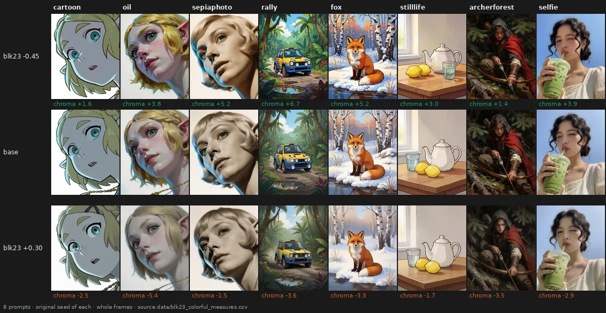
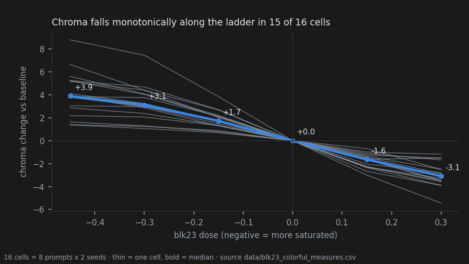
| test | registered threshold | result |
|---|---|---|
| chroma falls strictly along the ladder | ≥ 14 of 16 | 15 of 16 |
| gain at -0.30 over gain at -0.15, median | 1.6 – 2.4 | 1.76 |
The one exception is the sepia photograph at seed 4669201, where +0.15 and +0.30 remove almost
the same colour (−1.62, −1.51). Before this bench, every render with a blk23 arm in the
repository — 83 images across five benches — already moved chroma the expected way
(data/blk23_saturation_all.csv).
Against the words
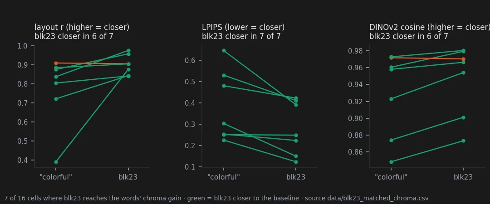
| median over 16 cells | layout r | |
|---|---|---|
| "colorful" | chroma +5.7 | 0.80 |
| blk23 −0.45 | chroma +3.9 | 0.87 |
In 9 of 16 cells the words add more colour than blk23 at −0.45; on the cartoon elf +9.8 against
+1.6. On the sepia photograph it runs the other way: blk23 +5.2, the words +2.2. My eye, asked
which of the two changed the content more with colour ignored, said the words in 9 of 16 cells,
blk23 in 2, equal in 5 (data/blk23_colorful_eye_alessandro.csv, deposited before the numbers).
No measured quality cost: BRISQUE moves by +0.9 for blk23 −0.45 and −0.95 for the words;
CLIP-IQA by at most 0.02 (data/standard_metrics_summary.csv).
Against a slider in post-production
A reader asked for the comparison that matters in practice: not the words, but the baseline with
its saturation raised or lowered afterwards. No new render was needed. Each baseline was passed
through an ordinary saturation slider, with the strength chosen so that its colour change equals
that of the blk23 image it is compared with (C53, docs/prereg_blk23_vs_postproc.md).
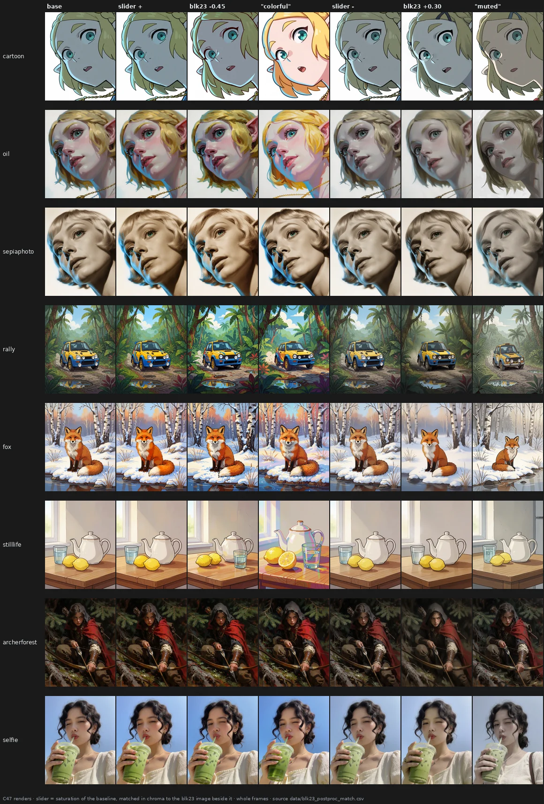
What was expected, and written down before measuring, holds: the slider leaves the layout of the picture untouched (layout r 1.00) and the block does not (0.87 adding colour, 0.85 removing it), in 16 of 16 cells. Block 23 is not a cleaner way to change saturation than a slider: it changes colour and regenerates the picture, raising lightness contrast when it adds colour (+0.9 in the standard deviation of L) and lowering it when it removes colour (−0.6). That is the softening my eye had marked on the desaturating side.
Which looks more natural is the question a slider cannot answer for itself. In a blind forced choice of 64 sheets — each pair twice with the sides swapped — I answered without knowing which side was which, though I had seen these renders before:
| original | mirrored | rule (≥ 12 of 16 on both) | |
|---|---|---|---|
| adding colour: blk23 −0.45 more natural | 12/16 | 11/16 | not met — no difference shown |
| removing colour: blk23 +0.30 more natural | 1/16 | 4/16 | the slider looks more natural |
The position check passed (the same side on both versions in 4 of 32 pairs). But the comparison
cannot isolate colour: block 23 regenerates the picture, and sometimes repairs a shape the baseline
left half-formed — the archer's hood, torn between the hood and the long hair of the prompt. I
recognised the blk23 images and was drawn to them for that repair, even where the baseline's
colours looked better to me. This is the
diagnostic observer; the primary one, who has not seen the project, has not answered yet. LPIPS
and DINOv2 for this comparison are pending. Data: data/blk23_postproc_match.csv,
data/blk23_postproc_measures.csv, data/blk23_postproc_blind_tests_alessandro.csv; details in
docs/blk23_postproc_result.md.
A curiosity: the hood that almost any edit completes
In the comparison with the slider I found myself drawn to some blk23 images for a reason that had nothing to do with colour: on the archer at seed 3141592 the baseline draws the hood only halfway — a grey fragment on one side, hair on the other. The prompt asks for "a dark grey hood obscuring some of her hair" and "brown hair", and the model finishes neither: a watershed, a point where the picture is balanced between two requests. Block 23 completed the hood. So I labelled, blind to the condition, all 78 renders of this prompt that already existed (C54, exploratory; my labels agreed with themselves on 12 of 12 repeats, and with Claude's independent labels on 74 of 78).
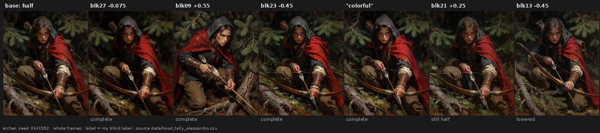
Block 23 is not special here. Of 69 edits of that seed, 58 complete the hood — blocks from 00 to 27, both signs, a dose as small as blk27 −0.075, and the words "colorful". Six leave it half-formed, four lower it, one is unclear. The expectation I wrote down first, that the middle blocks would change it more often than the end blocks, did not hold (21 of 23 against 17 of 22). At seed 4669201, where the baseline hood is whole, none of the seven edits broke it.
How small can the push be? The smallest change the weights of a block can take — one rounding step on every weight of block 27, in either direction (C55, page 20) — redraws 87% of the pixels slightly and leaves the hood half-formed. A dose ladder on four blocks, one per band (C56, 40 renders, labelled blind, 7 of 8 repeats consistent), finds a threshold, and a step: below it the hood stays half-formed, above it it never comes back.
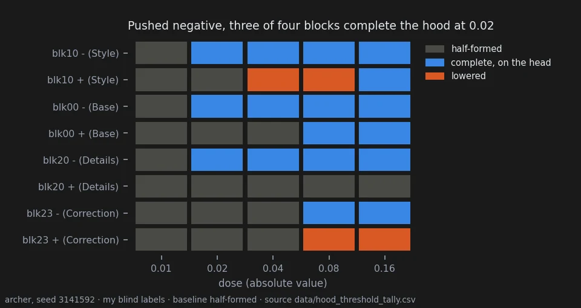
Nothing moves at 0.01. Pushed negative, three of the four blocks complete the hood at 0.02; block 23, the one that changes content least, needs 0.08. Pushed positive, the thresholds are higher and the hood is as likely to be lowered as completed. Across the eight block-and-sign pairs the threshold falls as the block's content change at equal dose rises (Spearman −0.60), as I expected; but the direction of the push matters more than the block. One seed, one ridge.
How common is the ridge itself? Thirty more baselines of this prompt, at thirty new seeds, produced no half-formed hood at all (C57): over the 32 seeds now rendered it appears once, so the state is rare, and the ladder above stands on a single case. The four predictions I had written for a second seed were never tested.
The half-formed hood is an unstable state of one seed, and any displacement of the weights, however
small, sends the sampler (euler_ancestral, which adds noise at every step) down a slightly different
path that lands on one side of the ridge. Two things follow. Every edit in this report carries this
re-draw of the unstable details along with its intended effect, which is part of what a slider on the
finished image does not do. And a claim that an edit fixes a detail, made on one seed, needs other
edits of the same seed as its control. Data: data/hood_tally_alessandro.csv, data/hood_threshold_tally.csv,
data/hood_scout_seeds.csv; details in docs/hood_watershed_result.md,
docs/hood_threshold_result.md, docs/hood_second_ridge_result.md.
The controls
Every image of the 26 conditions that already existed on older benches at the original seed
was re-rendered and came out pixel-identical (docs/RENDERS_2026-10-04_blk23_colorful.md).
Reproducing this
model:
checkpoint: krea2_turbo_bf16.safetensors
weight_dtype: default
sha256: not recorded — the file is outside the repository
sampling:
sampler: euler_ancestral
steps: 9
cfg: 1.0
denoise: 1.0
scheduler: simple
resolution: 1024x1280
vae: qwen_image_vae.safetensors
text_encoder: qwen3vl_4b_bf16.safetensors (CLIPLoader type krea2)
tuner:
node: ArthemyKrea2ModelTuner, after ArthemyKrea2ResetPatcher
version: not recorded — the tuner is a separate repository
mode: Real Value, driven by a 34-slot vectors_override (slot 23 = signed dose)
prompts:
file: data/blk23_colorful_plan.csv
ids: [E1_cartoon, E3_oil, E7_sepiaphoto, C2_rally, C3_fox, C4_stilllife, P3_archerforest, P4_selfie]
seeds: [2718281, 3141592, 1618033, 4669201]
conditions:
- name: b23_m0.450
dose: -0.450
measured_D: not measured; the dose is a per-block gain, not a calibrated displacement
- name: b23_m0.300
dose: -0.300
measured_D: not measured
- name: b23_m0.150
dose: -0.150
measured_D: not measured
- name: b23_p0.150
dose: +0.150
measured_D: not measured
- name: b23_p0.300
dose: +0.300
measured_D: not measured
- name: txtpos
dose: 0
measured_D: 0 (prompt + ", colorful, vivid highly saturated colors")
- name: txtneg
dose: 0
measured_D: 0 (prompt + ", muted colors, desaturated, low saturation")
outputs:
folder: benchmark_blk23_colorful
manifest: data/blk23_colorful_plan.csv
analysis:
script: experiments/analyze_blk23_vs_colorful.py
sha256: 3ac2b673851d036e18658833016c32a774cc90ba6754753ce89c62fc9897d311
produces: data/blk23_colorful_measures.csv, data/blk23_colorful_test.csv
related: experiments/analyze_standard_metrics.py, data/blk23_matched_chroma.csv
Provenance
- Renders. benchmark_blk23_colorful (128).
- Pre-registration:
docs/prereg_blk23_vs_colorful.md, with amendment 1 (eye page also for the desaturating side). Committed with its scoring code in 76e8180, before any render. - Result documents:
docs/blk23_vs_colorful_result.md,docs/standard_metrics_result.md. - Data:
data/blk23_colorful_measures.csv,data/blk23_colorful_test.csv,data/blk23_matched_chroma.csv,data/blk23_colorful_eye_alessandro.csv,data/blk23_saturation_all.csv,data/standard_metrics_c47.csv. - Exploratory history: the knob was first noticed on the single-block benches
(
docs/single_blocks_exploration_synthesis.md§5).
Holds433 renders · 18 prompts · 2 seeds · pre-registered · 2026-10-05
One preset for a whole family of prompts
The direction I'm chasing. If I settle on a way of writing prompts — "Cartoon style illustration." followed by whatever I need — can one preset give everything I write that way a common look, whatever the subject? That is what a knob would be good for in practice.
What would kill it. A preset whose change is no more alike across the subjects of one family than across different families, or too weak to be of use.
Where we are. For late blocks it works: strongly on cartoon, less on oil, weakly on photographs. Middle blocks do something more interesting that no measure here can see, and they can change who is in the picture. The doses I calibrated on single images are too strong for a preset.
In two minutes
Three families — "Cartoon style illustration.", "Oil painting.", "Photograph." — each followed by the same six subjects: a blacksmith, a rally car, a fox, a still life, a fisherman, a lighthouse. Two seeds each. Eleven edits: five late blocks at my calibrated doses, a combined preset of four of them at lower doses, block 9 as a pre-declared control, and four middle blocks added at my request before any render.
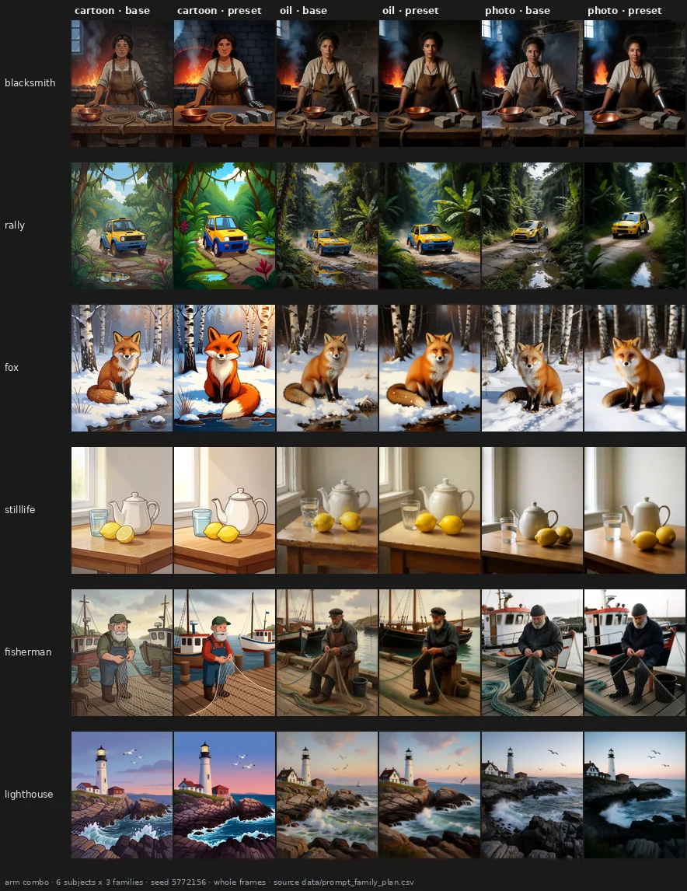
Read the cartoon columns first: six different subjects and one recognisable change — flatter fills, brighter colour, cleaner outlines. In the oil and photo columns the same preset does something milder, and different from what it does to cartoons.
The verdict
Late-block presets are coherent inside a family: on all six tested arms the change is more alike across the subjects of one family than across families, and inside a family it keeps about 70% of the agreement it has across two seeds of one prompt. Coherence is strongest on cartoon and weakest on photographs. Middle blocks give a common change that I see and no measure here records, and block 9 can change a subject's identity. At these doses the late blocks cost visible noise; "clean it up afterwards" was not tested.
Why I might be wrong
- "Coherent" means the same direction of change, measured on 23 style statistics. Not identical results, and not a measure of how good the look is.
- Three families, six subjects, two seeds. Other styles, especially other photographic ones, may behave differently.
- The by-family split was computed after the test. The ranking cartoon > oil > photo is descriptive.
- The eye pass is mine and not blind (page 20). It was deposited before the numbers, and all images are published.
- The combo is one example, not an optimised preset.
The data
Coherence inside a family
For each arm, each image's change from its own baseline is a vector of 23 standardised style features. W is the mean cosine between the changes of different subjects in the same family; B between prompts of different families; S between the two seeds of one prompt (the ceiling).
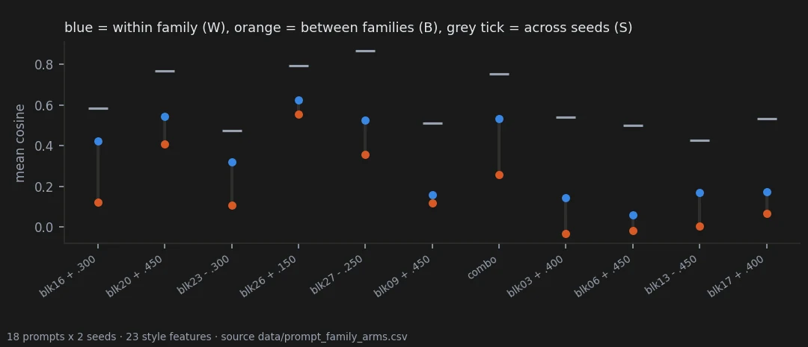
| rule | threshold | result | verdict |
|---|---|---|---|
| H1 the family matters | W > B on ≥ 5 of 6, median W − B ≥ 0.10 | 6 of 6, +0.19 | supported |
| H2 coherence is usable | median W ≥ 0.40 | 0.53 | supported |
| H3 blk09 + below the tested median | W < 0.53 | 0.16 | supported |
| H4 the Style band is less coherent | median W < 0.53 − 0.10 | 0.16 | supported |
The combo: W 0.53, B 0.26, S 0.75 (data/prompt_family_test.csv, data/prompt_family_arms.csv).
Family by family
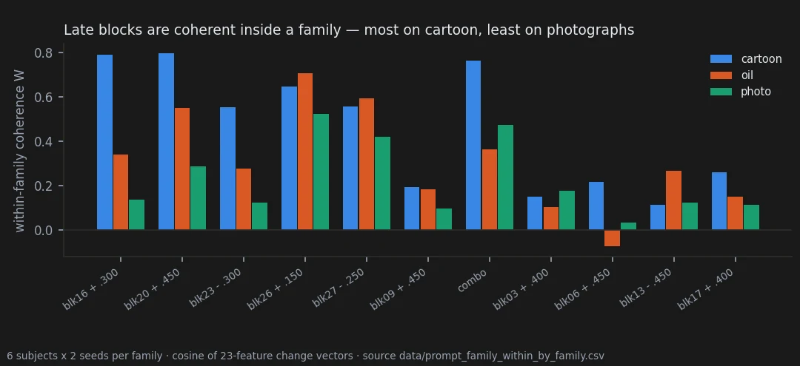
| arm | cartoon | oil | photo | eye: common look? (cartoon / oil / photo) |
|---|---|---|---|---|
| blk16 +0.30 | 0.79 | 0.34 | 0.14 | yes / yes / partly |
| blk20 +0.45 | 0.80 | 0.55 | 0.29 | yes / yes / no |
| blk23 −0.30 | 0.55 | 0.28 | 0.12 | yes / yes / no |
| blk26 +0.15 | 0.65 | 0.71 | 0.53 | yes / yes / yes |
| blk27 −0.25 | 0.56 | 0.59 | 0.42 | yes / yes / yes |
| combo | 0.76 | 0.36 | 0.48 | yes / yes / yes |
Where I saw no common look, the numbers are among the lowest. This agrees with what the exploratory benches kept suggesting: photographic style is the hardest to steer.
The middle blocks: the eye against the numbers
The four Style-band arms and the blk09 control sit at W 0.06–0.17, barely above B. My eye pass said the opposite in most cells: a common, recognisable change in 8 of 12 Style-band cells and in 2 of 3 blk09 cells. What I wrote down is a change of content: blk09 + "raises realism coherently in all", and on photographs it "idealises instead of making more realistic"; blk17 + reads as "focus on the subject". In the sheet below (seed 5772156) the cartoon rally car becomes a three-dimensional render.
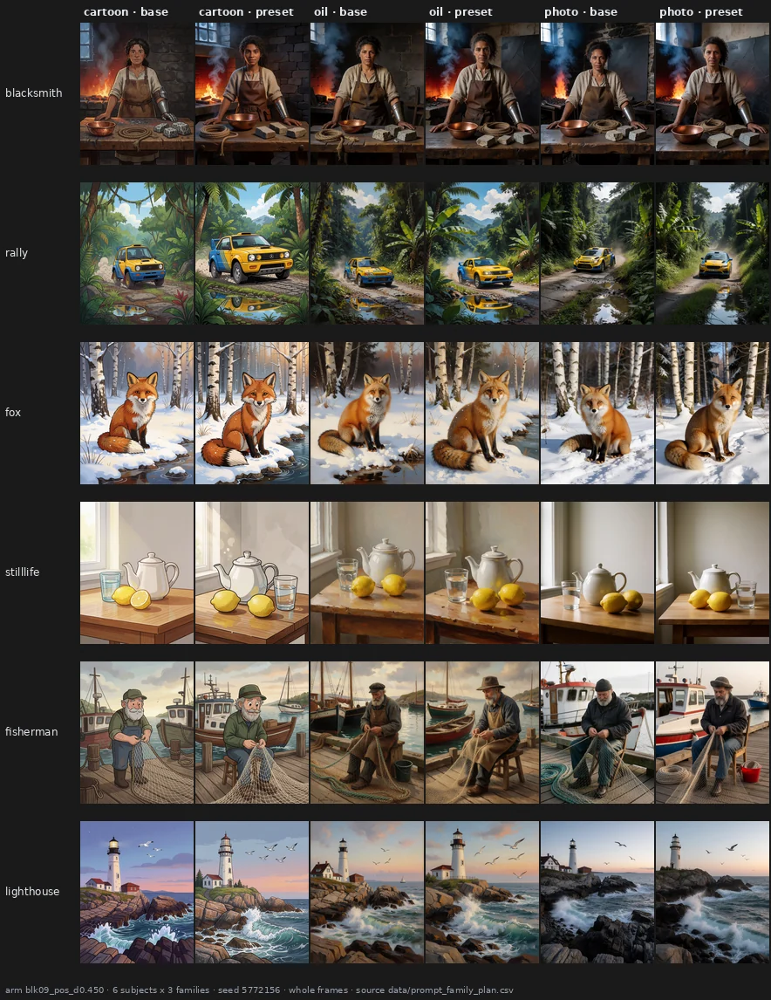
The 23 style features measure how a picture is rendered — texture, edges, colour. H3 and H4 are supported as statements about rendering statistics; they do not show that middle blocks lack a family-coherent effect, only that their effect is not a rendering effect. The obvious candidate for a content measure, DINOv2, was tried with a pre-registered threshold and failed (page 25): "more realistic" points in a different direction for a fox and for a car in a content embedding. The middle blocks' coherence remains an observation by eye.
A change of identity
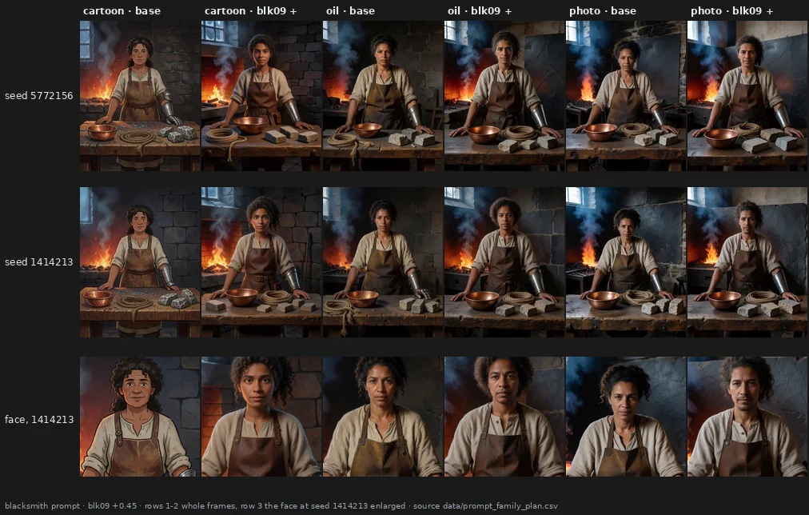
At seed 1414213 blk09 + turns the female blacksmith into a man in the oil and photo families;
at seed 5772156 — the seed of the sheet above — she stays a woman in all three. In the cartoon
family the same edit turns the drawing into a three-dimensional render and keeps the woman. The edit moves
the picture toward the more common reading of the words: "blacksmith" toward a man. CLIPScore on
the six blacksmith prompts falls by 3.8 under blk09 +, the largest drop of any arm
(data/standard_metrics_summary.csv). One subject, two seeds: this is an observation with a
number that agrees, not a test.
The cost
By eye, blk26 +0.15 and blk27 −0.25 are not acceptable in any family — a uniform patina of noise — and the combo is acceptable only in part in two families. BRISQUE agrees on blk27 and the combo (+9.6) and does not see blk26 (+0.4, page 25). The doses I had calibrated on single images are too strong for a preset applied across a family. Whether a clean-up pass can remove the cost without removing the look is untested.
Against an earlier overturned result
Notebook page 09 tested, with criteria frozen in advance, whether the direction a weight edit imprints depends on the declared style more than on the subject, and it was overturned: at the usable dose 6 of 12 cells carried the opposite sign. This page finds that, for single late blocks, the change is more alike within a style than across styles. The two are not the same experiment — a calibrated whole-stack preset and block derangements there, single late blocks here; eight styles sharing one scene there, three styles crossed with six subjects here — and this page does not claim to reconcile them. A reader should keep both.
An open question: middle blocks for a series of assets
Middle blocks are the ones I find most valuable: they change the picture more deeply than a retouch could, which is what a series of assets with a fixed prompt structure and style would want. What the data say so far: a deeper change at no measured quality cost (page 25); a common change inside a family, seen by eye only; but the least predictable blocks, able to change a subject's identity — a risk for a series whose characters must stay the same. The test that would decide it (C51, not run): fixed characters across poses and scenes in one style, with a middle-block preset on and off; does the identity hold?
Reproducing this
model:
checkpoint: krea2_turbo_bf16.safetensors
weight_dtype: default
sha256: not recorded — the file is outside the repository
sampling:
sampler: euler_ancestral
steps: 9
cfg: 1.0
denoise: 1.0
scheduler: simple
resolution: 1024x1280
vae: qwen_image_vae.safetensors
text_encoder: qwen3vl_4b_bf16.safetensors (CLIPLoader type krea2)
tuner:
node: ArthemyKrea2ModelTuner, after ArthemyKrea2ResetPatcher
version: not recorded — the tuner is a separate repository
mode: Real Value, driven by a 34-slot vectors_override
prompts:
file: data/prompt_family_plan.csv
families: [F1cartoon, F2oil, F3photo]
subjects: [blacksmith, rally, fox, stilllife, fisherman, lighthouse]
seeds: [5772156, 1414213]
conditions:
- name: blk16_pos_d0.300
measured_D: not measured; the dose is a per-block gain, not a calibrated displacement
- name: blk20_pos_d0.450
measured_D: not measured
- name: blk23_neg_d0.300
measured_D: not measured
- name: blk26_pos_d0.150
measured_D: not measured
- name: blk27_neg_d0.250
measured_D: not measured
- name: combo
dose: blk16 +0.20, blk20 +0.30, blk23 -0.20, blk27 -0.10
measured_D: not measured
- name: blk09_pos_d0.450
measured_D: not measured
- name: blk03_pos_d0.400
measured_D: not measured
- name: blk06_pos_d0.450
measured_D: not measured
- name: blk13_neg_d0.450
measured_D: not measured
- name: blk17_pos_d0.400
measured_D: not measured
outputs:
folder: benchmark_prompt_family
manifest: data/prompt_family_plan.csv
analysis:
script: experiments/analyze_prompt_family.py
sha256: 8518e7c0a5b7014496999bfc89f285f55bb92c23a84e9dd2db73896c9419330b
produces: data/prompt_family_style_features.csv, data/prompt_family_arms.csv, data/prompt_family_test.csv, data/prompt_family_within_by_family.csv
Provenance
- Renders. benchmark_prompt_family (433).
- Pre-registration:
docs/prereg_prompt_family.md, with amendment 1 (four Style-band arms and H4), both before any render. - Result documents:
docs/prompt_family_result.md,docs/standard_metrics_result.md. - Eye pass:
data/prompt_family_eye_alessandro.csv, deposited before the scoring ran. - Exploratory basis:
docs/style_vs_subject_exploration.md.
Ambiguous971 renders · 13 prompts · 2 seeds · pre-registered · 2026-10-05
Does the way a prompt is written change what a block does?
The direction I'm chasing. A knob is useful only if it does the same thing however I happen to write the prompt. My claim: moving the weights gives similar results when the prompt describes the same content; the structure of the text matters less than the content.
What would kill it. A block whose change depends on the wording as much as on the subject, or more than on the seed.
Where we are. The first half holds by eye and by the numbers: rewriting matters about as much as the seed and far less than the subject. The registered verdict is still inconclusive, because a small change of content disturbed a block's effect even less than rewriting did — the opposite of what the design assumed.
In two minutes
Two subjects — an elf brawler in a comic style, a woman asleep in a canoe on a lotus pond — each written four ways with the same facts (original, reordered, a pure tag list, prose with synonyms), plus one version with a single object changed (the elf's gauntlet; the sleeper turned into an old bearded man). Twelve blocks in both directions, two seeds.
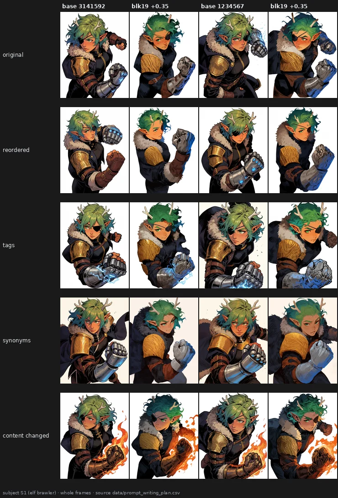
The baselines differ from row to row: each writing gives a different pose and framing. The edit does not: under every writing and after the gauntlet change, blk19 + turns the gold pauldron into a straw-like fur, and the antlers shrink or disappear in most frames.
The verdict
By eye the claim holds on every arm: same change across the four writings and after the content change. By the numbers, writing behaves like the seed and the subject dominates. The registered verdict is inconclusive, not supported, because its third condition failed on all twelve arms: changing one object in the prompt disturbed a block's effect less than rewriting it. Stated plainly: the text's structure matters about as much as the seed, less than the subject, and more than a one-object change of content.
Why I might be wrong
- Two subjects, one seed pair. On the canoe the arms are about half as strong as on the elf, and only 12 of 24 arms are larger than what rewriting alone does to the baseline.
- The style features are partly sensitive to layout. How close two edits look depends partly on how close the two pictures were to start with; the one-object change kept the layout best, which favours it. This does not explain the subject result.
- The canoe content change kept two words of the original. The "old bearded man" prompt still reads "one arm bends above her head … across her torso", a leftover of the edit.
- The eye pass is mine and not blind (page 20).
The data
How it was measured
Each image is reduced to 23 style features; an arm's effect on a prompt is its vector of feature changes from the same prompt's baseline. A is the mean cosine between two such vectors: A_writing across writings of the same subject, A_seed across seeds, A_content_small between the original and the one-object change, A_subject between the two subjects. Only arms whose change is larger than what rewriting does to the baseline (size > 1.15) are scored.
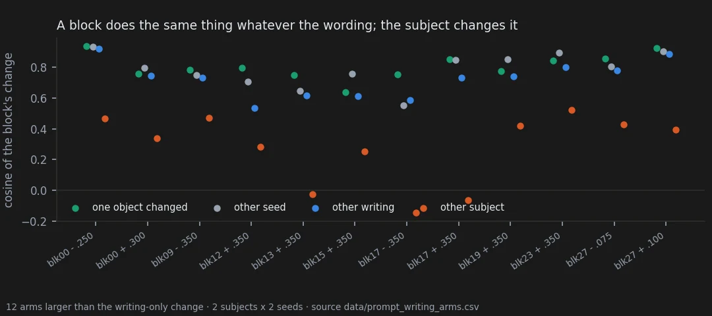
The registered rule
| condition | needed | result | |
|---|---|---|---|
| median (A_writing − A_seed) | ≥ −0.10 | −0.04 | met |
| A_writing > A_subject | ≥ 75% of arms | 12 of 12 | met |
| A_writing > A_content_small | ≥ 60% of arms | 0 of 12 | not met |
Scored arms: blk00 ±, blk09 −, blk12 +, blk13 +, blk15 +, blk17 ±, blk19 +, blk23 +, blk27 ±. On them A_writing runs 0.53–0.92 and A_subject −0.15 to 0.52: what the picture contains decides what a block does to it. A tag list against the original behaves like the other rewrites. The third condition failed because the one-object change kept the picture (layout r of its baseline with the original 0.68–0.76) while rewriting moved pose and framing (0.48–0.76). The design assumed the opposite ordering. The same ordering appears in DINOv2 space (page 25): A_content_small 0.29 > A_seed 0.22 > A_writing 0.16 ≫ A_subject 0.02.
Word order
Before C45, an exploratory bench rendered one prompt in five word orders, two seeds, 56 arms. By eye, blk19 + shrinks or removes the antlers and turns the pauldron to fur in 10 of 10 renders, blk26 + lays the same mosaic of colour cells over the frame in 10 of 10, and blk17 + slims the collar and simplifies the figure in 5 of 5 orders at one seed. With the same features: consistency across orders tracks consistency across seeds (r = 0.92 over 56 arms) and is on average 0.06 higher. Every arm with low consistency is among those whose change is smaller than the reordering itself. The order does change the picture — baselines differ by ΔE 16–31, as much as most edits — but it changes the frame, not the character, and not what a block does to it.
Reproducing this
model:
checkpoint: krea2_turbo_bf16.safetensors
weight_dtype: default
sha256: not recorded — the file is outside the repository
sampling:
sampler: euler_ancestral
steps: 9
cfg: 1.0
denoise: 1.0
scheduler: simple
resolution: 1024x1280
vae: qwen_image_vae.safetensors
text_encoder: qwen3vl_4b_bf16.safetensors (CLIPLoader type krea2)
tuner:
node: ArthemyKrea2ModelTuner, after ArthemyKrea2ResetPatcher
version: not recorded — the tuner is a separate repository
mode: Real Value, driven by a 34-slot vectors_override
prompts:
file: data/prompt_writing_plan.csv
ids: [S1_W3_tags, S1_W4_synonyms, S1_C1_flamegauntlet, S2_W1_original, S2_W2_reordered, S2_W3_tags, S2_W4_synonyms, S2_C1_oldman]
reused: S1_W1 and S1_W2 are V1_Original and V5_Inverse of benchmark_prompt_order
seeds: [3141592, 1234567]
conditions:
- name: blocks 00, 02, 05, 08, 09, 12, 13, 15, 17, 19, 23 at -0.35 and +0.35 (blk00 -0.25 / +0.30)
measured_D: not measured; the dose is a per-block gain, not a calibrated displacement
- name: blk27_neg_d0.075, blk27_pos_d0.100
measured_D: not measured
outputs:
folders: [benchmark_prompt_writing, benchmark_prompt_order]
manifest: data/prompt_writing_plan.csv
analysis:
scripts:
- experiments/analyze_prompt_writing.py # 4f7034db6a713f82c7135b64062586b4277db29afb4f53c6ee6eeb697dccc468
- experiments/prompt_order_feature_consistency.py # 3a62edb33adf9d6afd161e24a6e04eeeaa2cc667b40ba3ce6a4ed5803ec0f23e
produces: data/prompt_writing_arms.csv, data/prompt_writing_test.csv, data/prompt_order_feature_consistency.csv
Provenance
- Renders. benchmark_prompt_writing (401), benchmark_prompt_order (570).
- Pre-registration:
docs/prereg_prompt_writing.md, with amendment 1; scoring code committed before any render. - Result documents:
docs/prompt_writing_result.md,docs/block_groups_and_prompt_order.md§3 (word order, exploratory). - Eye pass:
data/prompt_writing_eye_alessandro.csv, deposited before the test ran. - Data:
data/prompt_writing_style_features.csv,data/prompt_writing_arms.csv,data/prompt_writing_test.csv,data/prompt_order_feature_consistency.csv,data/prompt_order_baselines.csv.
Overturned1619 renders · 46 prompts · 10 seeds · pre-registered · 2026-10-17
What the standard metrics see, and what they miss
The direction I'm chasing. The results on the other pages rest on my eye and on statistics written for this project. A reader will ask what the usual metrics say: image quality, prompt adherence, perceptual distance, content similarity, style descriptors, and visual question answering. I wanted them on the same images, decided before they were computed.
What would kill it. Standard metrics that contradict the published verdicts — or that fail to reproduce the eye's calls when calibrated directly against the visual notes.
Where we are. On the diffusion transformer (962 renders), they confirm the saturation knob against the words and put a price on each preset, but DINOv2 misses cross-prompt family coherence (
W = 0.007). On the text encoder (657 renders, C66), 3 of 7 calibration rules pass:VQAScore(clip-flant5-xl) catches lost character traits (pooled AUC = 0.885), and bothDINOv2-largeandCSD-ViT-Ltrack word-order dispersion (ρ = 0.898and0.844) and overall change magnitude (ρ = 0.661and0.654). All 4 rules that require separating style from content or measuring cross-character direction coherence fail (T1,T2,T4,T6).
In two minutes
No new renders: first, BRISQUE and CLIP-IQA (quality without a reference), CLIPScore (adherence to
the prompt), LPIPS, DISTS and SSIM (distance from the baseline), and DINOv2 cosine (same content as
the baseline) were computed on every image of the three confirmatory DiT benches (962 renders) —
wording, saturation, prompt family. Second, in C66 (docs/prereg_metric_validation.md), contrastively
trained style descriptors (CSD-ViT-L), DINOv2-large, zero-shot CLIP ViT-L/14 genre
classification, and VQAScore (clip-flant5-xl) were tested against the pre-existing visual reading
notes across 657 text-encoder renders (C64, C65, C72, C74, C75).
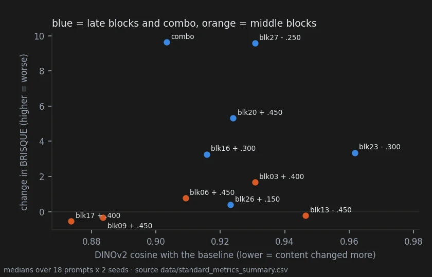
Read the figure as two corners. Bottom right: the middle blocks, which move the content most and leave BRISQUE where it was. Top left: the late blocks and the combined preset, which keep the content and raise BRISQUE.
The verdict
On the saturation knob the standard metrics agree with the published verdict: at the same colour
gain, block 23 stays closer to the original than the words "colorful" (LPIPS 7 of 7, DINOv2 6 of
7). On the prompt-family presets they put a price on each arm: the late blocks and the combo cost
up to +9.6 BRISQUE, the middle blocks nothing measurable, while changing the content most. Across
both the DiT and the text encoder, embedding cosine of difference vectors across different
subjects (H5 on DINOv2, T1 and T2 on CSD-ViT-L) fails to reproduce what the eye calls "moving
in the same stylistic direction." By contrast, within-character distance from baseline (T3
word-order dispersion, T5 change magnitude) and targeted visual question answering (T7
VQAScore for specific character traits, AUC = 0.885) pass their pre-registered thresholds and
are cleared for automated evaluation.
Why I might be wrong
- No-reference quality metrics miss what the eye calls noise. blk26 +0.15 was judged not acceptable in every family by eye and costs +0.4 BRISQUE. A low BRISQUE is not evidence of a clean picture.
- "No measured cost" is not "no cost". It means these two metrics did not move.
- The depth-against-cost reading is descriptive. It was pre-specified as a measurement, with no rule that could fail.
- CLIPScore on the saturation bench is not comparable across conditions. It was computed against each image's own prompt, which for the word conditions includes the added words — a defect of the plan, recorded and not interpreted.
- Difference-vector cosine confounds magnitude with cross-subject coherence. In
T1(ρ = -0.482), an edit that leaves all 7 characters in their original comic style produces small, noisy residual vectors (low pairwise cosine), whereas a destructive edit (L06,L12) pushes every image far from its baseline along a shared collapse component even when characters land in different visual genres.
The data
The saturation knob, again
| measure | blk23 closer to the original than "colorful" at the same chroma gain | median difference |
|---|---|---|
| LPIPS | 7 of 7 scorable cells | −0.10 |
| DINOv2 cosine | 6 of 7 | +0.019 |
| layout r (page 22, pre-registered) | 6 of 7 | +0.08 |
Quality: BRISQUE moves by −0.95 for "colorful", +0.87 for blk23 −0.45 and −3.7 for blk23 +0.30; CLIP-IQA by at most 0.02 anywhere. The full comparison is on page 22.
Depth against cost
| arm | ΔBRISQUE (higher = worse) | LPIPS to base | DINOv2 cosine to base | ΔCLIPScore, blacksmith |
|---|---|---|---|---|
| blk23 −0.30 | +3.4 | 0.27 | 0.96 | −0.9 |
| blk26 +0.15 | +0.4 | 0.38 | 0.92 | −0.2 |
| blk16 +0.30 | +3.3 | 0.45 | 0.92 | −1.2 |
| blk20 +0.45 | +5.3 | 0.46 | 0.92 | −1.9 |
| blk27 −0.25 | +9.6 | 0.46 | 0.93 | −2.2 |
| combo | +9.6 | 0.49 | 0.90 | −3.0 |
| blk13 −0.45 | −0.2 | 0.43 | 0.95 | −0.2 |
| blk03 +0.40 | +1.7 | 0.45 | 0.93 | −1.1 |
| blk06 +0.45 | +0.8 | 0.49 | 0.91 | −1.0 |
| blk17 +0.40 | −0.5 | 0.50 | 0.87 | −2.4 |
| blk09 +0.45 | −0.3 | 0.53 | 0.88 | −3.8 |
Medians over 36 images per arm (data/standard_metrics_summary.csv). Not every middle block goes
deep: blk13 − stays at 0.95, close to the late blocks. The two that do, blk09 + and blk17 +, are
also the two that lower adherence most on the blacksmith prompts — where blk09 + turned the woman
into a man at one of the two seeds (page 23).
A content embedding does not see it
H5 asked whether the middle blocks' common change, seen by eye inside each family, would show up as coherence of DINOv2-embedding changes. Median within-family coherence of the five middle arms: 0.007 against 0.159 on the style features and a threshold of 0.259. Refuted. In DINOv2 space no arm is family-coherent, late blocks included (all W ≤ 0.06): the same change, "more realistic", points one way for a fox and another way for a car in an embedding built around content.
Wording, in DINOv2 space
A_content_small 0.29 > A_seed 0.22 > A_writing 0.16 ≫ A_subject 0.02: the same ordering as the style features on page 24. The subject dominates; rewriting behaves like the seed.
Calibrating metrics on text-encoder edits
Before using any automatic metric to judge text-encoder experiments (page 30),
C66 (docs/prereg_metric_validation.md, docs/metric_validation_result.md) tested four candidate
backbones — CSD-ViT-L (contrastive style descriptor, 768-d), DINOv2-large (1024-d),
zero-shot CLIP ViT-L/14 (openai), and VQAScore (clip-flant5-xl) — against the human visual
reading tables across 657 already-rendered text-encoder images (data/metric_val_images.csv,
data/metric_val_tests.csv).
| test | measure | n | value | rule for validated | verdict |
|---|---|---|---|---|---|
| T1 | Per sheet, median cosine between the 7 characters' CSD change vectors vs "same direction" (yes / partly / no) |
34 | ρ = -0.482 (p = 0.0039), AUC = 0.056 |
ρ ≥ 0.40 and AUC ≥ 0.75 |
not validated |
| T2 | Per character, cosine of its CSD change with the mean change of the other six vs follows / another way |
238 | AUC = 0.383 |
AUC ≥ 0.70 |
not validated |
| T3 (CSD) | Per edit, CSD dispersion across the 5 word orders (minus originals) vs 1–5 visual scores | 20 | ρ = 0.844 (p = 0.0) |
ρ ≥ 0.60 |
validated |
| T3 (DINOv2) | Per edit, DINOv2 dispersion across the 5 word orders vs 1–5 visual scores | 20 | ρ = 0.898 (p = 0.0) |
reported | reported |
| T4 | CSD distance to baseline, style changed vs unchanged (elf, 55 vs 97) |
152 | AUC(CSD) = 0.796, AUC(DINOv2) = 0.815 |
AUC(CSD) ≥ 0.70 and > AUC(DINOv2) |
not validated |
| T5 | DINOv2 distance to baseline vs ordinal change rating (none … strong, elf) |
150 | ρ = 0.661 (p = 0.0, ρ_CSD = 0.654) |
ρ ≥ 0.50 |
validated |
| T6 | CLIP ViT-L/14 zero-shot top-1 genre vs single genre named in the reading notes | 145 | accuracy = 0.593, majority = 0.317 |
accuracy ≥ 0.60 and ≥ 0.467 |
not validated |
| T7 | 1 - VQAScore (clip-flant5-xl) of the trait question, trait lost vs retained (elf) |
153 | pooled AUC = 0.885 (78 lost) |
pooled AUC ≥ 0.80 |
validated |
| D | CSD discrimination gap: mean cosine within the same named genre minus across genres | 145 | gap = +0.2070 |
reported | reported |
Across the seven character traits annotated on the 153 elf images (data/metric_val_vqa.csv),
VQAScore (clip-flant5-xl) separates trait loss from retention with a pooled within-trait AUC of
0.885 (data/metric_val_tests.csv):
| trait | question (clip-flant5-xl) |
lost (n) |
within-trait AUC |
|---|---|---|---|
elf |
"pointed elf ears" |
4 | 1.000 |
fur |
"a fur collar" |
11 | 0.995 |
antlers |
"a small pair of pale antlers" |
17 | 0.985 |
pauldron |
"a gold wood-textured pauldron" |
14 | 0.885 |
tan |
"tan sun-kissed skin" |
7 | 0.830 |
eyepatch |
"an eyepatch over one eye" |
14 | 0.824 |
gauntlet |
"a heavy silver gauntlet" |
11 | 0.686 |
| pooled | — | 78 | 0.885 |
T4 failed although CSD-ViT-L reaches AUC = 0.796 on style changes, because DINOv2-large
reaches 0.815. A likely reason, not tested: text-encoder edits that shift the style also change the
character's pose and accessories (page 30), which a content embedding sees. And in
T6, zero-shot CLIP ViT-L/14 matched 86 of 145 single-genre notes (0.593, vs 0.317 majority
baseline), missing the pre-registered 0.600 threshold (87/145) by a single image (data/metric_val_genre.csv).
Reproducing this
model:
checkpoint: krea2_turbo_bf16.safetensors
weight_dtype: default
sha256: not recorded — the file is outside the repository
sampling:
sampler: euler_ancestral
steps: 9
cfg: 1.0
denoise: 1.0
scheduler: simple
resolution: 1024x1280
vae: qwen_image_vae.safetensors
text_encoder: qwen3vl_4b_bf16.safetensors (CLIPLoader type krea2)
tuner:
node: ArthemyKrea2ModelTuner, after ArthemyKrea2ResetPatcher
version: not recorded — the tuner is a separate repository
mode: Real Value, driven by a 34-slot vectors_override
prompts:
files: [data/prompt_writing_plan.csv, data/blk23_colorful_plan.csv, data/prompt_family_plan.csv, data/metric_val_images.csv]
seeds: [2718281, 3141592, 1618033, 4669201, 5772156, 1414213, 1234567, 42, 43, 44]
conditions:
- name: every condition of the three DiT benches and five TE benches, as listed on pages 22, 23, 24 and 30
measured_D: not measured; the doses are per-block or per-layer gains, not calibrated displacements
outputs:
folders: [benchmark_prompt_writing, benchmark_blk23_colorful, benchmark_prompt_family, benchmark_te_sweep, benchmark_te_pilot_2b, benchmark_te_word_order, benchmark_te_mlp_Continue, benchmark_te_surgical]
manifest: data/standard_metrics_c45.csv, data/standard_metrics_c47.csv, data/standard_metrics_c49.csv, data/metric_val_images.csv
analysis:
scripts:
- experiments/standard_metrics.py # 744fc3854a7b6a6be4b3ca95cacd54f2337d3ba3521119eb82d0936a3195c245 (GPU, piq + open_clip + DINOv2 ViT-B/14)
- experiments/analyze_standard_metrics.py # eb36aa06bca4a9db9a4537cb3a30e34a29975ed4b9c3af13d587322bfa83d08c
- experiments/metric_validation.py # ddeecc8e508264df1fde9832d67876b16a3a6c06c9d8ad8d0a35d64aba48d3ad (CSD-ViT-L + DINOv2-large + CLIP ViT-L/14 + VQAScore clip-flant5-xl)
produces: data/standard_metrics_summary.csv, data/metric_val_tests.csv, data/metric_val_vqa.csv, data/metric_val_genre.csv
Provenance
- Renders. benchmark_prompt_writing (401), benchmark_blk23_colorful (128), benchmark_prompt_family (433), metric_validation_te_corpus (657).
- Pre-registration:
docs/prereg_standard_metrics.mdanddocs/prereg_metric_validation.md, written before any of the metrics was computed on these images. - Result document:
docs/standard_metrics_result.mdanddocs/metric_validation_result.md. - Data:
data/standard_metrics_c45.csv,data/standard_metrics_c47.csv,data/standard_metrics_c49.csv,data/standard_metrics_summary.csv,data/metric_val_images.csv,data/metric_val_tests.csv,data/metric_val_vqa.csv,data/metric_val_genre.csv. - Run notes:
docs/RENDERS_2026-10-05_standard_metrics.md.
Overturned295 renders · 2 prompts · 3 seeds · 2026-10-05
What did not work, and the limits of everything else
The direction I'm chasing. A report that shows only what held invites the reader to wonder what was left out. This page collects the claims this project made and then lost, how they were lost, and what the remaining pages cannot say.
What would kill it. A retraction stated more softly than the claim was, or a limit the other pages hide.
Where we are. Four claims are withdrawn here. Every one of them was made from a statistic and undone by opening the images. That pattern is why every confirmatory page of this report puts the eye pass first.
In two minutes
On 2026-09-28 the analysis of the centre-push bench, written by the assistant I work with,
recommended two edits as the best operating points of the project: the macro-block sliders
Block_4 and Block_1 pushed to 0.500. Two statistics said they moved the picture far (V,
distance from the baseline in units of seed noise) while keeping its line work (L, structure
coherence). Nobody had opened those renders. I had been saying the images were breaking; the
analysis kept answering with numbers.
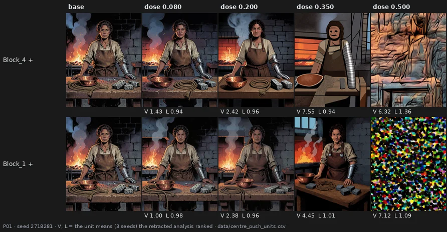
Opened at my prompting the next day, both are destroyed. A destroyed picture is far from its baseline, so V is high; and a regular texture is oriented line everywhere, so L is high too. High V with high L meant "destroyed into a regular texture". The bench proposed to push them further was withdrawn.
The verdict
Four claims are overturned: that strong pushes of two macro-blocks keep the drawing; that the structure-coherence statistic can tell damage from steering; that the centre of the stack gives way differently from its ends; and that a CLIP-based delta separates "semantic" from "structural" blocks. The common cause is a statistic read without the images. Every result that survives in this report was scored after an eye pass deposited in advance — which makes that eye, a single observer who knows the conditions, the largest limit of the report.
Why I might be wrong
- The retractions rest on the same eye whose limits are listed below. For the eye veto, six blind model observers agreed with me on every pair both could resolve.
- Some of these statistics may be repairable. Structure coherence at a smaller window might flip the two units it gets wrong; that has not been run.
- The centre-push null concerns macro-blocks, groups of consecutive blocks, not single blocks.
The data
The best doses by the statistic
| macro-block, positive | V at 0.500 | L at 0.500 | what the render shows |
|---|---|---|---|
Block_4 |
3.28 | 1.204 | no subject; crumpled-paper texture of dense black strokes |
Block_1 |
3.84 | 1.058 | no subject; colour confetti |
Arm means over prompts and seeds (docs/centre_push_result.md §4); the figure shows the unit
means of one prompt (data/centre_push_units.csv). At 0.350, Block_4 + already flattens faces
into masks; Block_1 + at 0.350 on this prompt and seed keeps the blacksmith intact, framed
closer. The retraction is in docs/centre_push_result.md §4, where the original table is kept and
struck through.
A measure with the sign wrong
The centre-push bench had a pre-registered eye veto: twelve pairs of renders, and for each I said
which was more broken. I resolved 9 and agreed with L on 7, below the registered 8 of 12, so the
label "L not validated by eye" applies. Seven of nine is not a rout. The rout is in the two
disagreements: both are Block_6 + 0.080, which L scores above its own baseline and which I, and
six blind model observers in both orientations of the sheets, call broken. Block_1 − 0.500 is
the same case (L 1.02–1.03, broken in both pairs). A statistic that says a picture gained
structure on the condition three independent looks call damaged has the sign wrong.
The centre is not special
The bench's primary asked whether the four central macro-blocks give way under a push differently
from the two at the ends. T = +0.053, p = 0.19; the range guard passed, so this is a null.
Block_5, in the centre, gives way hardest of all; Block_1, at an end, less than five of the
eight central arms. A post hoc reclassification of Block_5 as an end gives p = 0.02 and is
recorded as such, not as the verdict. The single-block map on page 21 shows why
macro-blocks were the wrong unit: they cut across the groups that push together.
Semantic routing
An analysis written by another assistant, never published, ranked 56 single-block arms by the
difference between how consistent an arm's CLIP-embedding change is across ten images of one
prompt and across 26 images of different prompts, and read a large difference as a "semantic
router". The audit (docs/semantic_routing_audit.md) found:
- no script in the repository computes the p-values it quotes, and its survivor count is 12 in the text and 16 in the summary;
- doses are not part of the key, so different doses of one arm are mixed or silently dropped;
- the difference measures how alike the images are: ten renders of one character against 26 different scenes; every visible edit is expected to score positive;
- its second-ranked "semantic router", blk26 +, lays the same mosaic of colour cells over any content, white background included — the least semantic effect in the set.
What survives is each column on its own: for a fixed content most arms move the CLIP embedding the same way whatever the word order (page 24), and the arms most stable across 26 different scenes are grain, blur and texture.
What the numbers could not see
Notebook page 11 records three more cases. Five conditions recommended from displacement statistics ranked 75th to 80th of 80 on structure coherence; the condition picked by eye ranked 12th. An edit removed all colour from a leaf while leaving the leaf intact, in 9 of 20 fresh seeds and 0 of 20 controls, and never when the prompt named a colour — an open lead on which colours an edit can reach. A generality test for that effect was run on subjects whose colour was never in doubt, so its null meant nothing.
The style-direction result of notebook page 09 is also overturned; it is discussed beside the result it seems to contradict, on page 23.
Lessons kept as rules
- No sentence about how a render looks without opening it at 1:1. When the eye and a statistic disagree, the statistic is the suspect (pitfall 90).
- A distance from the baseline cannot tell steering from damage. A destroyed image is far.
- Before claiming that something has not been done, search for it (pitfalls 87, 88).
- Before fixing a threshold on the agreement of two measured things, measure how well each agrees with itself (pitfall 89).
Limits of this report
- One model. Krea-2 only; whether any of this transfers to another architecture is untested.
- One observer, who knows the conditions. Every eye pass is mine; hashed names do not blind me (page 20). All images are published so that the eye pass can be repeated.
- Small confirmatory samples. 16 to 40 cells per test; seven cells for the matched comparison of page 22.
- Doses calibrated on single images. Some are too strong for a preset (page 23).
- The guide to each block on page 21 is provisional. One observer, a few prompts, one dose per direction; most of its Style-band entries are unmeasured and it is meant to be expanded.
- One test is inconclusive by its own rule (page 24); the weights result is marginal (page 21); the middle blocks' coherence is seen by eye only (pages 23, 25).
- Not run: a forward-pass measurement of each block's write into the residual stream; a clean-up pass after a preset; the character-consistency test proposed on page 23.
Reproducing this
model:
checkpoint: krea2_turbo_bf16.safetensors
weight_dtype: default
sha256: not recorded — the file is outside the repository
sampling:
sampler: euler_ancestral
steps: 9
cfg: 1.0
denoise: 1.0
scheduler: simple
resolution: 1024x1280
tuner:
node: ArthemyKrea2ModelTuner
version: not recorded — the tuner is a separate repository
mode: macro-block group gains Block_1 … Block_6
prompts:
file: data/centre_push_plan.csv
ids: [P01, P02]
seeds: [2718281, 3141592, 1618033]
conditions:
- name: Block_1 … Block_6, both signs, doses 0.080, 0.200, 0.350, 0.500
measured_D: not measured; V is reported in units of the seed noise of the same prompt
outputs:
folder: benchmark_centre_push/renders
manifest: data/centre_push_plan.csv
analysis:
script: experiments/analyze_centre_push.py
sha256: 53e00f1353f070aa35be907fe4503b6c715528b962980786ced4d810b5d3ee6a
produces: data/centre_push_units.csv, data/centre_push_tests.csv, data/centre_push_veto_result.csv
Provenance
- Renders. benchmark_centre_push (295).
- Pre-registrations:
docs/prereg_centre_push.md,docs/prereg_centre_push_model_eye.md. - Result documents and retractions:
docs/centre_push_result.md§4,docs/centre_push_eye_veto_result.md,docs/semantic_routing_audit.md. - Pitfalls:
docs/errors_log.md,docs/_pitfalls_88_da_inserire.md,docs/_pitfalls_89_da_inserire.md,docs/_pitfalls_90_da_inserire.md. - Related notebook pages: 09, 11.
Ambiguous1730 renders · 54 prompts · 2026-10-05
Appendix A: other kinds of edit
The direction I'm chasing. Before single blocks, this project edited the weights in other ways: reordering whole blocks inside the checkpoint, permuting them, scrambling signs. Some of those results passed pre-registered tests, and one produced an observation worth keeping.
What would kill it. Nothing new is tested here. The appendix only reports, with their status, results that live in the exploratory notebook.
Where we are. Two pre-registered results hold for block reordering. One observation — attributes appearing that the model normally leaves out — is kept as a curiosity, with its weaknesses stated.
In two minutes
These edits are not single-block scaling. A block derangement swaps the weights of whole blocks with one another, scaled by a dose; a permutation reorders them; a sign scramble flips signs so that the weights move exactly as far without any structure. They are reported here because two of their results are pre-registered and replicated, and because one of them tells something about what a weight edit can bring into a picture. The full pages, with figures, data and reproducibility blocks, are in the exploratory notebook.
The verdict
Block derangement has two confirmed effects: the sign of the edit decides whether hatching strokes cross or run parallel (16 of 16 prompts), and the edit enlarges the subject in the frame (9 of 10 new styles). A permutation brought out an attribute the prompt asked for and the model usually leaves out, in 19 of 20 seeds; it is an observation, not a result, and is boxed as such below.
Why I might be wrong
- These are a different family of edits from the rest of the report. Nothing here says anything about single blocks.
- The hatching measure was not checked against the calibrated preset, which moves it the other way; for that preset the measure may not track hatching at all (notebook page 06).
- The enlargement may be a matter of size, not structure. The scramble at equal distance was not rendered.
- The attribute observation was scored by me, with the condition visible, on one prompt family.
The data
The hatching axis
In a comic-style corpus, block derangement pushed positive crossed the hatching strokes and pushed negative ran them parallel. A pre-registered test on 16 new prompts confirmed the sign: crosshatch entropy +0.288, 16 of 16 prompts, 79 of 80 pairs. The same test overturned the third family of the prediction — the sign scramble's exploratory effect did not come back (5 of 16 prompts). Full page: notebook page 06.
The subject grows
Pre-registered on ten styles that did not exist when the prediction was frozen: under block derangement at double dose the subject's area grows by a geometric mean of 1.234, in 9 of 10 styles, with all three predicted signs correct. The same round measured the blinding of the eye pass and found it failed (page 20). Full page: notebook page 03.
A curiosity: attributes that appear
Observed, not established. A prompt asked for "small barnacle-like clusters studding one earlobe". The stock model drew them in 1 of 20 seeds; a block permutation drew them in 19 of 20; a sign scramble moving the weights exactly as far (D = 0.0538) drew them in 1 of 20. On a separate corpus — a rally car in a jungle, eight drawing styles, no lights named in the prompt — lit headlights went from 10 of 35 at baseline to 31 of 38 under one edit and to 0 of 39 under another.
Its weaknesses. A different kind of edit from the rest of this report. The barnacle round was scored by me with the condition visible. The headlights were scored blind, but on the very renders that produced the observation; the exact test is at its floor (p = 0.031, Holm 0.19). The pre-registered confirmation on a second corpus could not decide anything: 9 of its 10 prompts never lit a headlight in any condition. One prompt family; the test of generality was designed and never run.
What makes it worth keeping is the control: the same distance in weight space, without structure, does nothing. How the weights move mattered, not how far. Full page: notebook page 02.
Reproducing this
model:
checkpoint: krea2_turbo_bf16.safetensors
weight_dtype: default
sha256: not recorded — the file is outside the repository
sampling:
source: each notebook page's own reproducibility block (pages 02, 03, 06)
tuner:
node: ArthemyKrea2PresetLoader (preset JSON files in presets/)
version: recorded per page in the notebook
mode: preset_json
prompts:
source: notebook pages 02, 03 and 06
files: [data/stage7b_images.csv, data/stage12_images.csv] # pages 06 and 03; the page-02 prompt is in the notebook
seeds: as recorded on each notebook page
conditions:
- name: block derangement, block permutation, sign scramble, calibrated preset
measured_D: recorded per condition on each notebook page (for example 0.0538 for the norm-matched scramble)
outputs:
source: notebook pages 02, 03 and 06
analysis:
source: notebook pages 02, 03 and 06
Provenance
- Renders. notebook page 02 (920), notebook page 03 (250), notebook page 06 (560).
- Pre-registrations:
docs/prereg_hatching_axis_stage7.md(page 06),docs/prereg_stage12_ingrandimento.md(page 03);docs/prereg_attribute_emergence_stage7.md(page 02, the generality test that was never run). - Pages: 02, 03, 06.
Holds514 renders · 7 prompts · 6 seeds · pre-registered · 2026-10-05
A preset made by eye, tested blind on characters it never saw
The direction I'm chasing. The block map is only useful if someone can use it: look at what each block does, mix a few of them into a preset of their own, and get the look they had in mind — on new pictures, not only on the ones they tuned it on. And the character has to stay the same character.
What would kill it. A preset that only works on the pictures it was tuned on; a look that someone who does not know which image carries it cannot pick out; a face that changes into someone else.
Where we are. The look carries over to characters the preset never saw, and a blind observer picked it 56 times out of 56. The character stays recognisable, but the face moves a little more than a change of seed moves it, and an expression can go flat. The test had one observer and no sheets with two different characters.
In two minutes
Seven character portraits written in one template ("Western comics style, close-up portrait, frontal view.", then the character). On four of them I looked at every single block pushed both ways (457 renders) and wrote a preset by eye: ten blocks, doses between 0.05 and 0.35. What I wanted, in my words before any test: a more American-comic look leaning toward animation: flat colours and clean lines, with proportions exaggerated only slightly compared with the default. The preset was frozen, the rules and scoring code committed, and only then were all seven characters rendered at four new seeds, with and without it.
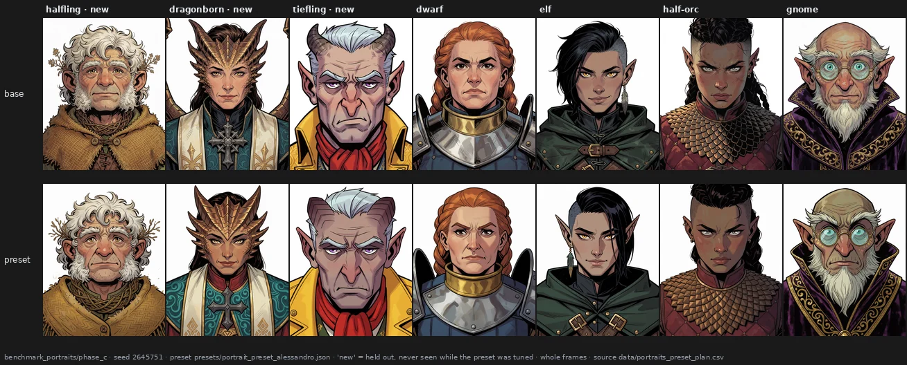
The three columns marked new are the test: the halfling, the dragonborn and the tiefling were written into the plan but never rendered while I was tuning. Then someone who had never seen the project looked at the pairs without knowing which side carried the preset.
The verdict
A preset written by eye from the single-block map transfers: its change is as coherent on three unseen characters as on the four it was tuned on (0.51 against 0.61), and a blind observer chose it as the closer match to the described look in 56 of 56 comparisons. The characters stay themselves — far closer to their own base than to any other character — but the rule I set for the face, "no more change than a new seed", was not met. Looking at the worst cases, the preset can also turn a prompted expression flat and remove small prompted details.
Why I might be wrong
- One blind observer, and close to me. My partner, who had not seen the project and did not know which image carried the preset or what result was expected; I was out of the room. Her answers are strong evidence that the change is visible and goes the described way, not a measure of how many people would agree.
- The question named the look. She was asked which image matched "more American comic / animation", not to describe what changed. A preset that only did something else would have failed; a preset that did this plus something unwanted could still pass.
- "Same character" had no foil. Every sheet showed one character twice, so answering yes every time could not be wrong. The evidence on identity is ArcFace, not the observer.
- The model observers did not work. The pre-registered first blind protocol used three model instances; the first read position, not pictures (LEFT on 51 of 56 sheets), and the other two were not run. That arm is reported as not completed.
- My own eye pass is not blind (page 20). It said yes to every question, which is why the blind test was added.
- Seven characters in one drawn style, one preset, four seeds. Nothing here says how a preset for photographs would fare.
The data
The look carries over
Coherence is the agreement between the changes the preset makes on two pictures, measured on 23 style statistics (page 20): 1 means the same change, 0 unrelated. The rules, written before the test renders:
| rule | threshold | result | verdict |
|---|---|---|---|
| G_S the preset agrees with itself across seeds | median ≥ 0.50 | 0.78 | pass |
| H1 coherent across the three new characters | median ≥ 0.40 | 0.51 | supported |
| H2 no worse than on the four calibration characters | ≥ 0.61 − 0.15 | 0.51 | supported |
Data: data/portrait_preset_tests.csv, data/portrait_preset_measures.csv,
data/portrait_preset_style_features.csv. The reproduction check opened the batch: a phase A base,
rendered again, is the same file pixel for pixel (largest difference 0); all 57 planned renders
are present.
A blind observer
Each sheet showed the base and the preset of one character at one seed, side by side, under a random number; every pair appeared twice, once with the sides swapped, in a shuffled order of 56. The key was committed before anyone answered.
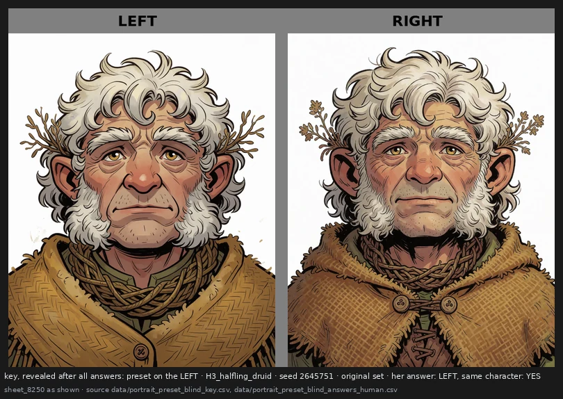
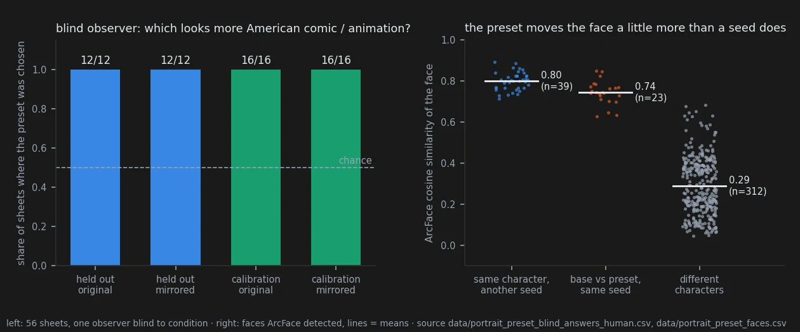
| original set | mirrored set | verdict | |
|---|---|---|---|
| position check: same side named on both versions of a pair | 0 of 28 | pass | |
| H4 preset chosen, held-out characters | 12/12 (p = 0.0002) | 12/12 | supported |
| H5 "same character", held-out characters | 12/12 | 12/12 | passes, without foils |
| calibration characters, preset chosen (reported) | 16/16 | 16/16 |
Answers: data/portrait_preset_blind_answers_human.csv; key: data/portrait_preset_blind_key.csv;
tally: data/portrait_preset_blind_tests_human.csv. The model observer's answers and diagnostic
tally are in data/portrait_preset_blind_answers_model_obs1.csv and
data/portrait_preset_blind_tests_model_obs1_diagnostic.csv.
The face
ArcFace, a face-recognition network, gives one vector per detected face; two faces of the same person score high. It found no face in three of the four gnome preset images and in two tiefling images, one of them a base, so the identity rule was scored on the halfling and the dragonborn:
| character | base vs preset, same seed | base vs base, another seed | rule: first above second |
|---|---|---|---|
| halfling (new) | 0.75 | 0.82 | no |
| dragonborn (new) | 0.74 | 0.75 | no |
H3 is refuted. The calibration characters show the same pattern. Described after the test, over
every detected face: the same character at another seed 0.80 (39 pairs), base against preset 0.74
(23), two different characters 0.29 (312, highest 0.68). The preset keeps each face far closer to
itself than to anyone else, and a little further than a seed change does — and these prompts are
so specific that a seed change barely moves the face. Data: data/portrait_preset_faces.csv.
What the preset takes away
After every number was in, I opened at 1:1 the seven pairs ArcFace marked worst — the gnome at three seeds, the tiefling at two, the half-orc and the dwarf at one. Not blind, and selected.
- No deformation in any of the seven; the lost detections on the gnome are not damage. Glasses, ears, beard and robe on the gnome, horns, scarf and yellow jacket on the tiefling: each pair is the same character.
- Small prompted details go with the hatching: the half-orc's dirt smudges across the nose, the gnome's glowing chalk dust, the tiefling's embroidered coat. "Clean lines" also means fewer small marks, including requested ones.
- Prompted shapes can drift. The tiefling is prompted with "short curling horns swept flat against cropped silver hair" and a "yellow fancy jacket"; at all four seeds the preset makes the horns larger and heavier and the jacket plain:
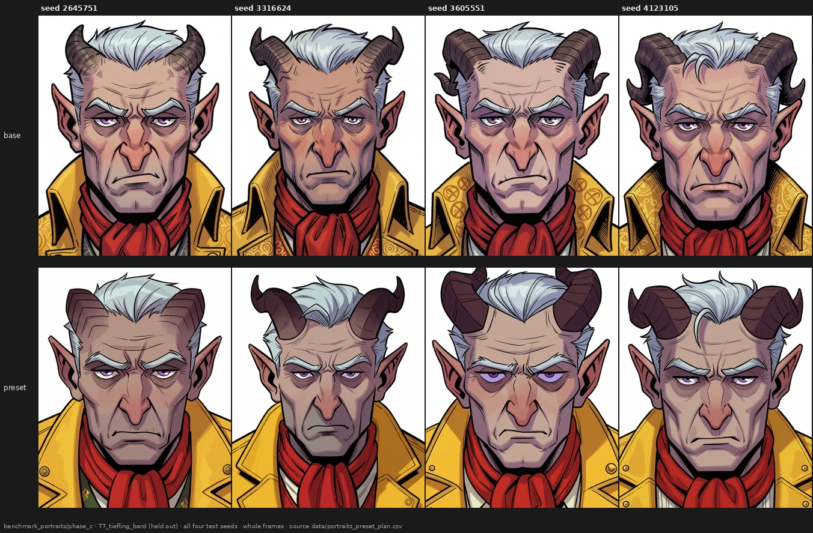
- Expressions can go flat. The gnome is prompted "wide-eyed manic curiosity": wide-eyed and mild in all three bases, frowning in all three presets. The half-orc's "fierce defiant snarl" becomes a closed, stern face — the largest drift of the seven, and its lowest ArcFace score.
The preset contains block 8 at +0.15, which my own guide on page 21 lists as giving less
expression; it is the first suspect, and scaling it alone on these portraits would test it.
Details: docs/portrait_preset_result.md.
Reproducing this
model:
checkpoint: krea2_turbo_bf16.safetensors
weight_dtype: default
sha256: not recorded — the file is outside the repository
sampling:
sampler: euler_ancestral
steps: 9
cfg: 1.0
denoise: 1.0
scheduler: simple
resolution: 1024x1280
vae: qwen_image_vae.safetensors
text_encoder: qwen3vl_4b_bf16.safetensors (CLIPLoader type krea2)
tuner:
node: ArthemyKrea2ModelTuner, after ArthemyKrea2ResetPatcher
version: not recorded — the tuner is a separate repository
mode: Real Value, driven by a 34-slot vectors_override
prompts:
file: data/portraits_preset_plan.csv
calibration: [D1_dwarf_paladin, E2_elf_rogue, O4_halforc_fighter, G5_gnome_wizard]
held_out: [H3_halfling_druid, R6_dragonborn_cleric, T7_tiefling_bard]
seeds:
phase_a: [2236067, 1732050]
phase_c: [2645751, 3316624, 3605551, 4123105]
conditions:
- name: baseline
measured_D: not measured
- name: preset
file: presets/portrait_preset_alessandro.json
dose: blk01 +0.10, blk08 +0.15, blk09 -0.35, blk11 +0.05, blk14 +0.10, blk18 +0.10, blk19 -0.10, blk20 +0.10, blk24 -0.10, blk25 -0.12
measured_D: not measured; the preset is a vector of per-block gains, not a calibrated displacement
outputs:
folder: benchmark_portraits/phase_c (test), benchmark_portraits/renders (phase A atlas)
manifest: data/portraits_preset_plan.csv
analysis:
script: experiments/analyze_portrait_preset.py
sha256: 971e7e8443308b5abdff8ffb69ff0309ecb7175da3db14cb00dcea3873406221
produces: data/portrait_preset_style_features.csv, data/portrait_preset_faces.csv, data/portrait_preset_measures.csv, data/portrait_preset_tests.csv
blind_test: experiments/portrait_preset_blind.py (sha256 28387514a91f195f9e62f8303a9a89e6193f582a63dc63a7f0a355145ad6b56e)
Provenance
- Renders. benchmark_portraits/renders (457), benchmark_portraits/phase_c (57).
- Pre-registration:
docs/prereg_portrait_preset.md, with amendment 1 (model observers) and amendment 2 (human observer), each committed before its observers answered; the preset was frozen inpresets/portrait_preset_alessandro.jsonbefore any test render. - Result document:
docs/portrait_preset_result.md. - Render logs:
docs/RENDERS_2026-10-05_portraits.md,docs/RENDERS_2026-10-05_portraits_phase_c.md. - Eye pass:
data/portrait_preset_eye_alessandro.csv, deposited before any number. - Phase A plan: 457 rows written by
experiments/portraits.py(--plan), committed beside the other bench plans. - Public version of the blind test:
experiments/build_try_the_test.pybuilds a page from 14 pairs at seeds 3605551 and 4123105. It is no longer linked from the site (2026-10-14): the blind tests will be published together, all or none.
Holds2120 renders · 7 prompts · 10 seeds · pre-registered · 2026-10-08
Inside a block — attention, MLP, and what an edit costs
The direction I'm chasing. Every block of Krea-2 has two halves, an attention and an MLP, and until now we had only ever scaled them together. If the knobs live at a finer grain than the block, the halves should do different things, and the noise that comes with a push might belong to one of them.
What would kill it. The two halves doing the same thing, or the noise following the dose rather than the half; and, for the practical claim, middle-block edits costing as much as late ones once they are tried on pictures they were not chosen on.
Where we are. The halves differ, and an eye blind to the condition puts the noise mostly in the MLP. Middle-block edits reshape a drawing and spare its surface far more than late ones do, pre-registered on new prompts. But they are not free: a few of them pay on new pictures.
In two minutes
Each block of the model has an attention part (five matrices) and an MLP part (three). An atlas (C59) scaled each half alone, in both directions, for all 28 blocks, on three prompts and three seeds: 1016 renders. The person who knows the images best then labelled every block, half and direction blind, choosing among nine kinds of artefact and three strengths.
Noise lives mostly in the MLP. The attention joins it only in the last three blocks. The first block is the strangest: either half alone wrecks the picture, while both together keep its composition.
The labels also showed that the edits praised as "good for the comic" were the ones that changed the picture most, and they sat in the middle of the stack. A pre-registered test on new prompts and seeds (C60) confirmed it: middle-block edits change more and damage less. They still cost something, in four of ten edits.
A third test (C61) tried to overturn the older claim that every push costs fine texture. It could not: on its own comic prompts the old numbers came back almost to the third decimal.
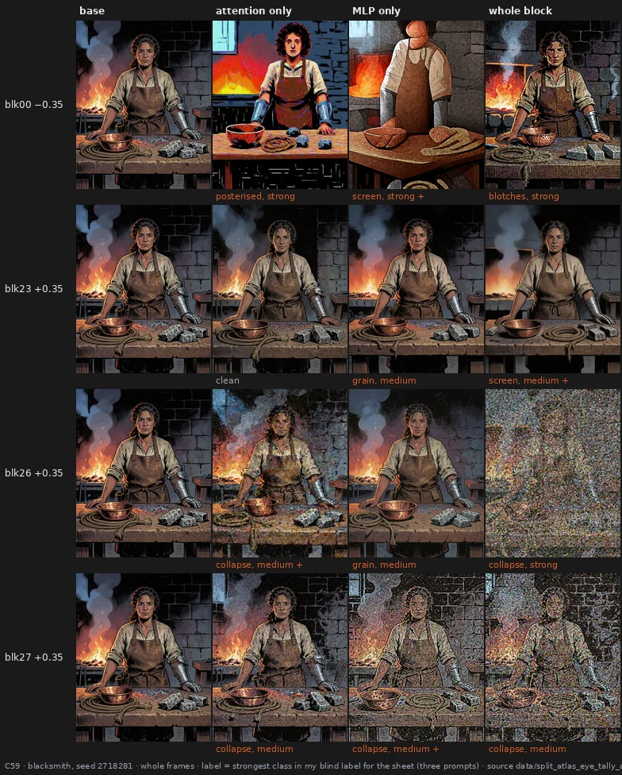
The verdict
Holds for the practical claim, pre-registered (C60): on comic and cartoon prompts, edits to blocks 1-19 change the picture more than edits to blocks 20-27 and damage its surface in 19% of pairs against 79%. Holds that this is not free either: by the rule fixed before the labels, the middle edits carry a detectable cost. Open for where the noise sits (blind, but without a decision rule) and for the first block. Ambiguous for the cost of a push: page 05 replicates on its own prompts, the test as a whole did not decide.
Why I might be wrong
One observer. Every eye label is mine. I was blind to the condition, and my self-agreement on the damage threshold was 1.00 on the 15 repeats of C60, but my eye is also the one that chose the middle-block edits in C59. New prompts and seeds guard against fitting the images, not against fitting a taste.
"Slight" does not reproduce. In both eye passes every disagreement between a first and a repeated showing was "slight" against "none". Only medium and stronger count as damage here.
The measures do not see the noise. The fine-texture measure of page 05, the noise estimator of
C58 and a band-pass measure all failed against the eye on the noise that matters. As a size of
change, the same measures rank the eye's noise only moderately (AUC 0.75-0.81). A pre-registered
search for a better one (C62, eight candidates chosen on C59 and tested on C60) found none: the best
remained the size of the fine-texture change, AUC 0.79 on the test set, below its 0.85 bar
(docs/noise_metric_result.md). Every noise statement on this page rests on the eye.
One dose, illustration-heavy. All tests use ±0.35, except C61 at ±0.20. Six of seven prompts are drawn; the only photographs are in C61, where they behaved differently.
The data
Where the noise sits
The split atlas pushed the attention (wq, wk, wv, gate, wo) or the MLP (gate, up, down) of one
block by ±0.35, through granular_json. Both checks passed to the pixel: the atlas baseline
reproduced, and all eight matrices through the granular path equalled the whole block through the
vector. I labelled 168 sheets at seed 2718281, one per block, half and sign, each showing
the same edit on the three prompts, plus 20 unannounced repeats.
68 of 168 sheets carry an artefact and 46 carry noise (blotches, grain, collapse or a regular
screen). Blocks 2, 3, 5 and 7 to 9 are clean in all six conditions. Among the 19 block-sign cells
where either half is noisy, the MLP is noisier in 13, the attention in 2, with 4 ties. At blocks 26
and 27 pushed positive both halves are noisy and the whole block is worse than either. A first
reading of mine from small thumbnails had put the block-26 noise in the attention alone; at full
resolution both halves carry it, and that reading was withdrawn (docs/split_atlas_eye_result.md).
The first block
At -0.35 the attention alone posterises every picture into flat saturated colour, and on the rally into a mosaic. The MLP alone replaces the subject. Both happen in 9 of 9 cells. Lowered together, the composition holds (layout r 0.69-0.80), but at full resolution the surface is covered in blotches. The two halves compensate each other for content, not for texture.
The damage also changes kind. Unbalanced, the block breaks the picture at the level of content and colour: the attention alone pushes chroma up by 13 to 68 points and streaks the surface with rainbow fringes, the MLP alone smooths it into a painted, screen-textured surface and replaces the subject. Balanced, it keeps the content and the colour (chroma within 2 points) and pays in blotches. One way to read it, not tested: in the first block the two halves write large, partly opposite contributions, so lowering one alone leaves the other uncompensated, while lowering both keeps the balance but thins the fine detail the block adds.
Searched across the whole atlas (seed 2718281, where the whole block exists), this is unique to the first block lowered: in 3 of 3 prompts there, and in only 5 other cells of the remaining 165. Everywhere else the rule runs the other way: in 125 of 168 cells the whole block changes the composition more than either half alone. Block 0 raised does not compensate either. A milder echo exists for colour at block 24 raised, where the attention adds chroma (+2.1) and the MLP removes it (−1.6) and the whole block moves it little (−0.2).
Form against surface
The labels suggested, after the fact, that the sheets praised for the comic changed the picture more than the noisy ones (layout r 0.74 against 0.87). C60 tested it on three new prompts (two comics, one cartoon) and three new seeds. It used ten middle-block edits chosen by rule, the praised sheets, and ten late-block edits drawn at random from the noisy ones. 191 renders; 180 blind pairs of edit and baseline with the side random, plus 15 repeats.
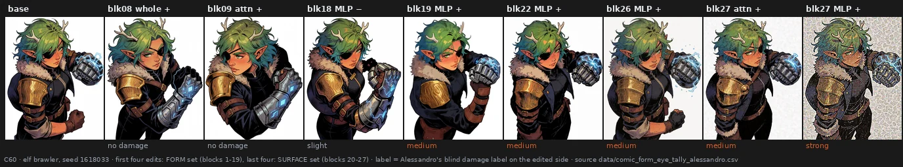
| middle edits (blocks 1-19) | late edits (blocks 20-27) | test | |
|---|---|---|---|
| layout r with the baseline, median per edit | 0.721 | 0.837 | p = 0.007 |
| change seen by eye, 0-2 | 1.59 | 0.47 | p = 0.0002 |
| damage medium or stronger, edited side | 17 / 90 | 71 / 90 | baseline sides 0 / 180 |
A preference question was dropped before any label, at my request, as too subjective.
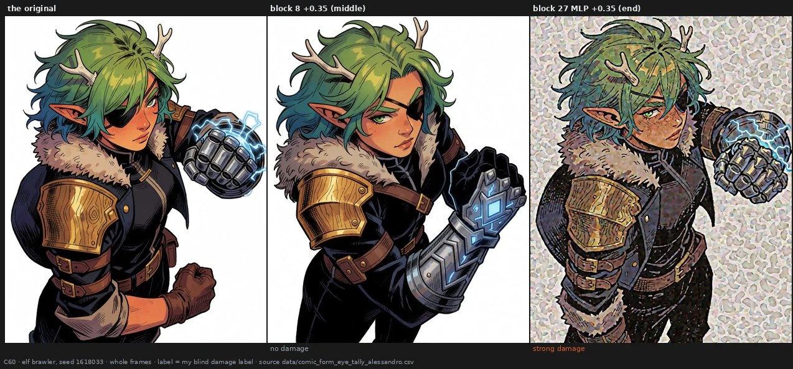
What the middle costs
The middle edits are not free. By the rule fixed before the labels, a cost is present: 0.19 against 0, Newcombe 95% [0.11, 0.28]. It sits in four edits, all at medium: block 19 MLP + in 8 of 9 pairs, block 1 attention + and block 17 whole + in 4 of 9, block 13 whole - in 1 of 9. Six edits are at 0 of 9. At 100% the damage is not the late blocks' grain: flat areas such as a sky break into patches or rectangles. Block 19 MLP + was clean on the prompts it was chosen on and is the most damaged here, so the cost depends on the prompt.
A follow-up (C63, docs/clean_six_result.md) put the six edits that came out clean on four new
illustration prompts at three new seeds, 72 blind pairs, with two late-block edits as a positive control
(damaged in 24 of 24). Four of the 72 were damaged against none of their baselines, three of them from
block 9 attention +: too few pairs to call the six free (the interval reaches 13%) or costly (it reaches
below zero). Block 2 whole −, block 8 MLP +, block 9 whole + and block 18 MLP − are at 0 of 21 damaged
pairs across the two tests.
The cost of a push, revisited
Notebook page 05 found, pre-registered, that pushing any block costs fine texture, more toward the output. C61 tried to overturn the general wording. It pushed every whole block by ±0.20, page 05's dose and path, on its two comic prompts and two photographs, at four new seeds: 913 renders. The first render matched page 05's own file to the pixel. By its own rules the test decided nothing. The gate, which required the bench to see the late-block cost, failed (0.989, p = 0.26). The primary, blocks 1-22, was undecided (0.996, 95% [0.981, 1.011]).
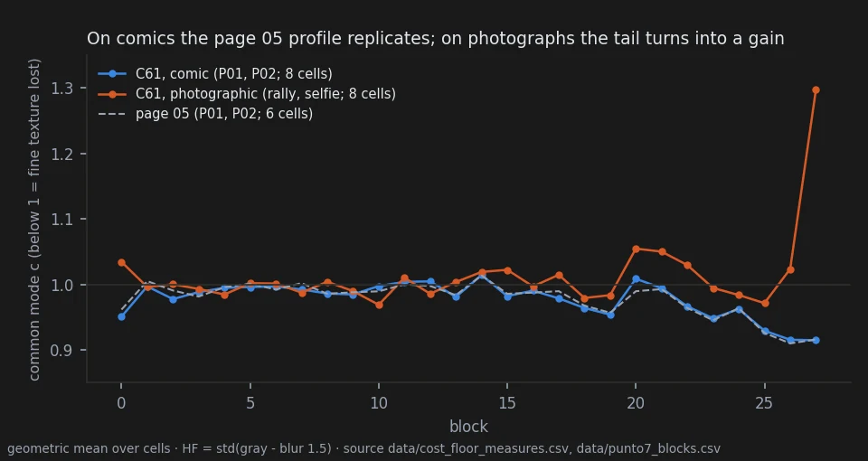
The figure shows why. On the comic prompts both of page 05's numbers come back: 0.989 for blocks 1-22 and 0.934 for 23-27, against 0.989 and 0.932. On the photographs the last blocks add high frequency instead (block 27: 1.27), which this measure counts as a gain. Page 05 stands on its own ground, and its "any block" is untested beyond it. Including block 27 in the gate, a block page 05 itself called an outlier, was a weakness of the design.
Reproducing this
model:
checkpoint: krea2_turbo_bf16.safetensors
weight_dtype: default
sha256: not recorded — the file is outside the repository
sampling:
sampler: euler_ancestral
steps: 9
cfg: 1.0
denoise: 1.0
scheduler: simple
resolution: 1024x1280
vae: qwen_image_vae.safetensors
text_encoder: qwen3vl_4b_bf16.safetensors (CLIPLoader type krea2)
tuner:
node: ArthemyKrea2ModelTuner, after ArthemyKrea2ResetPatcher
version: not recorded — the tuner is a separate repository
mode: Real Value; halves through granular_json (blocks.B.attn.{wq,wk,wv,gate,wo}, blocks.B.mlp.{gate,up,down}), whole blocks through the 34-slot vectors_override in C61
prompts:
files: [data/split_atlas_plan.csv, data/comic_form_plan.csv, data/cost_floor_plan.csv]
ids: [P01_blacksmith, F4_closeup, S1_rally, P02, P1_elfbrawler, F1cartoon_fisherman, P4_selfie]
seeds: [2718281, 3141592, 4669201, 1618033, 1414213, 2236067, 1259921, 1732050, 2645751, 3162277]
conditions:
- name: attention or MLP of block B, +-0.35 (C59, C60)
dose: 0.350
measured_D: not measured; the dose is a per-matrix gain, not a calibrated displacement
- name: whole block B, +-0.20 (C61)
dose: 0.200
measured_D: not measured
outputs:
folders: [benchmark_split_atlas, benchmark_comic_form, benchmark_cost_floor]
manifests: [data/split_atlas_plan.csv, data/comic_form_plan.csv, data/cost_floor_plan.csv]
analysis:
scripts: [experiments/split_atlas.py, experiments/split_atlas_eye.py, experiments/comic_form_test.py, experiments/cost_floor_test.py]
produces: data/split_atlas_measures.csv, data/split_atlas_eye_tally_alessandro.csv, data/comic_form_eye_tally_alessandro.csv, data/comic_form_layout.csv, data/cost_floor_measures.csv
Provenance
- Renders: split atlas C59 (1016), comic form C60 (191), cost floor C61 (913).
- Pre-registrations:
docs/prereg_comic_form_test.md(+ amendments 1 and 2),docs/prereg_cost_floor.md(+ amendment 1),docs/split_atlas_eye_protocol.md(+ amendment 1); the atlas plandocs/plan_split_atlas.md; the earlier block-23 splitdocs/prereg_blk23_split.md. - Result documents:
docs/split_atlas_result.md,docs/split_atlas_eye_result.md,docs/comic_form_result.md,docs/cost_floor_result.md,docs/blk23_split_result.md. - Data:
data/split_atlas_eye_alessandro.csv,data/split_atlas_eye_key.csv,data/comic_form_eye_alessandro.csv,data/comic_form_eye_key.csv,data/comic_form_layout.csv,data/cost_floor_measures.csv,data/cost_floor_cells_G1.csv,data/punto7_blocks.csv. - Labels and keys were committed in the order the protocols require: key before labels, labels as downloaded before any count.
Holds1917 renders · 74 prompts · 8 seeds · pre-registered · 2026-10-18
The text encoder — how hard it pushes, and where the picture goes
The direction I'm chasing. Krea-2 reads the prompt with a language model, Qwen3-VL-4B, before the image model draws anything. If the same weight edits that work on the image model work on that text encoder, they might change what the picture is about — the genre, the style — rather than its surface. And once the picture changes, I want to know why it goes where it goes.
What would kill it. Edits whose effect cannot be predicted from anything we can measure on the text side; and, for the "why", an explanation that does not survive a test fixed before the data.
Where we are. How much a picture changes is predictable from the text side alone, mostly by the kind of edit. Where it goes is now clearer: anime is this character's fallback when the style words stop working, shown directly by removing them — but only for the elf: other characters fall back to painting or realistic renders. Random pushes reach that fallback only if they vary from token to token, and each real edit has a direction of its own: one protects the comic, another drives it to anime. Why a given edit points where it does is still open. And a dose ladder showed that the full-strength edits do not break the picture: the style holds up to about d = 0.70, and before it moves, the edit has often already changed who is drawn. Blind labels by two people confirm it: two of the edits cost the character far more than random pushes of the same size, and turn dark skin lighter. Since then I've looked inside: one layer, L06, writes almost all of the encoder's internal signal; the damage does not travel through the readings right after the edited layer, and the two halves of the readings together fall short of the full edit. Switching off half of the very first layer makes the picture write the prompt. And on the prompt itself, the separators make no difference, while BREAK breaks the scene.
In two minutes
Before the image model draws, a language model reads the prompt and hands over a long list of numbers, the conditioning. That's all the image model will ever know about your words. So I edited that language model the same way I edit the image model: one layer, its attention or its MLP, zeroed or doubled.
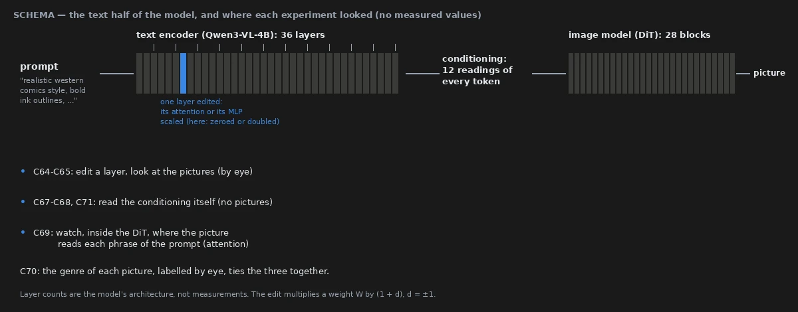
The pictures change a lot, and in a particular way. They do not get noisy, as they do when the image model is pushed hard. They change genre — a Western comic becomes anime or a cartoon — and usually who is drawn: the character loses her antlers, her ears, her skin tone, often her identity. The same edit on the same words in a different order can land in a different genre.
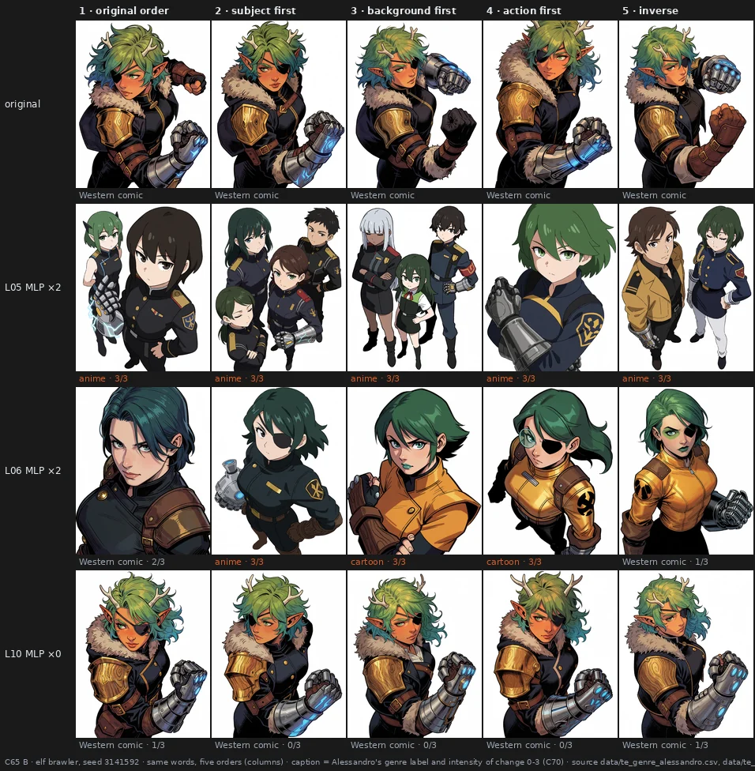
The useful part: how much a picture changes can be predicted without rendering it. Measure how far the edit moves the conditioning, and you know roughly how far the picture will move. That held in two tests fixed in advance — but mostly because it tells kinds of edit apart. Among the edits that change genre, all of them large, it says little about which change more.
The puzzle: where the picture goes. When the elf changes genre, she goes to anime in 39 of 50 cases. I tested two explanations. Maybe the picture stops paying attention to the words "western comics": no. Maybe the edit pushes the text the way writing "anime" would: no, the push points somewhere else entirely, and it is 5 to 24 times larger than swapping a style word.
Then I stopped guessing and looked at the fallback directly. Remove the three style words and the elf is drawn as anime, every time. Anime is where this description goes when nothing holds it in a style. Seven other characters, stripped of their style words, fall back to painting or realistic renders instead: there is no single default.
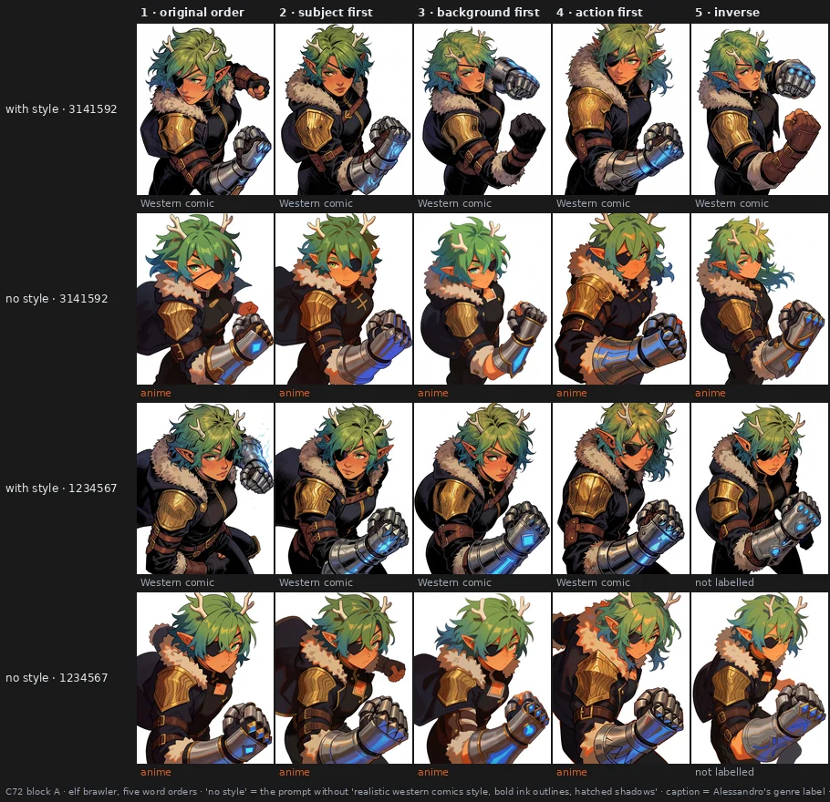
Random pushes as large as the edits, with no weight touched, also reach it, but only when they vary from token to token: the same random vector added to every token changes nothing. And the real edits are not random: the edit with the largest push keeps the comic every time, while random pushes of its size break it almost every time.
Last, I asked whether those edits were simply too strong. I rendered three of them at twelve doses, from a tenth of the edit to the full one. Nothing changes style below 0.70, and no picture breaks, even at full dose. But the character goes first. The half-orc stops looking like a half-orc — pointed ears, grey skin, undercut and warrior knot go — while she is still drawn as a comic; the style changes only later. For me this is the real damage: the edit makes the model forget what I asked for, and it fills the gap with a more generic person.
So I measured it blind: a yes/no question for every trait in the prompt, one question at a time, with no dose or edit shown. The traits fall steadily with the dose, and they go before the style. Then the control: random pushes of the same size. Someone else labelled those, without knowing anything about the study. Random pushes keep nine traits in ten; L06 and L14 keep half to two thirds. And when the skin changes under those two edits, it becomes lighter, every time; under random pushes it almost never changes. The prompts never name a skin tone: the edit takes away what holds the character, and the model fills the gap with its default.
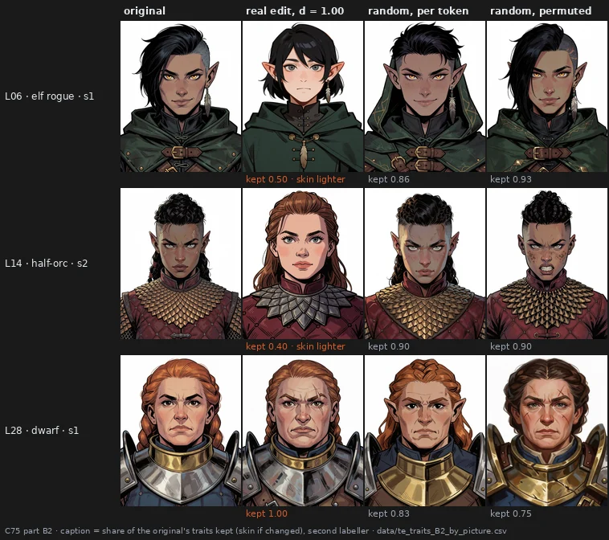
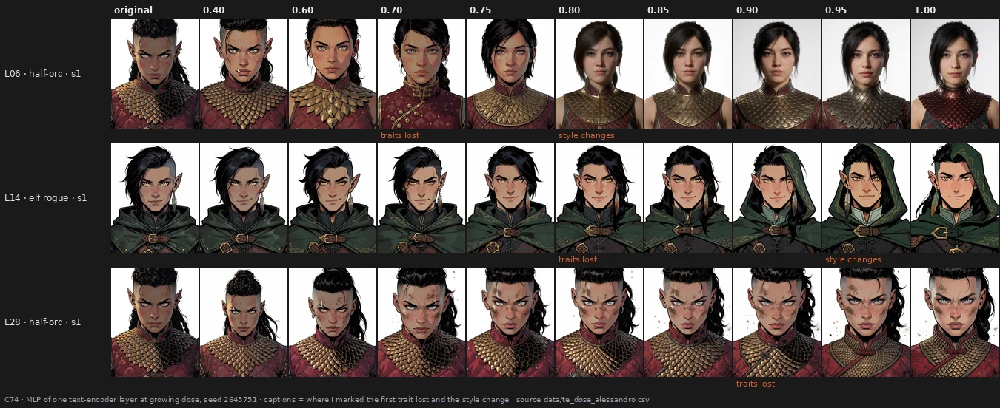
Then I opened the text encoder itself. A probe that only reads, run on all 36 layers, shows one layer doing almost all the writing: the MLP of layer 6 takes the internal signal from about 400 to about 13,100, and every layer after it, up to 33, adds a few percent. And L06 doubled is the edit that turned my portraits into photographs. That is a coincidence worth testing, not an explanation yet.
The image model doesn't read only the encoder's last layer: it takes twelve readings of every word, at layers 2, 5, 8 and so on up to 35, and mixes them. So I asked which readings carry the damage. I let the L06 and L14 edits reach only some readings and kept the others at their original value. The readings right after the edited layer do nothing. The early and middle ones cost more traits than the late ones, in five of six cases, but by a margin just short of the bar I had fixed (0.146 against 0.15). And the strangest part: the two halves together don't add up to the full edit. Under L14 they cost less than half of what the whole edit costs; the whole edit changes the person every time, the halves never.
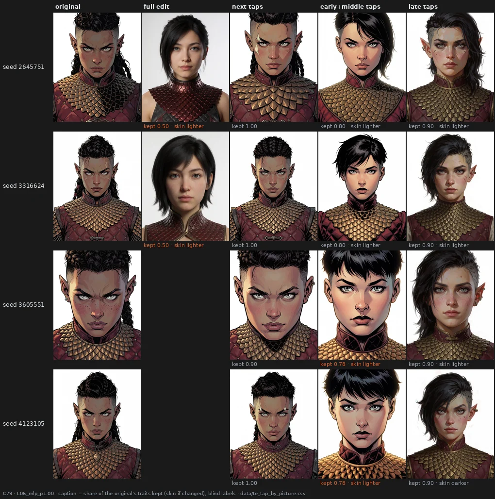
Then two curiosities. Switch off half of the encoder's first layer and the image model stops drawing: it writes, filling the picture with fragments of the prompt ("realist: om wetern comips"). Switch off the whole layer and you get coloured noise, no text at all. Measured on the encoder side, half a layer keeps the words recognisable at a normal size; the whole layer gone loses both.
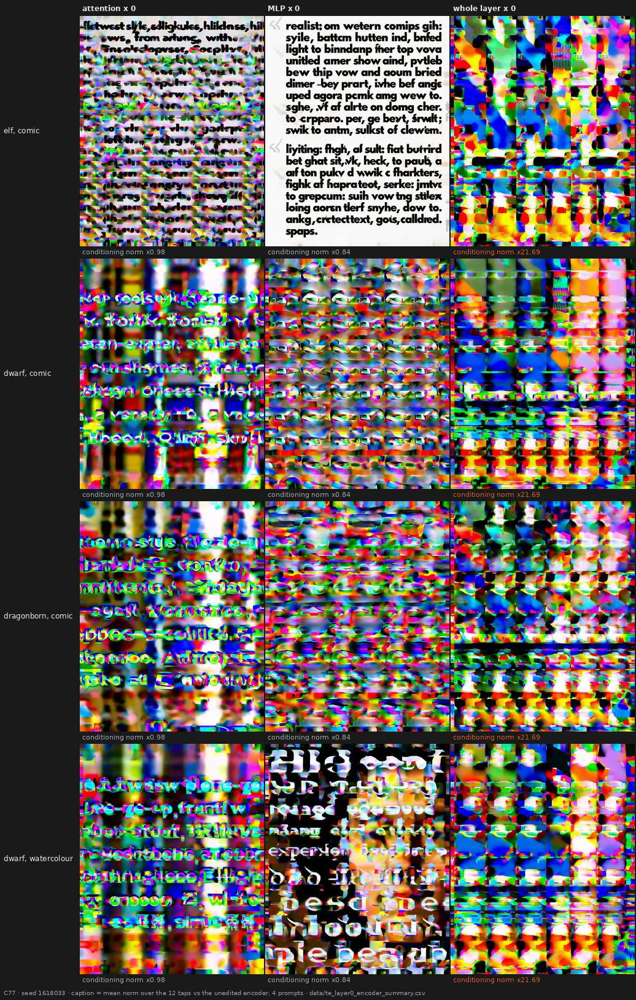
And people asked me about punctuation. On two complex prompts with four characters each, commas, periods, semicolons, no punctuation at all, or no "Character 1 (…)" labels: no difference, within a quarter of an error. BREAK, the old trick from CLIP-based models to stop concepts bleeding, does the opposite here: it breaks the scene in 16 of 16 pairs.
The verdict
Holds, pre-registered twice: the size of the push on the conditioning predicts how much the picture changes (Spearman 0.71 and 0.80), mostly between kinds of edit; within the edits that change genre it nearly vanishes (exploratory). Holds: the push is shared by the whole prompt plus small regions of 2-4 tokens bounded by commas. Holds: these edits change genre and identity, with less surface-quality loss than a DiT preset. Overturned: one edit moving different characters the same way; the genre switch coming from less attention on the style words; the switch coming from a text-like push toward "anime". Holds, pre-registered (C72): without its style words the elf is drawn as anime. Holds (C73): each character has its own fallback, mostly painting or realistic. Overturned (C73): strong edits send a character to its own fallback. Ambiguous: whether random pushes of the same size reach the fallback as often as edits — yes if they vary across tokens, no if they are one shared vector. Open: that each edit's own direction decides; what single phrases draw alone; anime as the usual destination of a switch. Ambiguous: whether the strong edits separate word orders inside the image model. Holds (C74): along a dose ladder the pictures move toward the full-dose picture, and the style changes before coherence breaks, which it never does. Holds* (C74): the change is gradual, by the rule fixed in advance; *but only pooled: L14 slides, L06 jumps. Holds (C75): the first cost of L06 and L14 is the character, before the style; the cost depends on the edit's direction, not its size (random pushes of the same size keep the character, and L28 keeps it better than they do); under L06 and L14 dark skin turns lighter. Ambiguous (C75): that L28 costs traits without changing style. Holds (C78): separators make no difference on complex prompts; BREAK breaks the scene. Open (C77): half of layer 0 switched off makes the picture write the prompt (4 of 6, bar 5). Open, described: L06's MLP writes almost all of the encoder's internal signal. Holds (C79): the damage does not travel through the readings right after the edited layer. Ambiguous (C79): that it travels through the early and middle readings rather than the late ones (+0.146 against a bar of +0.15).
Why I might be wrong
One observer, not blind. Every genre and intensity label is mine. On the order grids I saw the edit names, and I had seen these pictures before. I gave the intensity labels after I knew the first test had failed.
One prompt carries the word-order story. C69, C70 and C71 rest on the elf in five word orders at one seed. The anime default may be specific to this prompt or this character.
The fallback rests on one character. Anime is the fallback of this elf description; C73 confirmed that other characters fall back elsewhere. In the no-style pictures the character, pose and composition stay; what changes is the rendering — flatter cel shading, no hatching — and the label "anime" is my reading of that change.
Genre labels hide sub-styles, and the doses are extreme. While labelling I noticed that each label covers very different sub-styles: two pictures labelled "Western comic" can look nothing alike, so "no switch" does not mean "same style". All these edits zero or double a layer half; at that strength part of what is labelled a change of genre may be a loss of stylistic coherence. C74 checked this with a dose ladder and comparative judgements: no picture lost coherence, up to full dose. The labels of sub-style remain mine.
Size mostly sorts kinds of edit. The two tests of the size of the push were fixed on all edits
together. Checked afterwards within one kind, the relation nearly vanishes for the MLP-doubled edits —
the ones that change genre — and holds at 0.46-0.66 for the others (data/te_size_within_type.csv). Part
of that may be a ceiling: 28 of the 35 MLP-doubled edits were already labelled strong.
Mostly large doses. Almost everything here is at ±1: a layer half doubled or removed. C74 adds twelve doses, but for three edits, three characters and two seeds only.
Traits are judgements too. C75 fixed the list of traits before any label and asked them blind, but some are judgements of degree (age, androgyny, "reads as a dwarf"), and those are where the two labellers disagree most. The part B2 set was shortened after I had seen part A (every cell at full dose, half at 0.70 and half at 0.85), and two questions were reworded for the second labeller, so on those two our answers are not compared. Three characters, two seeds, one kind of edit. In C74, one row has an onset of "never" although the picture changes at 0.80 (I checked); it is kept as downloaded and changes no verdict.
What the measures do not see. The conditioning is what the image model receives, not what it does with it. Attention says where a phrase is read, not what it says. C71 averages over all the tokens of a prompt, which can hide an effect concentrated on a few words.
The newest results are thin. C77 is one seed, four prompts and my own reading of the pictures. C78 rests on two prompts that I wrote, and most questions sit near the ceiling, so a small effect of punctuation cannot be excluded. In C79 I labelled alone, and contact sheets showing the conditions existed before I labelled: my perfect agreement with myself on repeats (kappa 1.00) says I was consistent, not that I was not influenced. The probe of the 36 layers is a description: no prediction was fixed before it.
The intensity scale mixed two things. On L28 MLP doubled, all five pictures are labelled Western comic but intensity 3, "entirely another genre". Opened next to the original, they stay comics with a very different rendering. In practice intensity measured the overall change of style.
The data
The size of the push
C67 encoded the elf prompt under every edit of the C64 pilot (721 encodes, no images) and measured, for every token and every reading the edit can reach, how far the conditioning moved. Doubling an MLP moves it most (median 0.89), then doubling an attention (0.29), removing an MLP (0.18) and removing an attention (0.11) — the same order in which the eye ranked the pictures. Scaling only the queries and keys of a layer changes nothing the image model receives: a normalisation inside the attention cancels it.
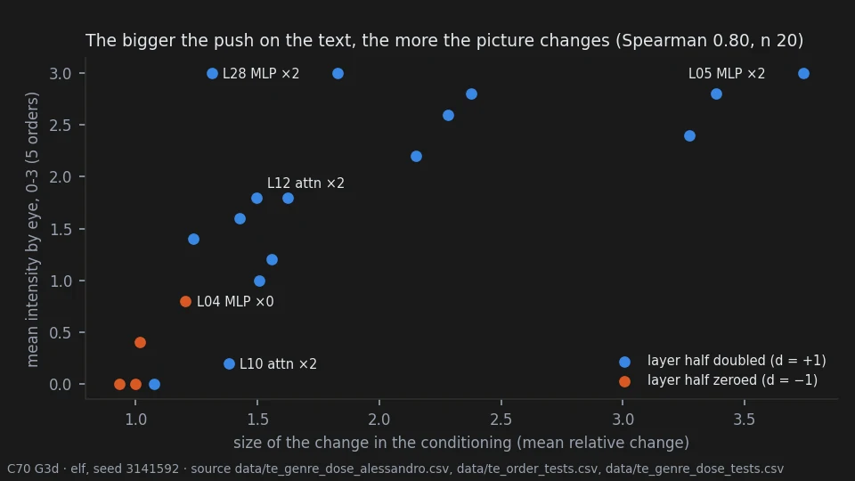
| test | value | rule | verdict |
|---|---|---|---|
| C67 E1 — size against "how much it changed", 140 elf edits | Spearman 0.71; AUC 0.80 for style changed | ≥ 0.50 | supported |
| C70 G3 — size against the rate of genre switches, 20 edits | Spearman 0.73 | ≥ 0.50 | supported |
| C70 G3d — size against the mean intensity 0-3, 20 edits | Spearman 0.80 | ≥ 0.50 | supported |
These tests pooled every kind of edit, and the kinds differ a lot in size. Within one kind the picture is
different (exploratory, data/te_size_within_type.csv): attention doubled 0.66, MLP zeroed 0.65, attention
zeroed 0.46 on the C67 material, but MLP doubled 0.06 (n 35). On the C70 material the MLP-doubled edits give
0.36 (n 11, p 0.28). So the size of the push tells a strong kind of edit from a mild one; among the strong
ones, the ones that change genre, it does not say which changes the picture more.
A shared push made of small regions
An exploratory analysis of C67 found that each edit pushes the conditioning of very different prompts in nearly the same direction (cosine 0.91-0.99 between prompts, 0.55 between different edits). C68 took away that shared push and looked at what was left. Two neighbouring tokens are pushed in related directions; four or five tokens apart the relation has halved (half-life 3 tokens). Groups follow the commas, most clearly in the middle of the encoder. These regions are as stable across word orders as the shared push, so they do not explain why word order matters (C68 H3, Spearman -0.37, not supported).
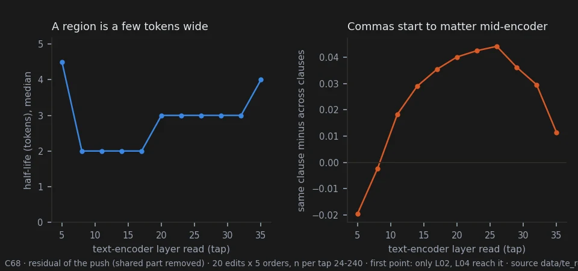
Genre and identity, not surface
The C64 pilot doubled or removed each half of each of the 35 layers the image model reads, on the elf, and I labelled every picture blind (140 edits, 10 repeats). Doubling changes far more than removing: strong changes in 40 of 70 against 4 of 70. Surface damage is rare (medium or strong in 8 of 140). My notes describe genres more often than noise: anime, chibi, a 1990s cartoon, children's illustration. C65 confirmed the quality side on seven characters: BRISQUE improves slightly (-1.52) where the DiT preset of page 28 costs +8.09.
This agrees with what others found on Stable Diffusion: a targeted edit of one MLP matrix of the CLIP text encoder changes what the model draws with image quality (FID) nearly unchanged, while the same kind of update made in the image model's cross-attention sometimes leaves the pictures incoherent (README, ref. 30). Their edits are aimed at one concept and built not to disturb the rest; mine scale a whole layer, and still cost little surface. Neither study compares the two halves at the same size of change: that is roadmap item C86.
No common direction across characters
C65 applied 20 edits chosen from the pilot to seven fantasy characters at two seeds. A DiT preset moves them the same way (page 28); these edits do not. Only 4 of 20 were coherent across characters (the bar was 14). The eye and the statistics disagreed in a telling way: the strong edits shift every picture the same way in colour and contrast, but each character lands in a different genre. At ±1 these edits also change who is drawn: identity is kept for at most two eligible characters in 19 of 20 edits.
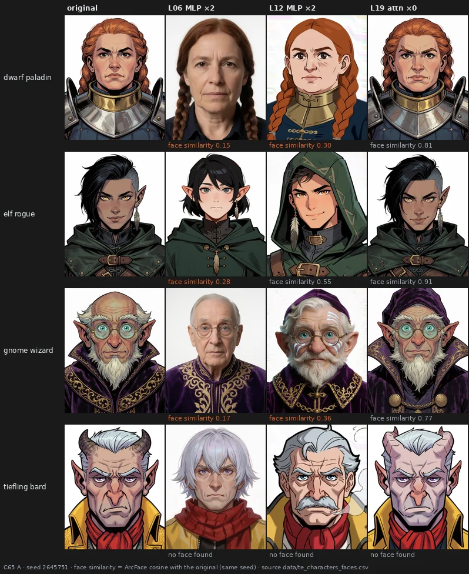
The figure also shows that the destination depends on the character. On these portraits L06 MLP doubled turns the dwarf and the gnome into photographs, not anime; on the elf (below) the same edit scatters the word orders between comic, anime and cartoon. Anime is the elf's fallback, not every character's.
Where the switches go
In C70 I named the genre of each of the 105 pictures of the word-order test (seed 3141592) and, separately, how far each one moved from its original (0-3). The five originals are all Western comic, so word order alone does not change the genre. Of the 100 edited pictures, 50 changed genre: 39 to anime, 11 to cartoon, none to realistic or painting. No edit that zeroes a layer half changed the genre. Two patterns appear among those that do. L05, L20 and L25 MLP doubled send all five orders to anime. L06, L09, L12 and L14 MLP doubled scatter them across genres; these are the edits he had scored highest for word-order dependence.
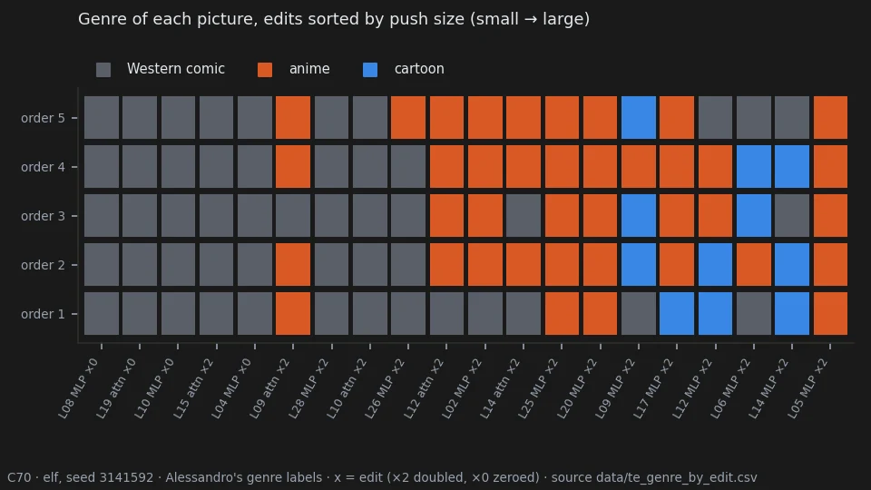
Inside the image model
C69 re-rendered 25 pictures — the elf in five orders, the original and four edits — with a probe that only reads the image model's attention. All 25 came out identical to the originals, pixel for pixel. At every step and in every block, the probe recorded where each part of the picture looks among the phrases of the prompt.
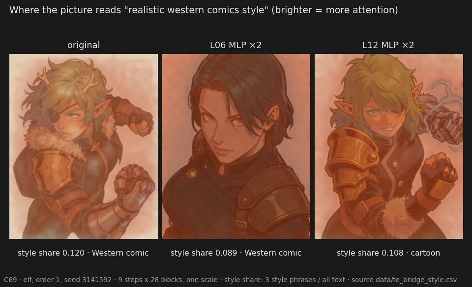
The strong edits move these maps about twice as much as the mild ones (P4: 0.29 and 0.30 against 0.16 and 0.13). Whether they also make the five orders read the prompt in more different places is not settled. P1 passed by a margin of 0.003, carried by L12 alone; L06 does not do it, though its pictures diverge as much. The blocks where L12 raises the divergence most are 12, 25, 18, 15 and 16.
Not less attention on the style words
The first explanation for the genre switch: weaken the words that name the style, and the model's own taste takes over. L06 MLP doubled does cut the attention on the three style phrases, from 0.095 to 0.054 of all attention on text, in every order. But L12 MLP doubled raises it to 0.121 and switches genre just as often. Picture by picture, the share does not separate the pictures that switched from those that did not.
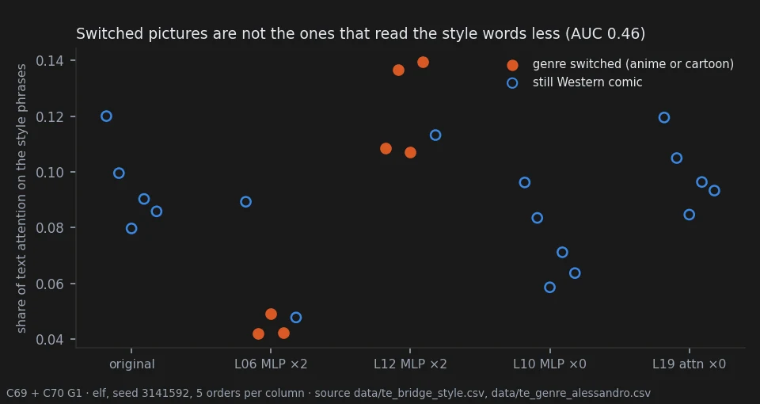
| test | value | rule | verdict |
|---|---|---|---|
| C69 P5 — strong edits lower the style share more than mild ones | L06 -0.041, L12 +0.026, L10 -0.020, L19 +0.005 | max(strong) < min(mild) | not supported |
| C70 G1 — share lower in switched pictures (20) | AUC 0.46 | ≥ 0.70 | not supported |
| C70 G1d — share against intensity (20) | Spearman +0.05 | ≤ -0.40 | not supported |
Not a text-like push
The second explanation: the edit moves the conditioning the way the words "anime style" would. C71 encoded the five orders with "realistic western comics style" replaced by "anime style", "cartoon style" or "oil painting style", and compared the direction of each swap with the push of each edit. Nothing lines up: every cosine is between -0.12 and +0.07. The three edits that send every order to anime point, if anywhere, slightly away from it. The pushes are 5 to 24 times larger than the word swap (exploratory). The only hint of a direction is cartoon: the cartoon-minus-painting cosine follows the number of cartoon pictures (Spearman 0.52, reported, counts of at most 3).
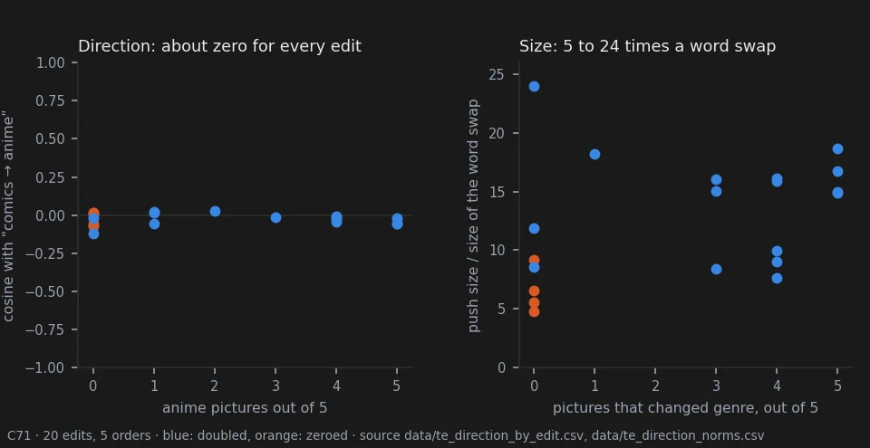
The fallback is anime
C72 asked what the picture becomes when nothing names a style. The elf prompt was rendered in its five word orders at two seeds without "realistic western comics style", "bold ink outlines" and "hatched shadows". Every labelled picture is anime: 9 of 9, against a bar of 7 of 10 fixed before the labels (one picture was not labelled; the result holds whatever it is). With the style words, the same orders and seeds are Western comic in 9 of 9. The empty prompt is not anime (anime, realistic, anime, painting), so this is not the model's global default. It is what this description of a character becomes when the style words are gone.
Random pushes of the same size
C72 then added to the plain conditioning random pushes as large as the real push of three edits, tap by tap, with no weight edited. The edits were L05 (all orders to anime), L06 (orders scattered) and L28 (largest push, stays comic). A gate checked the instrument first: with no push the render is pixel-identical to the plain one, and passing the real edit's conditioning through gives exactly the edit's render. A first version of the gate, built on stored float16 encodes, failed and was replaced before any other render (amendment 1).
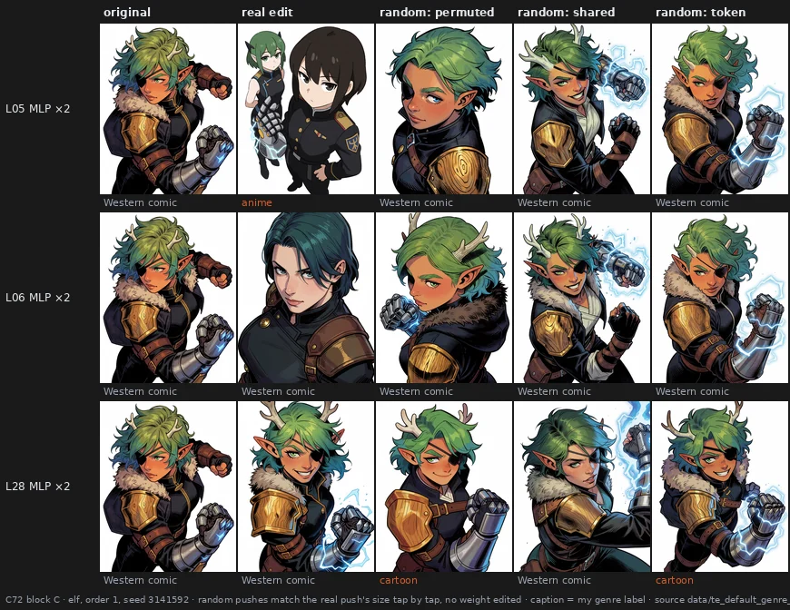
| push | genre switches (27 labelled cells) | ratio to the real edits | rule |
|---|---|---|---|
| real edits | 14 | — | — |
| random, permuted channels | 11 | 0.79 | size alone suffices |
| random, one vector for all tokens | 0 | 0.00 | the direction matters |
| random, noise per token | 10 | 0.71 | size alone suffices |
By the rule fixed before the labels (amendment 2), the variants disagree, so the answer is "depends on the form of the push". Random pushes that vary from token to token reach the fallback, mostly anime (15 of 21 switches); a shift shared by every token, as large, does nothing to the genre. Edit by edit, the real pushes are not like random ones. L28's random pushes switch 16 of 18 pictures, yet the real L28 edit keeps all 9 a Western comic. L05's random pushes switch 1 of 18, yet the real L05 edit turns all 9 anime.
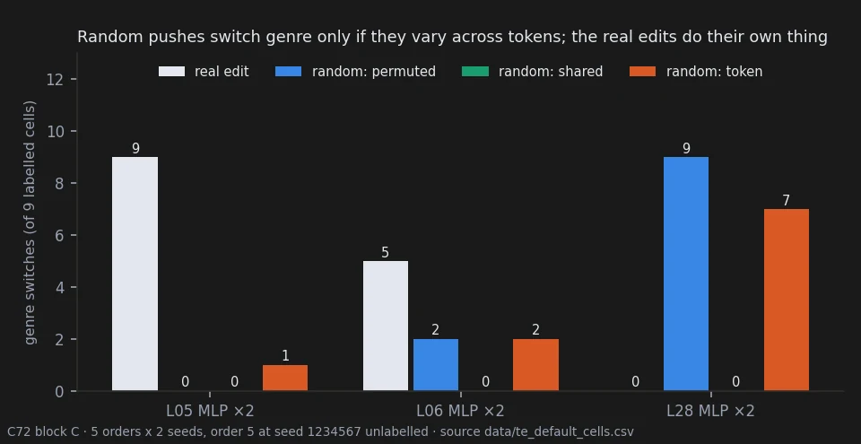
So size alone does not decide where a strong edit goes; each edit's direction does, and why each points where it does is not known. One untested reason a shared shift may be harmless: the image model's text path normalises what it receives, which could absorb an offset common to every token.
Every character has its own fallback
C73 repeated the no-style test on the seven portraits of page 28 and C65, removing only "Western comics style" from their frame, at four seeds. With the clause all 28 pictures are Western comic; without it, the same faces and costumes come back as paintings or realistic renders, and only one picture of 28 is anime. The fallback depends on the character (pre-registered H1, supported).
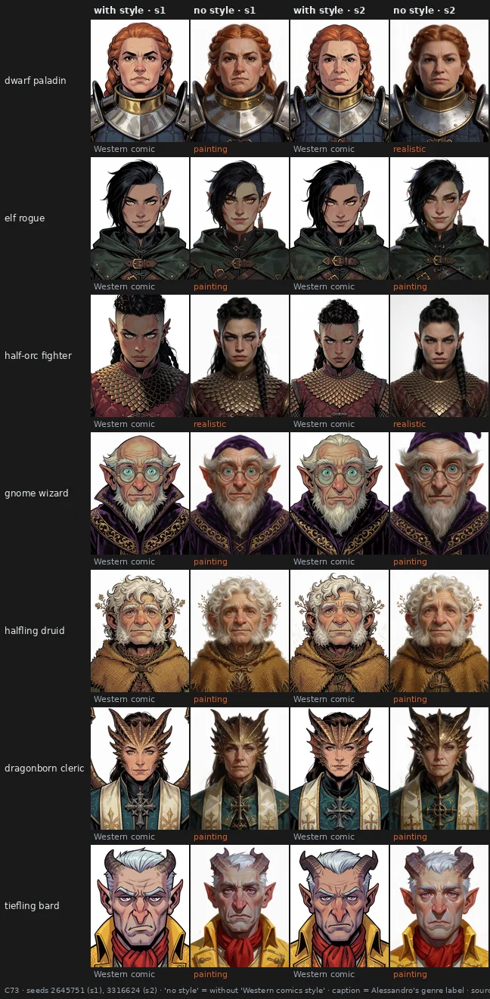
Do the edits lead each character to that fallback? No (H2, not supported): switched pictures land on the character's own fallback 0.28 of the time, as often as chance (0.27). What they show instead is a destination per edit, across characters: L06 MLP doubled gives realistic renders, L14 cartoons, L26 and L28 leave the comic alone, others spread. Elves bend several edits toward anime: the elf rogue, whose own fallback is painting, switches to anime in 10 of its 12 switched pictures.
What each phrase draws alone
The same pass rendered each of the 36 phrases of the elf prompt alone, plus a few words, at four seeds. Described, not tested: * "female dwarf" is drawn as a woman with a beard in 4 of 4, and so is the full dwarf prompt. The beard that appears on the dwarf under edits is the model's own picture of a dwarf, not something the edit invents. * "uniform" is an anime girl in a school uniform in 4 of 4. * "realistic western comics style" alone draws bearded cowboys in comic panels: the model reads "western" as the genre of the American West. * The elf's description ("female antlered elf brawler") is anime in 3 of 4. * Phrases without a person are mostly drawn as realistic photographs (78 of 165 labelled single-phrase pictures).
A dose ladder
C74 rendered three MLP edits at twelve doses (0.10 to 1.00) on three portraits at two seeds: L06 (to realistic), L14 (to cartoon) and L28 (keeps the comic, the control). The full-dose render was re-made first and is pixel-identical to the C65 one. For each strip I answered, side by side, where the style starts to differ, whether it moves gradually or in a step, whether the intermediate pictures head toward the full-dose one, where the picture loses coherence and where it loses a trait the prompt asks for. Before labelling I fixed the definitions (amendment 2): a hybrid that reads as one intended style, such as comic lines with painted textures, is a change of style, not a loss of coherence.
| test (L06 and L14, 11 changing strips) | value | rule | verdict |
|---|---|---|---|
| H1 — gradual rather than a step | 8 of 11 = 0.73 | ≥ 0.6 | gradual* (pooled) |
| H2 — intermediate doses head toward the full dose | 10 of 11 = 0.91 | ≥ 0.7 | supported |
| H3 — style changes before coherence is lost | 11 of 11 | ≥ 2/3 | supported |
*The pooled H1 hides two behaviours. L14 slides toward cartoon in 6 of 6 strips. L06 jumps from comic to photograph around 0.80 in 4 of 5. And H3 is met in the simplest way: I marked no loss of coherence anywhere.
What the ladder shows beyond the tests (reported, not tested):
- The style holds for most of the range. No strip changes style below 0.70. Since the edit scales three matrices of the MLP, the layer's output at 0.70 is, by my estimate of (1 + d)³, already several times the original.
- The character goes first. In my free-text notes, a trait was lost before the style changed in 5 of 10 L06/L14 strips and at the same dose in 2. Those notes mixed traits the prompt asks for with features it does not name, and were not blind; C75 measured this properly (next section).
- Composition moves smoothly. In all 18 strips pose and framing change little from one dose to the next, even where the style jumps.
What the edit costs the character
C75 turned the C74 notes into a blind test. Every phrase of the three prompts became a yes/no question ("Is the hair copper-coloured?", "Are there lower tusks jutting past the lips?"), two common ones were added (frontal close-up, white background), and two questions compare with the original: is the skin the same colour, and could it be the same character drawn by another artist. The page asks one question over every picture of a character, shows no dose, edit or seed, and repeats some pictures to measure consistency.
Part A (my labels, the 222 pictures of the C74 ladder). Retention, the share of the original's traits still present, falls with dose under L06 and L14 and barely moves under L28.
| test (pre-registered) | value | rule | verdict |
|---|---|---|---|
| T1 — retention falls with dose | median Spearman -0.89, 18 strips | ≤ -0.50 | supported |
| T2 — traits go before the style (L06, L14) | 11 of 11 strips | ≥ 2/3 | supported |
| T3 — L28 costs traits without changing style | -0.07 | ≤ -0.15 | inconclusive |
| T4 — skin changes go lighter | 52 of 53 | ≥ 0.80, 2 of 3 characters | supported |
| reliability on repeats | kappa 0.93 | ≥ 0.60 | passed |
T2 compares a blind measure made of many questions with a single style judgement made without blinding, so it leans toward the traits by construction. With a stricter onset (about two traits lost), traits still go first in 8 of 11 strips, style first in 1 (exploratory).
What goes first are expressions and judgements of degree (the elf's smirk, androgyny, the dwarf's age), then race and costume: the half-orc stops reading as a half-orc at 0.60, then loses her knot, undercut and collar; the dwarf loses her braids and her armour. The elf's pointed ears are never lost.
Part B2, the control. A second labeller, who had seen none of these pictures and did not know what the study is about, labelled the real edits at 0.70, 0.85 and 1.00 next to random pushes of the same size (C72's node, token and permuted variants), plus the unedited portraits at eight seeds.
| test (pre-registered) | value | rule | verdict |
|---|---|---|---|
| B1 — random minus real retention, 36 matched cells | +0.18 (token +0.20, permuted +0.17) | ≥ +0.15, both variants alike | the edit costs more than its size |
| reliability on her repeats | kappa 0.98 | ≥ 0.60 | passed |
| agreement with my labels, shared pictures | kappa 0.85 | reported | — |
The pooled verdict is carried by L06 and L14. L28 goes the other way: its real edit keeps the character better than random pushes of its size, as it kept the comic in C72. So the cost is a property of each edit's direction. Under the real edits, skin changes go lighter in 14 of 14; random pushes change the skin in 6 of 108 pictures. The unedited model never draws five asked traits at any of eight seeds (the dwarf's scars, the half-orc's tusks, dirt and snarl); leaving them out changes no verdict. The two labellers disagree most on whether the dwarf "reads as a dwarf" (8 of 14).
Layer 0 switched off
C77 replicated a page of the C64 pilot notes: with the MLP of layer 0 switched off, the elf came out as text. I switched off the attention or the MLP of layer 0 on three new prompts at the same seed, after re-rendering the C64 elf (pixel-identical). The rule, fixed before the renders, asked for readable text in at least 5 of 6 pictures: it got 4.
| prompt (seed 1618033) | attention off | MLP off | whole layer off (exploratory) |
|---|---|---|---|
| elf, comic (C64) | text | text | noise |
| dwarf, comic | text | tiled pattern | noise |
| dragonborn, comic | text | tiled pattern | noise |
| dwarf, watercolour | text | text over a face | noise |
On the encoder side (data/te_layer0_encoder_summary.csv), with half the layer off the conditioning keeps a normal
size (0.98x and 0.84x on average over the twelve readings) and the identity of each token (a logit lens recovers it in
52 % and 62 % of positions, 51 % unedited). With the whole layer off its size is 21.7x on average, 62x at L05, and no
token is recovered. My reading, not tested: the picture writes the prompt when the conditioning keeps the words at a
normal size but has lost part of what layer 0 adds to them. No experiment varies the two separately.
There is a precedent on a different encoder. In Stable Diffusion 1.x, causal tracing places the CLIP text encoder's knowledge of styles, objects and facts in its first self-attention layer, at the last token of the subject, and a closed-form edit of that layer removes a concept (README, ref. 31). The same authors found that this localisation does not carry over to SD-XL or DeepFloyd (ref. 20). Here, switching off the attention of Qwen3-VL's first layer is the condition that writes text in 4 of 4 prompts. Whether this is the same property of first layers, on a 4-billion-parameter language model instead of CLIP, is not tested.
Punctuation, BREAK and labels
C78 asked whether the separators between the parts of a prompt matter, on two prompts with four characters each
(a prison break and a totem), eight seeds, seven versions. Before the pilot I fixed twelve yes/no questions per prompt;
I answered them blind to version and seed (data/te_punct_alessandro.csv, 2,640 answers, repeats kappa 0.954).
| version | errors per picture | against the original | better / worse / tied (16 pairs) | verdict |
|---|---|---|---|---|
| original | 1.50 | |||
| commas | 1.44 | -0.06 | 5 / 4 / 7 | no difference |
| periods | 1.31 | -0.19 | 4 / 1 / 11 | no difference |
| semicolons | 1.31 | -0.19 | 6 / 3 / 7 | no difference |
| no punctuation | 1.75 | +0.25 | 2 / 6 / 8 | no difference |
| no "Character N" labels | 1.69 | +0.19 | 1 / 3 / 12 | no difference |
| BREAK | 7.00 | +5.50 | 0 / 16 / 0 | worse |
With BREAK no picture has all four characters, and the catfolk is never humanoid. The errors left in the other
versions are omissions the model makes in every version (the elf's blue sparks: 0 of 8 everywhere). Questions chosen
after the pilot, which decide nothing, show one more thing: without the labels two leaks between characters disappear
(the orc's green on the elf's fist, the orc's folded arms on the tiefling), but the totem's catfolk becomes an
ordinary cat in 7 of 8. On the encoder side, the separator changes how alike the tokens of one part are by less than
0.001 (data/te_punct_encoder_summary.csv).
Inside the text encoder
A probe that only reads (no picture), on 16 prompts, measures how much each of the 36 layers writes into the
encoder's internal signal, relative to the size of the signal it receives (data/te_residual_probe_summary.csv).
| layers | size of the signal after the layer | what the layer writes, relative to what it receives |
|---|---|---|
| 0 | 12.6 → 106.9 | 8.5 |
| 1-5 | 186 → 398 | 0.47-1.23 |
| 6 | 398 → 13,107 | 33.8 (almost all of it from the MLP) |
| 7-33 | 13,108 → 14,136 | 0.012-0.080 |
| 34-35 | 12,768, then 6,606 | 0.24, 0.65 |
Described, not tested. L06 doubled is the edit that turned the portraits into realistic renders (11 of 14 in C73) and jumped from comic to photograph in the dose ladder (C74). Whether it is destructive because it writes so much is the next question on the roadmap.
Which taps carry the damage
The image model reads twelve taps of the text encoder: the internal signal entering layers 2, 5, 8, …, 35
(txtfusion normalises them and mixes them before the image model sees them). An edit to layer 6 changes taps 2-11;
an edit to layer 14 changes taps 5-11; L28, the edit that keeps the comic and the character, changes only taps 9-11.
So: does the damage of L06 and L14 travel through the early and middle taps (0-8), or through the late ones (9-11),
where L28 is harmless?
C79 computed the edit's push on the conditioning and let it through only on some taps: the next two (L06) or the
next one (L14), the early and middle ones, the late ones. Kept on all twelve, the push reproduces the full edit
pixel for pixel; the two halves add up to it exactly. Three characters, four seeds, 72 renders, 108 showings labelled
blind with C75's questions, one at a time (data/te_tap_alessandro.csv).
| test (pre-registered) | value | rule | verdict |
|---|---|---|---|
| 1 — early and middle taps cost more traits than late ones | 0.212 against 0.066, +0.146; 5 of 6 pairs | ≥ +0.15 and 5 of 6 | inconclusive |
| 2 — the taps right after the layer are enough, L06 | 0.014 / 0.296 = 0.05 | ≥ 0.70 enough, ≤ 0.30 not | not enough |
| 2 — the same, L14 (one tap) | 0.000 / 0.128 = 0.00 | same | not enough |
| 3 — automatic distances agree (DINOv2 / CSD) | 15 of 24 / 3 of 24 cells | ≥ 18 of 24 | no / opposite |
| reliability on repeats | kappa 1.00 | ≥ 0.60 | passed |
Trait loss on the two seeds where the full edit exists:
| edit | next taps | early and middle | late | the two halves summed | full edit |
|---|---|---|---|---|---|
| L06 | 0.01 | 0.31 | 0.07 | 0.37 | 0.46 |
| L14 | 0.00 | 0.12 | 0.03 | 0.16 | 0.38 |
Reported, not tested: under L14 the full edit lightens the skin in 4 of 6 pictures and changes the person in 6 of 6, the half-tap pictures in 0 of 24. Under L06 the early and middle taps lighten it in 6 of 12 and change the person in 6 of 12, the late ones in 4 of 12 and 1 of 12. By CSD the late taps move the pictures more (21 of 24 cells); under L06, DINOv2 and VQAScore move more with the early ones: a hint that the late taps carry rendering and the early ones content, from a measure (CSD) that C66 did not validate for style.
Diffusion Lens, which renders images from the intermediate layers of text encoders, finds simple and common concepts early and relations, colour bindings and rare concepts late, built gradually in a T5 encoder (README, ref. 21). The C79 result, damage that needs many readings at once and halves that fall short of the whole, fits a gradual build-up better than a single locus. C87 tests it tap by tap.
Reproducing this
model:
checkpoint: krea2_turbo_bf16.safetensors
weight_dtype: default
sha256: not recorded — the file is outside the repository
sampling:
sampler: euler_ancestral
steps: 9
cfg: 1.0
denoise: 1.0
scheduler: simple
resolution: 1024x1280
vae: qwen_image_vae.safetensors
text_encoder: qwen3vl_4b_bf16.safetensors (CLIPLoader type krea2)
tuner:
node: ArthemyKrea2CLIPTuner
version: not recorded — the tuner is a separate repository
mode: Real Value; one layer half through granular_json (layers.L.self_attn.{q,k,v,o}_proj.weight or layers.L.mlp.{gate,up,down}_proj.weight), weight x (1 + d)
prompts:
files: [data/te_pilot_plan.csv, data/te_characters_plan.csv, data/te_bridge_plan.csv, data/te_default_plan.csv, data/te_fallback_plan.csv, data/te_dose_plan.csv, data/te_traits_plan.csv, data/te_layer0_plan.csv, data/te_punct_plan.csv, data/te_punct2_plan.csv, data/te_punct_nopunct_plan.csv, data/te_tap_isolation_plan.csv]
ids: [P1_elfbrawler, V1_Original, V2_SubjectFirst, V3_BGFirst, V4_ActionFirst, V5_Inverse, D1_dwarf_paladin, D1W_dwarf_paladin_watercolor, E2_elf_rogue, G5_gnome_wizard, H3_halfling_druid, O4_halforc_fighter, R6_dragonborn_cleric, T7_tiefling_bard, "V1-V5 without the style clauses (C72)", EMPTY, W00-W42 (C72 single phrases), "the seven portraits without 'Western comics style' (C73)"]
seeds: [1618033, 1234567, 2645751, 3141592, 3316624, 2718281, 3605551, 4123105]
conditions:
- name: one layer half of the text encoder, d = -1.00 (zeroed) or +1.00 (doubled); C64 also at ±0.10 and ±0.35
dose: 1.000
measured_D: not measured; the dose is a per-matrix gain, not a calibrated displacement
- name: C74 dose ladder, MLP of L06, L14, L28 at d = 0.10, 0.25, 0.40, 0.50, 0.60, 0.70, 0.75, 0.80, 0.85, 0.90, 0.95, 1.00
dose: 0.10-1.00
measured_D: not measured; the dose is a per-matrix gain, not a calibrated displacement
- name: C77 layer 0 attention, MLP or all seven matrices x 0
dose: -1.00
measured_D: not measured
- name: C79 push of L06 or L14 MLP doubled, restricted to taps (2,3 or 4,5), 0-8 or 9-11 (Krea2ConditioningPush, variant taps)
dose: 1.000
measured_D: per-tap push norms in data/te_tap_isolation_encoder_by_tap.csv
outputs:
folders: [benchmark_te_pilot, benchmark_te_characters, benchmark_te_bridge, benchmark_te_default, benchmark_te_fallback, benchmark_te_dose, benchmark_te_traits, benchmark_te_layer0, benchmark_te_layer0_block, benchmark_te_punct, benchmark_te_tap_isolation]
manifests: [data/te_pilot_plan.csv, data/te_characters_plan.csv, data/te_bridge_plan.csv, data/te_default_plan.csv, data/te_fallback_plan.csv, data/te_dose_plan.csv, data/te_traits_plan.csv, data/te_layer0_plan.csv, data/te_punct_plan.csv, data/te_punct2_plan.csv, data/te_punct_nopunct_plan.csv, data/te_tap_isolation_plan.csv]
encodes_without_images: [benchmark_te_conditioning (C67, 721), benchmark_te_regions (C68, 241), benchmark_te_direction (C71, 16)]
analysis:
scripts: [experiments/te_pilot_phase1_tally.py, experiments/te_characters.py, experiments/te_conditioning.py, experiments/te_regions.py, experiments/te_bridge.py, experiments/te_genre_tally.py, experiments/te_genre_dose_tally.py, experiments/te_direction.py, experiments/te_size_within_type.py, experiments/te_default.py, experiments/te_default_tally.py, experiments/te_fallback.py, experiments/te_fallback_tally.py, experiments/te_dose.py, experiments/te_dose_tally.py, experiments/te_traits.py, experiments/te_traits_page.py, experiments/te_traits_tally.py, experiments/te_traits_explore.py, experiments/te_traits_explore_B2.py, experiments/te_layer0.py, experiments/te_layer0_block.py, experiments/te_layer0_encoder.py, experiments/te_punct.py, experiments/te_punct2.py, experiments/te_punct_page.py, experiments/te_punct_tally.py, experiments/te_punct_encoder.py, experiments/te_residual_probe.py, experiments/te_tap_isolation.py, experiments/te_tap_isolation_page.py, experiments/te_tap_isolation_tally.py]
produces: data/te_conditioning_tests.csv, data/te_regions_tests.csv, data/te_bridge_readings.csv, data/te_bridge_style.csv, data/te_genre_tests.csv, data/te_genre_dose_tests.csv, data/te_direction_tests.csv, data/te_dose_tests.csv, data/te_traits_tests.csv, data/te_traits_B2_tests.csv, data/te_layer0_encoder_summary.csv, data/te_punct_tests.csv, data/te_punct_encoder_summary.csv, data/te_residual_probe_summary.csv, data/te_tap_tests.csv, data/te_tap_isolation_metrics.csv
Provenance
- Renders: C64 pilot (463), C65 characters (531), C69 bridge (25), C72 defaults (280), C73 fallbacks (29), C74 dose ladder (199, gate included), C75 random pushes and plain portraits (122, gate included), C77 layer 0 (7, gate included), C77 whole layer off (4), C78 punctuation (181, gates and pilots included), C79 taps (76, four gates included).
- Encodes without images: C67 (721), C68 (241), C71 (16); the 36-layer probe (16 prompts, read only).
- Pre-registrations:
docs/prereg_te_characters.md(+ amendments 1-3),docs/prereg_te_conditioning.md(+ amendments 1-2),docs/prereg_te_regions.md,docs/prereg_te_bridge.md,docs/prereg_te_genre.md(+ amendments 1-2),docs/prereg_te_direction.md,docs/prereg_te_default.md(+ amendments 1-2),docs/prereg_te_fallback.md,docs/prereg_te_dose.md(+ amendments 1-2),docs/prereg_te_traits.md(+ amendments 1-4),docs/prereg_te_punct.md(+ amendments 1-6),docs/prereg_te_tap_isolation.md(+ amendment 1; not committed before the renders, file times only); C77's rule is in the docstring ofexperiments/te_layer0.py, committed before its renders; the pilot plandocs/plan_te_pilot.md. - Result documents:
docs/te_pilot_phase1_result.md,docs/te_characters_result.md,docs/te_characters_eye_result.md,docs/te_order_grid_result.md,docs/te_conditioning_result.md,docs/te_regions_result.md,docs/te_bridge_result.md,docs/te_genre_result.md,docs/te_direction_result.md,docs/te_default_result.md,docs/te_fallback_result.md,docs/te_dose_result.md,docs/te_traits_result.md,docs/te_layer0_result.md,docs/te_punct_result.md,docs/te_tap_isolation_result.md. - Data:
data/te_pilot_eye_alessandro_phase1.csv,data/te_order_grid_notes_alessandro.csv,data/te_order_tests.csv,data/te_size_within_type.csv,data/te_genre_alessandro.csv,data/te_genre_dose_alessandro.csv,data/te_bridge_style.csv,data/te_direction_by_edit.csv,data/te_direction_norms.csv,data/te_default_genre_alessandro.csv,data/te_default_cells.csv,data/te_default_tests.csv,data/te_words_alessandro.csv,data/te_massive_channels.csv,data/te_fallback_genre_alessandro.csv,data/te_fallback_tests.csv,data/te_fallback_by_edit.csv,data/te_dose_alessandro.csv,data/te_dose_tests.csv,data/te_traits_questions.csv,data/te_traits_key_A.csv,data/te_traits_alessandro.csv,data/te_traits_by_picture.csv,data/te_traits_tests.csv,data/te_traits_explore.csv,data/te_traits_key_B2.csv,data/te_traits_B2_rater2.csv(second labeller),data/te_traits_B2_by_picture.csv,data/te_traits_B2_tests.csv,data/te_traits_B2_explore.csv,data/te_layer0_encoder_by_tap.csv,data/te_punct_questions.csv,data/te_punct_key.csv,data/te_punct_alessandro.csv,data/te_punct_by_picture.csv,data/te_punct_secondary.csv,data/te_residual_probe_by_prompt.csv,data/te_tap_isolation_encoder_by_tap.csv,data/te_tap_isolation_txtfusion_weights.csv,data/te_tap_key.csv,data/te_tap_schedule.csv,data/te_tap_alessandro.csv,data/te_tap_by_picture.csv,data/te_tap_isolation_cells.csv. - Labels and keys were committed in the order the protocols require: key before labels, labels as downloaded before any count.
- Probes:
tools/comfyui_krea2_probe(conditioning),tools/comfyui_krea2_attnprobe(attention; reads only, checked pixel-identical on all 25 renders),tools/comfyui_krea2_condpush(random pushes; gate pixel-identical; itstapsvariant, used in C79, reproduces the full edit pixel for pixel when all twelve taps are kept).
Holds825 renders · 15 prompts · 9 seeds · pre-registered · 2026-10-20
What a text-encoder edit leaves — a curve, a signature, a family resemblance
The direction I'm chasing. Page 30 showed that an edit of the text encoder changes what the picture is, not its surface. If that's going to be a tool, an edit has to be a knob: something with a shape I can calibrate, that does the same thing every time I turn it, and that I could recognise by its look. I also suspected that any fixed change of the weights, even a random one, would behave like that.
What would kill it. An edit whose push changes shape from prompt to prompt; pictures that the eye cannot sort by the edit that made them better than chance; a change that stays with one subject and does not carry to another.
Where we are. An edit is a knob with a recognisable look: I sorted pictures by the edit that made them in 20 of 28 trials, where chance gives about 2. Across subjects the look carries as a family resemblance, not the same change, and that verdict leans on an answer, "something similar", that I asked for in the middle of the blind pass. And the embeddings that were meant to measure "the same change" for me turned out not to see it.
In two minutes
I started from the conditioning, the list of numbers the text encoder hands to the image model. When I turn up an edit, the conditioning moves. I followed that movement step by step, from a tiny dose to ten times the full one, and asked what shape it draws. A spiral? A wave? A straight line? None of them: one bend near the start, then a straight run. A random push of the same size at the same place bends too, so the bend belongs to the network. But how much it bends belongs to the edit: on six very different prompts, a comic portrait, a rally car, a dreamlike canoe, a comic page, a cartoon still life and a macro leaf, each edit's curve changes by at most 7 degrees. One curve per edit, any prompt.
Then I drew that curve for all 35 layers. The deeper the layer, the less it bends. In the first third of the encoder an edit bends exactly like a random push: there it carries no direction of its own beyond the network's. From the middle on it is straighter than chance, and more so with depth.
Next, a suspicion about L06, the edit that turns my comic portraits into photographs. Inside the encoder a few entries of the signal are enormous, the so-called massive activations, and layer 6 is where they appear. Is the damage carried by them? I put those 36 entries back to their original value and left the rest of the edit in place: the damage stays. Change only those entries and the picture comes back. It's not them.
Then I tried to use the curves to compare layers fairly: every edit pushed to the same change of the conditioning. It backfired in an instructive way. At the same push, early layers break or redraw the picture, and deep layers leave it almost untouched. The image model listens to some parts of the conditioning much more than to others, so a push on the conditioning is not a common currency. From then on I calibrated on the picture.
With the picture as the yardstick, I came back to my suspicion: any fixed change of the weights, even a random one, should change the pictures of a prompt the same way, seed after seed. Claude read the first pictures the other way: three different random pushes at layer 26 seemed to age the paladin and turn the teapot into a kettle all alike, so the network would be choosing the direction. I labelled it blind, with content and style asked apart. One fixed random push changes the content the same way across seeds almost every time; three different ones mostly don't. Each perturbation leaves its own change.
Does it carry to another subject? I calibrated four perturbations on eight subjects, four comic portraits and four pictures in other styles, so that each moved its picture by about the same amount, and asked whether groups of four changed the same way. Rarely the same. But "something similar" came up again and again, and I asked for that answer in the middle of the pass because the two I had didn't fit what I saw: more exaggerated features, more flatness, textures picked out, "more comics". The resemblance crosses style domains: groups mixing portraits with a rally car or a leaf scored as high as groups of portraits.
The last test was my own proposal, and the one I like best. Five pictures of one prompt: two made with one edit, two with another at the same two seeds, one with a third edit. Nobody tells you which is which, and the tempting answer is to pair the pictures that share a seed, because they share the composition. I found the right groups in 20 of 28 trials, where guessing gets one in 15, and I never once grouped by seed. It worked for text-encoder edits, for random pushes and for my old image-model presets alike. An edit leaves a signature you can see.
The verdict
Holds (C93, C100): an edit's push bends once; the bend is the network's, its size the edit's, the same on six prompts within 7 degrees. Holds (C101): deeper layers bend less (Spearman -0.655). Overturned (C101): the edit straighter than a random push at every layer; only from the middle on (24 of 35). Holds (TEP2): L06's damage does not travel through the massive activations. Open (C102): at equal push on the conditioning, deep edits barely move the picture (23 of 24). Ambiguous (C102): deep edits carry a direction of their own; the test was not fair. Holds (C106): the eye sorts pictures by the perturbation that made them, 20 of 28 against chance 1/15, never by seed. Ambiguous (C103, C104): different random pushes at one layer change content differently; the eye says yes, the embeddings disagree. Holds (C105): across subjects a fixed perturbation gives a family resemblance, across style domains too, by a "something similar" added during the pass. Open: embedding cosines do not track "the same change".
Why I might be wrong
One observer, who knows the material. Every blind label on this page is mine. Conditions were hidden and orders random, but I had seen many of these pictures before, and the image-model presets of C106 are my own. I also knew the hypothesis I was testing: I proposed two of these tests. Test-retest was perfect or nearly (4 of 4 in C106, 6 of 6 in C104, 6 of 6 and 5 of 6 in C105), which says I was consistent, not that I was uninfluenced.
The transfer verdict leans on an answer added mid-way. In C105 I asked for "something similar" during the blind pass, and the rule then scored it as half. Without it, too few units are left to decide. What the page claims is therefore a family resemblance, and nothing stronger. The edits passed by a small margin.
The curves are of the conditioning, not of the picture. C93, C100 and C101 are encodes without images, averaged over tokens. C102 showed that the picture does not respond equally to every part of the conditioning, so a curve says how the push moves, not how the picture will.
A mirror I didn't see coming. Scaling the four attention matrices by (1 + d) gives back the original attention at d = -2 and the same attention at d = -3 as at d = +1. Every negative attention curve past -1 is that symmetry, not a behaviour, and part of C100's "whole layer 6, negative" was too. It is reported and corrected, not removed.
Small groups. C105 has six to eight units per cell and two test seeds; C106 has 28 trials; TEP2 is one edit, three characters, two seeds. One direction per random push.
The measure that failed. C102 and C103 first measured "the same change" with the cosine between embedding change vectors. Checked against my labels, it barely tells "same" from "different" (pitfall 94). The computed halves of those tests are withdrawn; the blind halves stand.
The data
One bend, sized by the edit
C93 followed the push of five edits on three characters along the dose, against random pushes injected at the same place (3,744 trajectories over tokens and taps). At the level of the whole conditioning, every MLP edit turns 45-77 degrees from the smallest to the largest dose, in one direction, almost in a plane, with nearly all the turning at small push length; the random pushes turn 66-88 degrees, less cleanly. None of the four shapes asked (straight, spiral, wave, clip, plus accelerating) fits: "other", one bend, in 9 of 9 edits and 9 of 9 controls.
C100 (60 trajectories, six prompts, doses up to 10) asked whether the shape is the prompt's or the edit's. Rule 1: one bend in 18 of 18 edits and 18 of 18 controls. Rule 2: the total turn of each edit and sign varies by 2-7 degrees over the six prompts, at most 15 in 10 of 10. Median total turn at positive doses: L28 MLP 50.1, L06 MLP 72.6, L14 MLP 80.5, whole layer 6 82.1, the three MLPs together 84.8 degrees. Positive doses from 4 to 10 add nothing new at the whole level; the whole layer 6 leaves the fp16 range at d = 10 for the dwarf (amendment 1).
Past the sign flip the push turns sharply: 22 single-tap clips, all at negative doses. For L06 MLP between -0.8 and
-0.9, where its matrices are scaled by 0.2 and 0.1 and the push length jumps tenfold in one step. For the whole layer 6
between -1.5 and -2, which is in part the attention mirror described above. Details in docs/te_shapes2_result.md.
Deeper layers bend less
C101 drew the curve of the MLP and of the attention at every layer, with a random control for the MLP (140
trajectories, gates against C93 at relative error 0). Rule 1: Spearman -0.655 between layer and total turn,
permutation p 0.0002. Rule 2: the edit bends less than its control in 24 of 35 layers. Layer 34's control is straight
(6 degrees): a push added at the last edited layer reaches the only tap left with no layer in between, so it cannot
bend, which is what the controls are for. Attention bends a little less than the MLP (median 60 against 65 degrees).
The attention curves past -1 are the algebraic mirror: push length at d = -2 below 1e-5 at every attention layer, and
the push at -3 equal to the push at +1. Details in docs/te_shapes_layers_result.md.
Not the massive activations
TEP2 rendered L06 MLP doubled from saved conditionings (the file route of the conditioning-push node) in five
versions: the original (C0), the full edit (C1), the edit with the 36 massive entries at the output of layer 6 put back
(C2), only the massive change kept (C3), and 36 random entries put back as a control (C4). Per cell, f = DINOv2
distance of X to the original, divided by that of C1.
| character | seed | C2 | C3 | C4 |
|---|---|---|---|---|
| dwarf | 2645751 | 1.00 | 0.03 | 1.00 |
| dwarf | 3316624 | 0.96 | 0.02 | 0.97 |
| elf rogue | 2645751 | 0.69 | 0.05 | 0.61 |
| elf rogue | 3316624 | 1.41 | 0.12 | 0.96 |
| half-orc | 2645751 | 0.98 | 0.08 | 0.98 |
| half-orc | 3316624 | 1.00 | 0.04 | 1.09 |
The one cell under 0.80 also drops for the control: it moves whenever anything is restored. On the encoder side the 36
massive entries sit on one token; putting them back keeps about all of the push (cosine 0.97 with the full push). The
damage is in the ordinary entries, spread over the tokens. The file route is not bit-identical to the in-graph render
(amendment 1, a 5 % tolerance; a ComfyUI update is the likely cause, not verified). Details in
docs/te_massive_result.md.
Equal push, unequal pictures
C102 matched four MLP edits (L04, L09, L26, L30) and random pushes at L09 and L26 to the same relative change of the whole conditioning, at two levels anchored on L06 (its push at d = 0.5 and d = 1), on four prompts and three seeds (156 renders). Every target was reached within 1 %. The deep layers needed smaller doses than L06 (L26 about 0.40 and 0.80, L30 about 0.35 and 0.70). Deep moved the picture less than early in 23 of 24 cells.
The question it was built for, whether deep edits change the three seeds in a direction of their own while early edits
follow the network, could not be answered: the computed rule came out mixed and the blind one at -0.04, but the deep
pictures had barely moved. My notes say so for most deep units: too little change to tell. The random push at L09
changed the seeds as consistently as the L09 edit (blind 0.71 against 0.62). Details in
docs/te_depth_control_result.md.
Each perturbation leaves its own change
C103 recalibrated on the picture: every perturbation pushed to a DINOv2 distance of 0.30 on a calibration seed (132 calibration and 96 test renders), with three different random pushes per layer (seeds 9393, 9394, 9395) next to the L09 and L26 edits. The comic page never reached the target at layer 9. R09a was under-matched (0.13). The blind and the computed rules disagreed at both layers.
C104 split the blind question in two, content and style, on the same pictures (55 units):
| question | layer 9 | layer 26 |
|---|---|---|
| one fixed random push, three seeds, content the same | 1.00 (n 5) | 0.92 (n 12) |
| one fixed random push, three seeds, style the same | 0.67 (n 6) | 0.50 (n 12) |
| three random pushes, one seed, content the same | 0.00 (n 9) | 0.25 (n 12) |
| three random pushes, one seed, style the same | 0.56 | 0.25 |
The two real edits: content the same across seeds in all their units at both layers. Claude's reading of C103,
content from the network and rendering from the perturbation, was not supported at either layer. Details in
docs/te_depth_control2_result.md and docs/te_content_style_result.md.
A family resemblance across subjects
C105 took two real edits (L14, L26) and two random pushes (at L09, L26) and calibrated each on eight subjects, so that it moved each picture by a DINOv2 distance of about 0.25 on two calibration seeds (342 calibration renders, 74 test renders at two other seeds). 29 of 32 pairs were reachable; 28 of 29 landed in the matched window (amendment 1). Each blind unit showed four subjects, before and after, with two questions: is the change of content of the same kind in the four pairs, and the change of style?
| content | within a domain | across domains | control, different perturbations |
|---|---|---|---|
| real edits | 0.38 (n 8) | 0.50 (n 6) | 0.06 (n 8) |
| random pushes | 0.56 (n 8) | 0.58 (n 6) | 0.06 (n 8) |
Style travels less: real edits 0.19 and 0.25, random pushes 0.44 and 0.25, control 0.00. Of 36 content answers, 3 were "the same", 23 "something similar", 10 "different". My notes name the resemblance: features exaggerated, more flatness, textures picked out, more comics, a sharper division between elements, often with one subject out of the group.
On image-model presets, an earlier test found that a structured preset keeps its direction inside a style domain and
loses it across (docs/prereg_domain_specificity.md, 2026-09-25, replication pending). Text-encoder
perturbations don't show that boundary. Details in docs/te_domain_transfer_result.md.
Two pairs and an odd one
C106 needed no new renders: 16 trials from C103's text-encoder pictures and 12 from the stage-5 image-model presets of September (seeds 42, 777, 1337, 9999, 4242145; prompts G1-G6), plus 4 repeats. In each trial the seeds were chosen so that grouping by seed was the wrong answer.
| exact grouping | chance | p | |
|---|---|---|---|
| all trials | 20 of 28 (0.71) | 1/15 | 5.5e-18 |
| text encoder | 11 of 16 (0.69) | 1/15 | 3.7e-10 |
| image-model presets | 9 of 12 (0.75) | 1/15 | 4.8e-09 |
Grouped by seed: 0 of 28. Single picture found: 20 of 28 (chance 1/5); pairs correct: 45 of 56. By kind of pair: presets
of different families 6 of 9, the same preset at another sign or strength 3 of 3, a text-encoder edit against a random
push 2 of 2, two random pushes of the same layer 4 of 7. Exploratory: the failures cluster on random pushes at layer 26
(two trials made only of them, both failed), and every trial containing the L26 edit succeeded. Details in
docs/odd_one_out_result.md.
What the embeddings missed
For every C104 unit I had an answer, same or different, and a computed number: the mean cosine between the DINOv2 (or CSD, for style) change vectors of the pictures in it. If the cosine tracked what I see, it would separate the two answers well. It does not: AUC 0.64 for DINOv2 on content, 0.36 for CSD on style, below chance. A cosine between change vectors likely carries a part shared by any change, more realistic, more detailed, which makes different perturbations look alike. This was computed after the rules (pitfall 94). For questions of "the same change", the measure here is the eye.
Reproducing this
model:
checkpoint: krea2_turbo_bf16.safetensors
weight_dtype: default
sha256: not recorded — the file is outside the repository
sampling:
sampler: euler_ancestral
steps: 9
cfg: 1.0
denoise: 1.0
scheduler: simple
resolution: 1024x1280
vae: qwen_image_vae.safetensors
text_encoder: qwen3vl_4b_bf16.safetensors (CLIPLoader type krea2)
tuner:
node: Krea2ConditioningPush (tools/comfyui_krea2_condpush), variant file; conditionings encoded in the ComfyUI venv by the experiment scripts
version: not recorded — the node is in this repository
mode: one MLP or attention half of a text-encoder layer, weight x (1 + d); random pushes as per-token random unit directions (seeds 9393, 9394, 9395) x alpha x the per-token norm of the unedited MLP output
prompts:
files: [data/te_massive_plan.csv, data/te_depth_control_plan.csv, data/te_depth_control2_plan.csv, data/te_domain_transfer_plan.csv, data/odd_one_out_key.csv]
ids: [D1_dwarf_paladin, E2_elf_rogue, O4_halforc_fighter, G5_gnome_wizard, S1_rally, C4_stilllife, P2_lotuscanoe, P5_comic_panels, LN, "G1-G6 (stage 5, C106 only)"]
seeds: [2645751, 3316624, 2718281, 1618033, 42, 777, 1337, 9999, 4242145]
conditions:
- name: C93, C100, C101 dose curves of the conditioning (no renders), d 0.05 to 10 and -0.05 to -3
dose: 0.05-10
measured_D: not applicable; trajectories in data/te_shapes_trajectories.csv, data/te_shapes2_trajectories.csv, data/te_shapes_layers_trajectories.csv
- name: TEP2, L06 MLP doubled with the 36 massive entries restored (C2), alone (C3), 36 random entries restored (C4)
dose: 1.000
measured_D: data/te_massive_metrics.csv
- name: C102, L04, L09, L26, L30 MLP and random pushes at L09, L26, matched on the relative change of the conditioning
dose: per prompt, data/te_depth_control_encoder.csv
measured_D: data/te_depth_control_metrics.csv
- name: C103, L09 and L26 MLP and three random pushes per layer, matched on DINOv2 distance 0.30
dose: per prompt, data/te_depth_control2_strengths.csv
measured_D: data/te_depth_control2_metrics.csv
- name: C105, L14 and L26 MLP and random pushes at L09 and L26, matched per subject on DINOv2 distance 0.25
dose: per subject, data/te_domain_transfer_strengths.csv
measured_D: data/te_domain_transfer_metrics.csv
outputs:
folders: [benchmark_te_massive, benchmark_te_depth_control, benchmark_te_depth_control2, benchmark_te_domain_transfer, "benchmark_stage5/renders (reused in C106)"]
manifests: [data/te_massive_plan.csv, data/te_depth_control_plan.csv, data/te_depth_control2_cal_plan.csv, data/te_depth_control2_plan.csv, data/te_domain_transfer_cal_plan.csv, data/te_domain_transfer_plan.csv]
encodes_without_images: [benchmark_te_shapes (C93), benchmark_te_shapes2 (C100), benchmark_te_shapes_layers (C101)]
analysis:
scripts: [experiments/te_shapes.py, experiments/te_shapes2.py, experiments/te_shapes_layers.py, experiments/plot_te_shapes.py, experiments/plot_te_shapes_layers.py, experiments/te_massive.py, experiments/te_massive_channels.py, experiments/te_depth_control.py, experiments/te_depth_control_page.py, experiments/te_depth_control2.py, experiments/te_content_style.py, experiments/te_domain_transfer.py, experiments/odd_one_out.py, experiments/eye_grid_page.py]
produces: data/te_shapes_tests.csv, data/te_shapes2_tests.csv, data/te_shapes_layers_tests.csv, data/te_massive_tests.csv, data/te_depth_control_tests.csv, data/te_depth_control2_tests.csv, data/te_content_style_tests.csv, data/te_domain_transfer_tests.csv, data/odd_one_out_tests.csv
Provenance
- Renders: TEP2 (25, gate included), C102 (156), C103 (228, of which 132 calibration), C105 (416, of which 342 calibration). C104 and C106 made no renders: C104 relabelled C103's pictures, C106 reused C103's and the stage-5 renders.
- Encodes without images: C93 (3,744 trajectory rows), C100 (60 trajectories), C101 (140 trajectories).
- Pre-registrations:
docs/prereg_te_shapes.md,docs/prereg_te_shapes2.md(+ amendment 1),docs/prereg_te_shapes_layers.md(+ amendment 1),docs/prereg_te_massive.md(+ amendment 1),docs/prereg_te_depth_control.md,docs/prereg_te_depth_control2.md,docs/prereg_te_content_style.md,docs/prereg_te_domain_transfer.md(+ amendments 1-2),docs/prereg_odd_one_out.md. - Result documents:
docs/te_shapes_result.md,docs/te_shapes2_result.md,docs/te_shapes_layers_result.md,docs/te_massive_result.md,docs/te_depth_control_result.md,docs/te_depth_control2_result.md,docs/te_content_style_result.md,docs/te_domain_transfer_result.md,docs/odd_one_out_result.md. - Data:
data/te_shapes_trajectories.csv,data/te_shapes2_trajectories.csv,data/te_shapes_layers_trajectories.csv,data/te_massive_metrics.csv,data/te_massive_encoder.csv,data/te_massive_channels.csv,data/te_depth_control_encoder.csv,data/te_depth_control_metrics.csv,data/te_depth_control_key.csv,data/te_depth_control_labels.csv,data/te_depth_control2_calibration.csv,data/te_depth_control2_strengths.csv,data/te_depth_control2_metrics.csv,data/te_depth_control2_key.csv,data/te_depth_control2_labels.csv,data/te_content_style_key.csv,data/te_content_style_labels.csv,data/te_domain_transfer_strengths.csv,data/te_domain_transfer_metrics.csv,data/te_domain_transfer_key.csv,data/te_domain_transfer_labels.csv,data/odd_one_out_key.csv,data/odd_one_out_labels.csv. - Labels and keys were committed in the order the protocols require: key before labels, labels as downloaded before any count. All blind labels are Alessandro's.
- Pitfalls: 93 (matching layers on the push to the conditioning), 94 (embedding cosines read as "the same change").